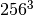
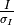

DIALS processing may be performed by either running the individual tools (spot finding, indexing, refinement, integration, exporting to MTZ) or you can run xia2 -dials, which makes informed choices for you at each stage. In this tutorial we will run through each of the steps in turn, checking the output as we go. We will also enforce the correct lattice symmetry.
The following example uses a Thaumatin dataset collected using beamline I04
at Diamond Light Source which is available for download from  .
.
The first stage of step-by-step DIALS processing is to import the data - all that happens here is that the image headers are read, and a file describing their contents (datablock.json) is written. It’s worth noting that if this file is changed subsequent processing can use this.
dials.import data/th_8_2_0*cbf
The output just describes what the software understands of the images it was passed, in this case one sweep of data containing 540 images.
The following parameters have been modified:
input {
datablock = <image files>
}
--------------------------------------------------------------------------------
DataBlock 0
format: <class 'dxtbx.format.FormatCBFMiniPilatusDLS6MSN100.FormatCBFMiniPilatusDLS6MSN100'>
num images: 540
num sweeps: 1
num stills: 0
--------------------------------------------------------------------------------
Writing datablocks to datablock.json
The first “real” task in any DIALS processing will be the spot finding. Here we request multiple processors to speed up the spot-finding (nproc=4). It takes a little while because we are finding spots on every image in the dataset. This reflects the modular philosophy of the DIALS toolkit and will enable us to do global refinement later on.
dials.find_spots datablock.json nproc=4
This will just report the number of spots found.
The following parameters have been modified:
spotfinder {
mp {
nproc = 4
}
}
input {
datablock = datablock.json
}
Setting spotfinder.filter.min_spot_size=3
Configuring spot finder from input parameters
--------------------------------------------------------------------------------
Finding strong spots in imageset 0
--------------------------------------------------------------------------------
Finding spots in image 1 to 540...
Extracting strong pixels from images (may take a while)
Extracted strong pixels from images
Merging 4 pixel lists
Merged 4 pixel lists with 922120 pixels
Extracting spots
Extracted 219125 spots
Calculating 219125 spot centroids
Calculated 219125 spot centroids
Calculating 219125 spot intensities
Calculated 219125 spot intensities
Filtering 219125 spots by number of pixels
Filtered 116321 spots by number of pixels
Filtering 116321 spots by peak-centroid distance
Filtered 116082 spots by peak-centroid distance
--------------------------------------------------------------------------------
Saving 116082 reflections to strong.pickle
Saved 116082 reflections to strong.pickle
Time Taken: 244.644334
The default parameters for dials.find_spots usually do a good job for Pilatus images, such as these. However they may not be optimal for data from other detector types, such as CCDs or image plates. Issues with incorrectly set gain or sigma thresholds might lead to far too many spots being extracted (for example). If you are having issues with spot finding, it is worth inspecting the images with dials.image_viewer:
dials.image_viewer datablock.json
Viewing the various images from ‘image’ to ‘threshold’ gives an idea of how the various parameters affect the spot finding algorithm. The final image, ‘threshold’ is the one on which spots are found, so ensuring this produces peaks at real diffraction spot positions will give the best chance of success.
Having found strong spots it is worth checking the image viewer again:
dials.image_viewer datablock.json strong.pickle
The dials.image_viewer tool is not as fast as tools such as ADXV, however it does integrate well with DIALS data files. Information about the beam centre, spot centroids, reflection shoeboxes and other data stored in the pickle files created by DIALS programs can be overlaid on the diffraction images. You may need to adjust the colour scheme and brightness to get the best out of it. A brightness of 20 with the ‘invert’ colour scheme works well with this data. Move forward a few images to find a spot whose complete rocking curve is recorded. The highest valued pixel in that three dimensional spot is marked with a pink dot. The spot centre of mass is a red cross. This is usually close to the peak pixel, but slightly offset as the centroid algorithm allows to calculate the spot centre at a better precision than the pixel size and image angular ‘width’. The strong pixels marked as being part of the peak are highlighted with a green dot. The reflection shoebox you see with a blue border is the smallest three dimensional box that can contain the continuous peak region, that is, there is no background border region displayed here.

The next step will be indexing of the strong spots, which by default uses a 3D FFT
algorithm, although the 1D FFT algorithm can be selected using the parameter
indexing.method=fft1d. We will pass in all the strong spots found in
the dataset - so no need to select subsets of images widely separated in
 .
.
dials.index datablock.json strong.pickle
If known, the space group and unit cell can be provided at this stage using the space_group and unit_cell parameters, otherwise indexing and refinement will be carried out in the primitive lattice using space group P1.
The following parameters have been modified:
input {
datablock = datablock.json
reflections = strong.pickle
}
Found max_cell: 199.0 Angstrom
Setting d_min: 3.89
FFT gridding: (256,256,256)
Number of centroids used: 13300
model 1 (13247 reflections):
Crystal:
Unit cell: (57.921, 58.371, 150.299, 89.667, 89.649, 89.680)
Space group: P 1
U matrix: {{ 0.3455, -0.2607, -0.9015},
{ 0.8911, 0.3923, 0.2281},
{ 0.2942, -0.8821, 0.3679}}
B matrix: {{ 0.0173, 0.0000, 0.0000},
{-0.0001, 0.0171, 0.0000},
{-0.0001, -0.0001, 0.0067}}
A = UB: {{ 0.0061, -0.0044, -0.0060},
{ 0.0153, 0.0067, 0.0015},
{ 0.0051, -0.0151, 0.0024}}
43 unindexed reflections
################################################################################
Starting refinement (macro-cycle 1)
################################################################################
Summary statistics for 12587 observations matched to predictions:
------------------------------------------------------------------------
| | Min | Q1 | Med | Q3 | Max |
------------------------------------------------------------------------
| Xc - Xo (mm) | -0.6273 | -0.3345 | -0.221 | -0.1101 | 0.5301 |
| Yc - Yo (mm) | -0.8662 | -0.2457 | -0.1146 | -0.01267 | 0.9343 |
| Phic - Phio (deg) | -0.7721 | -0.2122 | -0.06015 | 0.03931 | 1.003 |
| X weights | 253.5 | 401.7 | 404.2 | 405.1 | 405.6 |
| Y weights | 260.5 | 402.6 | 404.5 | 405.3 | 405.6 |
| Phi weights | 416.1 | 527.9 | 531 | 532.2 | 533.3 |
------------------------------------------------------------------------
3946 reflections have been flagged as outliers
Summary statistics for 8641 observations matched to predictions:
-----------------------------------------------------------------------
| | Min | Q1 | Med | Q3 | Max |
-----------------------------------------------------------------------
| Xc - Xo (mm) | -0.6273 | -0.2947 | -0.2146 | -0.1342 | 0.2299 |
| Yc - Yo (mm) | -0.6097 | -0.2361 | -0.1284 | 0.01041 | 0.3705 |
| Phic - Phio (deg) | -0.2741 | -0.07201 | 0.01117 | 0.05844 | 0.3017 |
| X weights | 272.3 | 401.9 | 404.2 | 405.1 | 405.6 |
| Y weights | 260.5 | 402.5 | 404.5 | 405.3 | 405.6 |
| Phi weights | 416.1 | 527.3 | 530.6 | 532 | 533.3 |
-----------------------------------------------------------------------
Refinement steps:
------------------------------------------------
| Step | Nref | RMSD_X | RMSD_Y | RMSD_Phi |
| | | (mm) | (mm) | (deg) |
------------------------------------------------
| 0 | 8099 | 0.25262 | 0.19497 | 0.09591 |
| 1 | 8099 | 0.045549 | 0.049455 | 0.058759 |
| 2 | 8099 | 0.039928 | 0.043797 | 0.038546 |
| 3 | 8099 | 0.03751 | 0.041609 | 0.025968 |
| 4 | 8099 | 0.035937 | 0.038939 | 0.01932 |
| 5 | 8099 | 0.03449 | 0.03661 | 0.015198 |
| 6 | 8099 | 0.032856 | 0.034551 | 0.01412 |
| 7 | 8099 | 0.031925 | 0.033419 | 0.013951 |
------------------------------------------------
RMSD target achieved
RMSDs by experiment:
---------------------------------------------
| Exp | Nref | RMSD_X | RMSD_Y | RMSD_Z |
| | | (px) | (px) | (images) |
---------------------------------------------
| 0 | 8099 | 0.18561 | 0.19429 | 0.093008 |
---------------------------------------------
Using d_min_step 0.7
Increasing resolution to 3.2 Angstrom
model 1 (23321 reflections):
Crystal:
Unit cell: (57.817, 57.798, 150.059, 90.000, 89.975, 89.982)
Space group: P 1
U matrix: {{ 0.3454, -0.2592, -0.9020},
{ 0.8915, 0.3909, 0.2290},
{ 0.2932, -0.8832, 0.3660}}
B matrix: {{ 0.0173, 0.0000, 0.0000},
{-0.0000, 0.0173, 0.0000},
{-0.0000, -0.0000, 0.0067}}
A = UB: {{ 0.0060, -0.0045, -0.0060},
{ 0.0154, 0.0068, 0.0015},
{ 0.0051, -0.0153, 0.0024}}
121 unindexed reflections
################################################################################
Starting refinement (macro-cycle 2)
################################################################################
Summary statistics for 22503 observations matched to predictions:
---------------------------------------------------------------------------
| | Min | Q1 | Med | Q3 | Max |
---------------------------------------------------------------------------
| Xc - Xo (mm) | -0.2819 | -0.02559 | -0.006089 | 0.02833 | 0.2497 |
| Yc - Yo (mm) | -0.7153 | -0.02154 | -0.0006612 | 0.01967 | 0.2822 |
| Phic - Phio (deg) | -1.056 | -0.01225 | -0.00219 | 0.007941 | 0.9044 |
| X weights | 243.1 | 400.9 | 403.8 | 404.9 | 405.6 |
| Y weights | 239.1 | 401.3 | 404 | 405 | 405.6 |
| Phi weights | 401.5 | 527.6 | 530.8 | 532.2 | 533.3 |
---------------------------------------------------------------------------
1735 reflections have been flagged as outliers
Summary statistics for 20768 observations matched to predictions:
----------------------------------------------------------------------------
| | Min | Q1 | Med | Q3 | Max |
----------------------------------------------------------------------------
| Xc - Xo (mm) | -0.1255 | -0.02278 | -0.004419 | 0.03046 | 0.1274 |
| Yc - Yo (mm) | -0.09211 | -0.02208 | -0.002262 | 0.01627 | 0.08415 |
| Phic - Phio (deg) | -0.04548 | -0.01157 | -0.001944 | 0.007976 | 0.04195 |
| X weights | 243.1 | 401.1 | 403.8 | 404.9 | 405.6 |
| Y weights | 260.5 | 401.4 | 404 | 405 | 405.6 |
| Phi weights | 419 | 527.7 | 530.8 | 532.2 | 533.3 |
----------------------------------------------------------------------------
Refinement steps:
------------------------------------------------
| Step | Nref | RMSD_X | RMSD_Y | RMSD_Phi |
| | | (mm) | (mm) | (deg) |
------------------------------------------------
| 0 | 8099 | 0.036948 | 0.029104 | 0.014138 |
| 1 | 8099 | 0.035625 | 0.028759 | 0.013849 |
| 2 | 8099 | 0.035575 | 0.028673 | 0.013761 |
| 3 | 8099 | 0.035491 | 0.028572 | 0.013696 |
| 4 | 8099 | 0.035329 | 0.028478 | 0.013661 |
| 5 | 8099 | 0.034994 | 0.028376 | 0.01364 |
| 6 | 8099 | 0.034535 | 0.028362 | 0.013618 |
| 7 | 8099 | 0.034236 | 0.028482 | 0.013601 |
------------------------------------------------
RMSD target achieved
RMSDs by experiment:
--------------------------------------------
| Exp | Nref | RMSD_X | RMSD_Y | RMSD_Z |
| | | (px) | (px) | (images) |
--------------------------------------------
| 0 | 8099 | 0.19904 | 0.1656 | 0.090674 |
--------------------------------------------
Increasing resolution to 2.6 Angstrom
model 1 (43351 reflections):
Crystal:
Unit cell: (57.803, 57.774, 150.034, 90.013, 89.985, 89.985)
Space group: P 1
U matrix: {{ 0.3455, -0.2590, -0.9020},
{ 0.8914, 0.3909, 0.2292},
{ 0.2932, -0.8832, 0.3660}}
B matrix: {{ 0.0173, 0.0000, 0.0000},
{-0.0000, 0.0173, 0.0000},
{-0.0000, 0.0000, 0.0067}}
A = UB: {{ 0.0060, -0.0045, -0.0060},
{ 0.0154, 0.0068, 0.0015},
{ 0.0051, -0.0153, 0.0024}}
137 unindexed reflections
################################################################################
Starting refinement (macro-cycle 3)
################################################################################
Summary statistics for 42356 observations matched to predictions:
---------------------------------------------------------------------------
| | Min | Q1 | Med | Q3 | Max |
---------------------------------------------------------------------------
| Xc - Xo (mm) | -0.4998 | -0.02525 | 0.005632 | 0.03222 | 0.2593 |
| Yc - Yo (mm) | -0.7029 | -0.01376 | 0.005869 | 0.02693 | 0.2895 |
| Phic - Phio (deg) | -1.052 | -0.0111 | -0.0008604 | 0.009937 | 0.9071 |
| X weights | 202.8 | 396.9 | 402.3 | 404.5 | 405.6 |
| Y weights | 210.9 | 396.1 | 402.2 | 404.5 | 405.6 |
| Phi weights | 386.4 | 524.9 | 530 | 532.1 | 533.3 |
---------------------------------------------------------------------------
3133 reflections have been flagged as outliers
Summary statistics for 39223 observations matched to predictions:
-----------------------------------------------------------------------------
| | Min | Q1 | Med | Q3 | Max |
-----------------------------------------------------------------------------
| Xc - Xo (mm) | -0.1002 | -0.02185 | 0.006974 | 0.03186 | 0.1178 |
| Yc - Yo (mm) | -0.09104 | -0.01401 | 0.004719 | 0.02419 | 0.09074 |
| Phic - Phio (deg) | -0.05335 | -0.01072 | -0.0008778 | 0.009558 | 0.05109 |
| X weights | 243.1 | 397.6 | 402.5 | 404.5 | 405.6 |
| Y weights | 231.2 | 396.8 | 402.3 | 404.5 | 405.6 |
| Phi weights | 399.5 | 525.1 | 530 | 532.1 | 533.3 |
-----------------------------------------------------------------------------
Refinement steps:
------------------------------------------------
| Step | Nref | RMSD_X | RMSD_Y | RMSD_Phi |
| | | (mm) | (mm) | (deg) |
------------------------------------------------
| 0 | 8099 | 0.040833 | 0.028811 | 0.014766 |
| 1 | 8099 | 0.038652 | 0.028397 | 0.015029 |
| 2 | 8099 | 0.038634 | 0.028391 | 0.014977 |
| 3 | 8099 | 0.038599 | 0.028358 | 0.014913 |
| 4 | 8099 | 0.038524 | 0.028261 | 0.014863 |
| 5 | 8099 | 0.038385 | 0.028068 | 0.014844 |
| 6 | 8099 | 0.038197 | 0.027853 | 0.014846 |
| 7 | 8099 | 0.038038 | 0.027798 | 0.014865 |
| 8 | 8099 | 0.037974 | 0.027835 | 0.014884 |
| 9 | 8099 | 0.037964 | 0.027845 | 0.014887 |
| 10 | 8099 | 0.037963 | 0.027846 | 0.014888 |
------------------------------------------------
RMSD no longer decreasing
RMSDs by experiment:
--------------------------------------------
| Exp | Nref | RMSD_X | RMSD_Y | RMSD_Z |
| | | (px) | (px) | (images) |
--------------------------------------------
| 0 | 8099 | 0.22072 | 0.1619 | 0.099251 |
--------------------------------------------
Increasing resolution to 1.9 Angstrom
model 1 (89300 reflections):
Crystal:
Unit cell: (57.816, 57.780, 150.033, 90.021, 89.998, 89.987)
Space group: P 1
U matrix: {{ 0.3456, -0.2588, -0.9020},
{ 0.8914, 0.3909, 0.2293},
{ 0.2932, -0.8833, 0.3658}}
B matrix: {{ 0.0173, 0.0000, 0.0000},
{-0.0000, 0.0173, 0.0000},
{-0.0000, 0.0000, 0.0067}}
A = UB: {{ 0.0060, -0.0045, -0.0060},
{ 0.0154, 0.0068, 0.0015},
{ 0.0051, -0.0153, 0.0024}}
300 unindexed reflections
################################################################################
Starting refinement (macro-cycle 4)
################################################################################
Summary statistics for 88041 observations matched to predictions:
-------------------------------------------------------------------------
| | Min | Q1 | Med | Q3 | Max |
-------------------------------------------------------------------------
| Xc - Xo (mm) | -0.4799 | -0.03089 | 0.0003285 | 0.03191 | 0.666 |
| Yc - Yo (mm) | -1.42 | -0.01888 | 0.004044 | 0.02674 | 1.434 |
| Phic - Phio (deg) | -1.429 | -0.0132 | -0.0007595 | 0.01228 | 0.904 |
| X weights | 202.8 | 384.6 | 397.4 | 403.3 | 405.6 |
| Y weights | 171 | 378.6 | 395 | 402.6 | 405.6 |
| Phi weights | 318.9 | 520.3 | 529.4 | 533.3 | 533.3 |
-------------------------------------------------------------------------
8376 reflections have been flagged as outliers
Summary statistics for 79665 observations matched to predictions:
----------------------------------------------------------------------------
| | Min | Q1 | Med | Q3 | Max |
----------------------------------------------------------------------------
| Xc - Xo (mm) | -0.1513 | -0.02939 | 0.001506 | 0.03141 | 0.1454 |
| Yc - Yo (mm) | -0.091 | -0.01607 | 0.004705 | 0.02588 | 0.09951 |
| Phic - Phio (deg) | -0.05534 | -0.01211 | -0.0005974 | 0.01149 | 0.05482 |
| X weights | 205 | 387.5 | 398.3 | 403.5 | 405.6 |
| Y weights | 171 | 382.7 | 396.4 | 402.9 | 405.6 |
| Phi weights | 318.9 | 520.3 | 529.1 | 532.9 | 533.3 |
----------------------------------------------------------------------------
Refinement steps:
------------------------------------------------
| Step | Nref | RMSD_X | RMSD_Y | RMSD_Phi |
| | | (mm) | (mm) | (deg) |
------------------------------------------------
| 0 | 8099 | 0.043111 | 0.032408 | 0.017506 |
| 1 | 8099 | 0.041928 | 0.031794 | 0.017743 |
| 2 | 8099 | 0.041917 | 0.031776 | 0.017682 |
| 3 | 8099 | 0.041912 | 0.031704 | 0.017605 |
| 4 | 8099 | 0.041912 | 0.031552 | 0.01753 |
| 5 | 8099 | 0.041942 | 0.031315 | 0.017478 |
| 6 | 8099 | 0.042007 | 0.031079 | 0.017451 |
| 7 | 8099 | 0.042063 | 0.030943 | 0.017445 |
| 8 | 8099 | 0.042084 | 0.030905 | 0.017446 |
| 9 | 8099 | 0.042088 | 0.030899 | 0.017446 |
| 10 | 8099 | 0.042088 | 0.030899 | 0.017446 |
------------------------------------------------
RMSD no longer decreasing
RMSDs by experiment:
--------------------------------------------
| Exp | Nref | RMSD_X | RMSD_Y | RMSD_Z |
| | | (px) | (px) | (images) |
--------------------------------------------
| 0 | 8099 | 0.2447 | 0.17965 | 0.11631 |
--------------------------------------------
Increasing resolution to 1.3 Angstrom
model 1 (114690 reflections):
Crystal:
Unit cell: (57.818, 57.787, 150.042, 90.017, 89.991, 89.987)
Space group: P 1
U matrix: {{ 0.3455, -0.2588, -0.9020},
{ 0.8914, 0.3909, 0.2292},
{ 0.2933, -0.8833, 0.3658}}
B matrix: {{ 0.0173, 0.0000, 0.0000},
{-0.0000, 0.0173, 0.0000},
{-0.0000, 0.0000, 0.0067}}
A = UB: {{ 0.0060, -0.0045, -0.0060},
{ 0.0154, 0.0068, 0.0015},
{ 0.0051, -0.0153, 0.0024}}
342 unindexed reflections
################################################################################
Starting refinement (macro-cycle 5)
################################################################################
Summary statistics for 113247 observations matched to predictions:
--------------------------------------------------------------------------
| | Min | Q1 | Med | Q3 | Max |
--------------------------------------------------------------------------
| Xc - Xo (mm) | -0.5362 | -0.03489 | -0.005804 | 0.02931 | 0.6694 |
| Yc - Yo (mm) | -1.422 | -0.03094 | -0.002765 | 0.02078 | 1.277 |
| Phic - Phio (deg) | -1.428 | -0.01486 | -0.0008583 | 0.01338 | 0.904 |
| X weights | 135.2 | 371.6 | 393.4 | 402.6 | 405.6 |
| Y weights | 153.1 | 361.8 | 389 | 401.2 | 405.6 |
| Phi weights | 318.9 | 519.5 | 530.4 | 533.3 | 533.3 |
--------------------------------------------------------------------------
15831 reflections have been flagged as outliers
Summary statistics for 97416 observations matched to predictions:
----------------------------------------------------------------------------
| | Min | Q1 | Med | Q3 | Max |
----------------------------------------------------------------------------
| Xc - Xo (mm) | -0.1551 | -0.03196 | -0.004108 | 0.02831 | 0.1469 |
| Yc - Yo (mm) | -0.1018 | -0.02235 | 0.0001217 | 0.02129 | 0.1031 |
| Phic - Phio (deg) | -0.06057 | -0.01301 | -0.0006185 | 0.01212 | 0.05963 |
| X weights | 135.2 | 379.3 | 395.7 | 403 | 405.6 |
| Y weights | 161.8 | 372.1 | 392.6 | 402 | 405.6 |
| Phi weights | 318.9 | 519.4 | 529.7 | 533.3 | 533.3 |
----------------------------------------------------------------------------
Refinement steps:
------------------------------------------------
| Step | Nref | RMSD_X | RMSD_Y | RMSD_Phi |
| | | (mm) | (mm) | (deg) |
------------------------------------------------
| 0 | 8099 | 0.043891 | 0.033803 | 0.019505 |
| 1 | 8099 | 0.043632 | 0.03382 | 0.019443 |
| 2 | 8099 | 0.04361 | 0.033754 | 0.019422 |
| 3 | 8099 | 0.043569 | 0.033658 | 0.019407 |
| 4 | 8099 | 0.043502 | 0.033558 | 0.019407 |
| 5 | 8099 | 0.043426 | 0.033469 | 0.019415 |
| 6 | 8099 | 0.043381 | 0.033409 | 0.019428 |
| 7 | 8099 | 0.043377 | 0.033369 | 0.01944 |
| 8 | 8099 | 0.043381 | 0.033354 | 0.019445 |
| 9 | 8099 | 0.043383 | 0.033352 | 0.019446 |
------------------------------------------------
RMSD no longer decreasing
RMSDs by experiment:
---------------------------------------------
| Exp | Nref | RMSD_X | RMSD_Y | RMSD_Z |
| | | (px) | (px) | (images) |
---------------------------------------------
| 0 | 8099 | 0.25222 | 0.19391 | 0.12964 |
---------------------------------------------
Final refined crystal models:
model 1 (114690 reflections):
Crystal:
Unit cell: (57.814, 57.786, 150.040, 90.014, 89.990, 89.988)
Space group: P 1
U matrix: {{ 0.3455, -0.2589, -0.9020},
{ 0.8914, 0.3909, 0.2292},
{ 0.2933, -0.8833, 0.3658}}
B matrix: {{ 0.0173, 0.0000, 0.0000},
{-0.0000, 0.0173, 0.0000},
{-0.0000, 0.0000, 0.0067}}
A = UB: {{ 0.0060, -0.0045, -0.0060},
{ 0.0154, 0.0068, 0.0015},
{ 0.0051, -0.0153, 0.0024}}
Saving refined experiments to experiments.json
Saving refined reflections to indexed.pickle
It is worth looking through this output to understand what the indexing program has done. Note that this log is automatically captured in the file dials.index.log. There is also a somewhat more information written into dials.index.debug.log, but this is probably only helpful if something has gone wrong and you are trying to track down why.
Inspecting the log shows that the indexing step is done at fairly low resolution: Setting d_min: 3.89. The resolution limit of data that can be used in indexing is determined by the size of the 3D FFT grid and the likely maximum cell dimension. Here we used  grid points: FFT gridding: (256,256,256). What follows are four macrocycles of refinement at increasing resolution to bootstrap the indexing solution to as many of the strong reflections as possible. In each case you can see that only 8099 reflections are used in the refinement job. The diffraction geometry is here described by only 16 parameters (6 for the detector, 1 beam angle, 3 crystal ‘misset’ angles and 6 triclinic cell parameters). The problem is thus hugely overdetermined. In order to save time, refinement uses a subset of the input reflections, by default using 100 reflections for every degree of the scan.
Continuing to look through the log, we see that the first macrocyle of refinement makes
a big improvement in the positional RMSDs. The second macrocycle includes more reflections, after
extending to 3.2 Angstroms. The current model now shows slightly worse RMSDs
at the start, now that the higher resolution reflections are included, but refinement reduces
these again.
A similar situation is observed on the third and fourth macrocycles.
The RMSDs start higher again, now that more reflections are included, but refinement
is able to drive these down a little.
The final macrocycle includes data out to 1.3 Angstroms and refinement produces
a final model with
RMSDs of 0.043 mm in X, 0.033 mm in Y and 0.019 degrees in , corresponding
to 0.25 pixels in X, 0.19 pixels in Y and 0.13 image widths in .
Despite the high quality of this data, we notice from the Summary statistics tables that there were some outliers identified and removed from refinement as resolution increases. In the final macrocyle, prior to outlier rejection, we see the distribution of positional residuals in the Y direction is tight around the median, except for extreme values both positive and negative of more than 1 mm. The angular residuals show a similar pattern with half the data having residuals of less than about 0.14 degrees from the predicted positions, but the extreme is as much as 1.4 degrees from the predicted diffraction angle. Large outliers can dominate refinement using a least squares target, so it is important to be able to remove these.
If you want to specify the Bravais lattice for processing (i.e. include the lattice constraints in the refinement) then you need to either specify this lattice at this stage as
space_group=P4
as a command-line option to dials.index or you can use dials.refine_bravais_settings, which will take the results of the P1 autoindexing and run refinement with all of the possible Bravais settings applied - after which you may select the preferred solution.
dials.refine_bravais_settings experiments.json indexed.pickle
gives a table containing scoring data and unit cell for each Bravais setting. The scores include the the metric fit (in degrees), RMSDs (in mm), and the best and worse correlation coefficients for data related by symmetry elements implied by the lowest symmetry space group from the Bravais setting. This uses the raw spot intensity measurement from the spot-finding procedure (uncorrected and unscaled) but provides a very useful check to see if the data does appear to adhere to the proposed symmetry operators.
The following parameters have been modified:
input {
experiments = experiments.json
reflections = indexed.pickle
}
-----------------------------------------------------------------------------------------------------------------
Solution Metric fit rmsd min/max cc #spots lattice unit_cell volume cb_op
-----------------------------------------------------------------------------------------------------------------
9 0.0329 0.060 0.787/0.848 8099 tP 57.79 57.79 150.01 90.00 90.00 90.00 500952 a,b,c
8 0.0329 0.060 0.787/0.970 8099 oC 81.72 81.74 150.02 90.00 90.00 90.00 1002159 a-b,a+b,c
7 0.0186 0.058 0.787/0.899 8099 oP 57.80 57.77 150.01 90.00 90.00 90.00 500903 a,b,c
6 0.0282 0.058 0.970/0.970 8099 mC 81.73 81.75 150.03 90.00 89.98 90.00 1002387 a-b,a+b,c
5 0.0329 0.060 0.795/0.795 8099 mC 81.74 81.73 150.02 90.00 89.99 90.00 1002160 a+b,-a+b,c
4 0.0159 0.057 0.807/0.807 8099 mP 57.77 57.80 150.02 90.00 90.02 90.00 500999 -b,-a,-c
3 0.0186 0.057 0.899/0.899 8099 mP 57.80 57.78 150.02 90.00 89.98 90.00 501051 a,b,c
2 0.0174 0.058 0.787/0.787 8099 mP 57.78 150.02 57.80 90.00 89.99 90.00 501053 b,c,a
1 0.0000 0.056 -/- 8099 aP 57.81 57.78 150.03 90.01 89.99 89.99 501153 a,b,c
-----------------------------------------------------------------------------------------------------------------
usr+sys time: 1.85 seconds, ticks: 2880473, micro-seconds/tick: 0.642
wall clock time: 7.98 seconds
In this example we would continue processing (i.e. proceed to the refinement step, perhaps) with bravais_setting_9.json. Sometimes it may be necessary to reindex the indexed.pickle file output by dials.index. However, in this case as the change of basis operator to the chosen setting is the identity operator (a,b,c) this step is not needed. We run it anyway to demonstrate its use:
dials.reindex indexed.pickle change_of_basis_op=a,b,c
This outputs the file reindexed_reflections.pickle which should be used as input to downstream programs in place of indexed.pickle.
Although the model is already refined during indexing we can also add an explicit refinement step using dials.refine in here. There are many options to refinement. As an aside, to show all the options up to and including expert_level = 1 use this command:
dials.refine -c -e 1
Equivalent command-line options exist for all the main DIALS programs.
The main reason we may want to do an additional refinement job is to use a more sophisticated model for the crystal, allowing small misset rotations to occur over the course of the scan. There are usually even small changes to the cell dimensions (typically resulting in a net increase in cell volume) caused by exposure to radiation during data collection. To account for both of these effects we can extend our parameterisation to obtain a smoothed ‘scan-varying’ model for both the crystal orientation and unit cell. To do this, we run a further refinement job starting from the output of the previous job:
dials.refine bravais_setting_9.json indexed.pickle scan_varying=true
The output for this job is
The following parameters have been modified:
refinement {
parameterisation {
crystal {
scan_varying = True
}
}
}
input {
experiments = bravais_setting_9.json
reflections = indexed.pickle
}
Configuring refiner
Summary statistics for 113247 observations matched to predictions:
-------------------------------------------------------------------------
| | Min | Q1 | Med | Q3 | Max |
-------------------------------------------------------------------------
| Xc - Xo (mm) | -0.5303 | -0.0331 | -0.002319 | 0.03245 | 0.6452 |
| Yc - Yo (mm) | -1.401 | -0.03109 | -0.001618 | 0.0284 | 1.258 |
| Phic - Phio (deg) | -1.412 | -0.01513 | -0.000563 | 0.01405 | 0.9108 |
| X weights | 135.2 | 371.6 | 393.4 | 402.6 | 405.6 |
| Y weights | 153.1 | 361.8 | 389 | 401.2 | 405.6 |
| Phi weights | 318.9 | 519.5 | 530.4 | 533.3 | 533.3 |
-------------------------------------------------------------------------
11513 reflections have been flagged as outliers
Summary statistics for 101734 observations matched to predictions:
----------------------------------------------------------------------------
| | Min | Q1 | Med | Q3 | Max |
----------------------------------------------------------------------------
| Xc - Xo (mm) | -0.1535 | -0.03167 | -0.00201 | 0.03074 | 0.1398 |
| Yc - Yo (mm) | -0.1269 | -0.02811 | -0.001139 | 0.02658 | 0.1175 |
| Phic - Phio (deg) | -0.05943 | -0.01303 | -8.031e-05 | 0.01333 | 0.06245 |
| X weights | 135.2 | 377.6 | 395.1 | 402.9 | 405.6 |
| Y weights | 153.1 | 369.4 | 391.6 | 401.8 | 405.6 |
| Phi weights | 318.9 | 519.2 | 529.8 | 533.3 | 533.3 |
----------------------------------------------------------------------------
Performing refinement...
Refinement steps:
------------------------------------------------
| Step | Nref | RMSD_X | RMSD_Y | RMSD_Phi |
| | | (mm) | (mm) | (deg) |
------------------------------------------------
| 0 | 8099 | 0.0452 | 0.040499 | 0.019978 |
| 1 | 8099 | 0.044736 | 0.038337 | 0.020025 |
| 2 | 8099 | 0.044799 | 0.038147 | 0.019966 |
| 3 | 8099 | 0.044834 | 0.038001 | 0.019922 |
| 4 | 8099 | 0.044845 | 0.03791 | 0.019824 |
| 5 | 8099 | 0.044852 | 0.037876 | 0.019685 |
| 6 | 8099 | 0.044854 | 0.037869 | 0.019616 |
| 7 | 8099 | 0.044854 | 0.037868 | 0.019608 |
| 8 | 8099 | 0.044854 | 0.037868 | 0.019608 |
------------------------------------------------
RMSD no longer decreasing
RMSDs by experiment:
---------------------------------------------
| Exp | Nref | RMSD_X | RMSD_Y | RMSD_Z |
| | | (px) | (px) | (images) |
---------------------------------------------
| 0 | 8099 | 0.26078 | 0.22016 | 0.13072 |
---------------------------------------------
Saving refined experiments to refined_experiments.json
Updating predictions for indexed reflections
Saving reflections with updated predictions to refined.pickle
In this case we didn’t alter the default choices that affect scan-varying refinement, the most important of which is the number of intervals into which the full scan is divided. This determines the number of samples that will be used by the Gaussian smoother. More samples allows sharper changes to the model, but overdoing this will lead to unphysical changes to the model that are just fitting noise in the data. Figuring out the optimum number of points to use is challenging. Here we are happy with the default interval width of 36 degrees (this is a parameter at expert_level = 1).
Diffraction geometry refinement, even with a scan-varying crystal model, is hugely over-determined. So it is reasonable to use a small subset of the total number of reflections to refine the model. However, if we are being extra careful about data processing and don’t mind a slightly longer run time we might want to use all reflections instead. In that case, we could use the following command:
dials.refine refined_experiments.json indexed.pickle scan_varying=true use_all_reflections=true
This improves on the positional RMSDs from the previous job, but the angular RMSD is slightly worse. In any case, the differences are only in the third decimal place:
RMSDs by experiment:
-----------------------------------------------
| Exp | Nref | RMSD_X | RMSD_Y | RMSD_Z |
| | | (px) | (px) | (images) |
-----------------------------------------------
| 0 | 101878 | 0.26205 | 0.21742 | 0.13255 |
-----------------------------------------------
The actual effect on the integrated data (in this case) of using the model refined against the full set of strong spots rather than the 100 reflections per degree subset quality is negligible.
To view the smoothly varying crystal cell parameters use the following command:
dials.plot_scan_varying_crystal refined_experiments.json
This program creates a directory scan-varying_crystal containing plots orientation.png and unit_cell.png. The latter of these is useful to check that changes to the cell during processing appear reasonable.

We see an overall increase in all three cell parameters, however the greatest change, in lengths a and b, is only about 0.02 Angstroms. If significant cell volume increases had been observed that might be indicative of radiation damage. However we can’t yet conclude that there is no radiation damage from the lack of considerable change observed. We can at least see from this and the low final refined RMSDs that this is a very well-behaved dataset though.
After the refinement is done the next step is integration, which is performed by the program dials.integrate. Mostly, the default parameters are fine, which will perform XDS-like 3D profile fitting. However, for datasets with very weak background, such as this, the default nsigma background outlier rejection algorithm tends to underestimate the real background value. This is because that method is only really appropriate for values from a normal distribution, which is a poor approximation for a Poisson distibution with a small mean, and significant skewness. For this reason we switch off all outlier rejection from the background calculation.
From checking the output of dials.integrate -c we see that the full parameter to do this is given by integration.background.simple.outlier.algorithm=null but partial string matching can be used for command line parameters when the partial match is unambiguous. This saves a lot of typing!
We will also increase the number of processors used to speed the job up.
dials.integrate refined_experiments.json refined.pickle \
outlier.algorithm=null nproc=4
The log file is quite long.
The following parameters have been modified:
integration {
mp {
nproc = 4
}
background {
simple {
outlier {
algorithm = *null nsigma truncated normal mosflm tukey
}
}
}
}
input {
experiments = refined_experiments.json
reflections = refined.pickle
}
================================================================================
Initialising
Processing reference reflections
read 114690 strong spots
using 114690 indexed reflections
time taken: 0.0772519
================================================================================
Predicting reflections
Prediction type: scan varying prediction
Predicted 374042 reflections
Matching reference spots with predicted reflections
114690 observed reflections input
374042 reflections predicted
114526 reflections matched
114525 reflections accepted
Calculating E.S.D Beam Divergence.
Calculating E.S.D Reflecting Range.
sigma b: 0.021874 degrees
sigma m: 0.065876 degrees
================================================================================
Processing reflections
Processing the following experiments:
Experiments: 1
Beams: 1
Detectors: 1
Goniometers: 1
Scans: 1
Crystals: 1
Imagesets: 1
================================================================================
Modelling reflection profiles
Split 1263 reflections overlapping job boundaries
Processing reflections in the following blocks of images:
block_size: 42 frames
--------------------------------------------------------------------------
# | Group | Frame From | Frame To | Angle From | Angle To | # Reflections
--------------------------------------------------------------------------
0 | 0 | 0 | 42 | 82.0 | 88.3 | 6735
1 | 0 | 21 | 63 | 85.15 | 91.45 | 4395
2 | 0 | 42 | 84 | 88.3 | 94.6 | 4456
3 | 0 | 63 | 105 | 91.45 | 97.75 | 4375
4 | 0 | 84 | 126 | 94.6 | 100.9 | 4464
5 | 0 | 105 | 147 | 97.75 | 104.05 | 4430
6 | 0 | 126 | 168 | 100.9 | 107.2 | 4397
7 | 0 | 147 | 189 | 104.05 | 110.35 | 4499
8 | 0 | 168 | 210 | 107.2 | 113.5 | 4433
9 | 0 | 189 | 231 | 110.35 | 116.65 | 4433
10 | 0 | 210 | 252 | 113.5 | 119.8 | 4429
11 | 0 | 231 | 273 | 116.65 | 122.95 | 4445
12 | 0 | 252 | 294 | 119.8 | 126.1 | 4461
13 | 0 | 273 | 315 | 122.95 | 129.25 | 4551
14 | 0 | 294 | 336 | 126.1 | 132.4 | 4496
15 | 0 | 315 | 357 | 129.25 | 135.55 | 4504
16 | 0 | 336 | 378 | 132.4 | 138.7 | 4568
17 | 0 | 357 | 399 | 135.55 | 141.85 | 4557
18 | 0 | 378 | 420 | 138.7 | 145.0 | 4619
19 | 0 | 399 | 441 | 141.85 | 148.15 | 4529
20 | 0 | 420 | 462 | 145.0 | 151.3 | 4470
21 | 0 | 441 | 483 | 148.15 | 154.45 | 4511
22 | 0 | 462 | 504 | 151.3 | 157.6 | 4442
23 | 0 | 483 | 525 | 154.45 | 160.75 | 4196
24 | 0 | 504 | 540 | 157.6 | 163.0 | 5681
--------------------------------------------------------------------------
Using multiprocessing with 4 parallel job(s) and 1 thread(s) per job
Beginning modelling job 0
Frames: 0 -> 42
Number of reflections
Partial: 432
Full: 6303
In ice ring: 0
Total: 6735
The following histogram shows the number of reflections predicted
to have all or part of their intensity on each frame.
0 [634 ]: ***********************************
1 [865 ]: ************************************************
2 [1004]: ********************************************************
3 [1024]: *********************************************************
4 [1011]: ********************************************************
5 [1018]: *********************************************************
6 [1005]: ********************************************************
7 [1023]: *********************************************************
8 [1072]: ************************************************************
9 [1056]: ***********************************************************
10 [1084]: ************************************************************
11 [1079]: ************************************************************
12 [1060]: ***********************************************************
13 [1070]: ************************************************************
14 [1089]: *************************************************************
15 [1113]: **************************************************************
16 [1142]: ****************************************************************
17 [1161]: *****************************************************************
18 [1165]: *****************************************************************
19 [1209]: ********************************************************************
20 [1183]: ******************************************************************
21 [1168]: *****************************************************************
22 [1150]: ****************************************************************
23 [1174]: ******************************************************************
24 [1155]: ****************************************************************
25 [1173]: *****************************************************************
26 [1144]: ****************************************************************
27 [1143]: ****************************************************************
28 [1116]: **************************************************************
29 [1088]: *************************************************************
30 [877 ]: *************************************************
31 [639 ]: ***********************************
32 [420 ]: ***********************
33 [202 ]: ***********
34 [115 ]: ******
35 [73 ]: ****
36 [53 ]: **
37 [41 ]: **
38 [33 ]: *
39 [25 ]: *
40 [22 ]: *
41 [21 ]: *
Memory usage:
Total system memory: 33.587 GB
Limit shoebox memory: 6.29755 GB
Required shoebox memory: 0.013622 GB
Modelled 0 / 66 reflection profiles on image 1
Modelled 53 / 179 reflection profiles on image 2
Modelled 127 / 180 reflection profiles on image 3
Modelled 176 / 202 reflection profiles on image 4
Modelled 182 / 200 reflection profiles on image 5
Modelled 175 / 188 reflection profiles on image 6
Modelled 158 / 175 reflection profiles on image 7
Modelled 186 / 206 reflection profiles on image 8
Modelled 170 / 177 reflection profiles on image 9
Modelled 208 / 220 reflection profiles on image 10
Modelled 216 / 230 reflection profiles on image 11
Modelled 200 / 209 reflection profiles on image 12
Modelled 187 / 201 reflection profiles on image 13
Modelled 190 / 200 reflection profiles on image 14
Modelled 186 / 196 reflection profiles on image 15
Modelled 202 / 209 reflection profiles on image 16
Modelled 194 / 201 reflection profiles on image 17
Modelled 175 / 185 reflection profiles on image 18
Modelled 241 / 250 reflection profiles on image 19
Modelled 225 / 232 reflection profiles on image 20
Modelled 213 / 224 reflection profiles on image 21
Modelled 186 / 191 reflection profiles on image 22
Modelled 221 / 231 reflection profiles on image 23
Modelled 193 / 200 reflection profiles on image 24
Modelled 237 / 247 reflection profiles on image 25
Modelled 206 / 217 reflection profiles on image 26
Modelled 217 / 221 reflection profiles on image 27
Modelled 181 / 191 reflection profiles on image 28
Modelled 221 / 230 reflection profiles on image 29
Modelled 228 / 238 reflection profiles on image 30
Modelled 208 / 219 reflection profiles on image 31
Modelled 211 / 218 reflection profiles on image 32
Modelled 83 / 87 reflection profiles on image 33
Modelled 41 / 42 reflection profiles on image 34
Modelled 19 / 20 reflection profiles on image 35
Modelled 12 / 12 reflection profiles on image 36
Modelled 7 / 8 reflection profiles on image 37
Modelled 6 / 8 reflection profiles on image 38
Modelled 3 / 3 reflection profiles on image 39
Modelled 1 / 1 reflection profiles on image 40
Modelled 11 / 21 reflection profiles on image 41
Beginning modelling job 1
Frames: 21 -> 63
Number of reflections
Partial: 47
Full: 4348
In ice ring: 0
Total: 4395
The following histogram shows the number of reflections predicted
to have all or part of their intensity on each frame.
21 [2 ]:
22 [9 ]:
23 [11 ]:
24 [13 ]:
25 [18 ]: *
26 [25 ]: *
27 [38 ]: **
28 [61 ]: ***
29 [96 ]: *****
30 [270 ]: ***************
31 [464 ]: ***************************
32 [658 ]: **************************************
33 [860 ]: **************************************************
34 [949 ]: *******************************************************
35 [986 ]: *********************************************************
36 [1024]: ************************************************************
37 [1047]: *************************************************************
38 [1054]: *************************************************************
39 [1034]: ************************************************************
40 [1021]: ************************************************************
41 [1054]: *************************************************************
42 [1067]: **************************************************************
43 [1121]: *****************************************************************
44 [1125]: ******************************************************************
45 [1157]: ********************************************************************
46 [1131]: ******************************************************************
47 [1113]: *****************************************************************
48 [1096]: ****************************************************************
49 [1105]: ****************************************************************
50 [1028]: ************************************************************
51 [825 ]: ************************************************
52 [602 ]: ***********************************
53 [358 ]: *********************
54 [174 ]: **********
55 [94 ]: *****
56 [61 ]: ***
57 [47 ]: **
58 [40 ]: **
59 [31 ]: *
60 [26 ]: *
61 [23 ]: *
62 [21 ]: *
Memory usage:
Total system memory: 33.587 GB
Limit shoebox memory: 6.29755 GB
Required shoebox memory: 0.0122634 GB
Modelled 106 / 109 reflection profiles on image 33
Modelled 155 / 161 reflection profiles on image 34
Modelled 170 / 181 reflection profiles on image 35
Modelled 167 / 173 reflection profiles on image 36
Modelled 188 / 195 reflection profiles on image 37
Modelled 194 / 199 reflection profiles on image 38
Modelled 212 / 224 reflection profiles on image 39
Modelled 184 / 189 reflection profiles on image 40
Modelled 219 / 240 reflection profiles on image 41
Modelled 169 / 178 reflection profiles on image 42
Modelled 200 / 209 reflection profiles on image 43
Modelled 173 / 177 reflection profiles on image 44
Modelled 214 / 220 reflection profiles on image 45
Modelled 230 / 240 reflection profiles on image 46
Modelled 217 / 223 reflection profiles on image 47
Modelled 203 / 210 reflection profiles on image 48
Modelled 217 / 225 reflection profiles on image 49
Modelled 210 / 217 reflection profiles on image 50
Modelled 212 / 223 reflection profiles on image 51
Modelled 235 / 244 reflection profiles on image 52
Modelled 176 / 184 reflection profiles on image 53
Modelled 75 / 80 reflection profiles on image 54
Modelled 29 / 33 reflection profiles on image 55
Modelled 12 / 14 reflection profiles on image 56
Modelled 7 / 7 reflection profiles on image 57
Modelled 9 / 9 reflection profiles on image 58
Modelled 4 / 5 reflection profiles on image 59
Modelled 3 / 3 reflection profiles on image 60
Modelled 2 / 2 reflection profiles on image 61
Modelled 3 / 21 reflection profiles on image 62
Beginning modelling job 2
Frames: 42 -> 84
Number of reflections
Partial: 33
Full: 4423
In ice ring: 0
Total: 4456
The following histogram shows the number of reflections predicted
to have all or part of their intensity on each frame.
42 [3 ]:
43 [8 ]:
44 [9 ]:
45 [18 ]: *
46 [24 ]: *
47 [32 ]: *
48 [44 ]: **
49 [60 ]: ***
50 [102 ]: ******
51 [290 ]: *****************
52 [491 ]: *****************************
53 [688 ]: *****************************************
54 [899 ]: ******************************************************
55 [980 ]: ***********************************************************
56 [1047]: ***************************************************************
57 [1066]: ****************************************************************
58 [1101]: ******************************************************************
59 [1112]: *******************************************************************
60 [1103]: ******************************************************************
61 [1090]: *****************************************************************
62 [1047]: ***************************************************************
63 [1051]: ***************************************************************
64 [1093]: ******************************************************************
65 [1111]: *******************************************************************
66 [1125]: ********************************************************************
67 [1114]: *******************************************************************
68 [1103]: ******************************************************************
69 [1066]: ****************************************************************
70 [1048]: ***************************************************************
71 [1021]: *************************************************************
72 [835 ]: **************************************************
73 [603 ]: ************************************
74 [404 ]: ************************
75 [164 ]: *********
76 [84 ]: *****
77 [60 ]: ***
78 [40 ]: **
79 [30 ]: *
80 [23 ]: *
81 [17 ]: *
82 [11 ]:
83 [9 ]:
Memory usage:
Total system memory: 33.587 GB
Limit shoebox memory: 6.29755 GB
Required shoebox memory: 0.0119942 GB
Modelled 117 / 124 reflection profiles on image 54
Modelled 152 / 160 reflection profiles on image 55
Modelled 193 / 199 reflection profiles on image 56
Modelled 189 / 198 reflection profiles on image 57
Modelled 189 / 193 reflection profiles on image 58
Modelled 202 / 205 reflection profiles on image 59
Modelled 207 / 217 reflection profiles on image 60
Modelled 231 / 242 reflection profiles on image 61
Modelled 209 / 224 reflection profiles on image 62
Modelled 173 / 183 reflection profiles on image 63
Modelled 182 / 186 reflection profiles on image 64
Modelled 193 / 198 reflection profiles on image 65
Modelled 194 / 204 reflection profiles on image 66
Modelled 217 / 227 reflection profiles on image 67
Modelled 217 / 227 reflection profiles on image 68
Modelled 204 / 209 reflection profiles on image 69
Modelled 192 / 204 reflection profiles on image 70
Modelled 214 / 221 reflection profiles on image 71
Modelled 225 / 232 reflection profiles on image 72
Modelled 192 / 199 reflection profiles on image 73
Modelled 230 / 240 reflection profiles on image 74
Modelled 77 / 80 reflection profiles on image 75
Modelled 23 / 24 reflection profiles on image 76
Modelled 19 / 20 reflection profiles on image 77
Modelled 8 / 10 reflection profiles on image 78
Modelled 6 / 7 reflection profiles on image 79
Modelled 6 / 6 reflection profiles on image 80
Modelled 4 / 6 reflection profiles on image 81
Modelled 2 / 2 reflection profiles on image 82
Modelled 0 / 9 reflection profiles on image 83
Beginning modelling job 3
Frames: 63 -> 105
Number of reflections
Partial: 44
Full: 4331
In ice ring: 0
Total: 4375
The following histogram shows the number of reflections predicted
to have all or part of their intensity on each frame.
63 [3 ]:
64 [7 ]:
65 [11 ]:
66 [15 ]:
67 [24 ]: *
68 [29 ]: *
69 [46 ]: **
70 [80 ]: ****
71 [139 ]: *******
72 [332 ]: ******************
73 [525 ]: *****************************
74 [705 ]: ****************************************
75 [898 ]: **************************************************
76 [954 ]: ******************************************************
77 [978 ]: *******************************************************
78 [1001]: ********************************************************
79 [1021]: *********************************************************
80 [1056]: ***********************************************************
81 [1087]: *************************************************************
82 [1105]: **************************************************************
83 [1140]: ****************************************************************
84 [1165]: ******************************************************************
85 [1179]: ******************************************************************
86 [1180]: *******************************************************************
87 [1144]: ****************************************************************
88 [1075]: *************************************************************
89 [1039]: **********************************************************
90 [1019]: *********************************************************
91 [1013]: *********************************************************
92 [949 ]: *****************************************************
93 [809 ]: *********************************************
94 [607 ]: **********************************
95 [390 ]: **********************
96 [189 ]: **********
97 [103 ]: *****
98 [67 ]: ***
99 [52 ]: **
100 [39 ]: **
101 [35 ]: *
102 [28 ]: *
103 [22 ]: *
104 [19 ]: *
Memory usage:
Total system memory: 33.587 GB
Limit shoebox memory: 6.29755 GB
Required shoebox memory: 0.0127455 GB
Modelled 120 / 124 reflection profiles on image 75
Modelled 162 / 168 reflection profiles on image 76
Modelled 176 / 181 reflection profiles on image 77
Modelled 185 / 192 reflection profiles on image 78
Modelled 179 / 184 reflection profiles on image 79
Modelled 187 / 194 reflection profiles on image 80
Modelled 179 / 189 reflection profiles on image 81
Modelled 193 / 207 reflection profiles on image 82
Modelled 193 / 218 reflection profiles on image 83
Modelled 205 / 214 reflection profiles on image 84
Modelled 207 / 212 reflection profiles on image 85
Modelled 211 / 219 reflection profiles on image 86
Modelled 247 / 254 reflection profiles on image 87
Modelled 201 / 210 reflection profiles on image 88
Modelled 217 / 222 reflection profiles on image 89
Modelled 180 / 192 reflection profiles on image 90
Modelled 211 / 219 reflection profiles on image 91
Modelled 160 / 167 reflection profiles on image 92
Modelled 191 / 202 reflection profiles on image 93
Modelled 215 / 217 reflection profiles on image 94
Modelled 190 / 201 reflection profiles on image 95
Modelled 85 / 86 reflection profiles on image 96
Modelled 36 / 36 reflection profiles on image 97
Modelled 15 / 15 reflection profiles on image 98
Modelled 13 / 13 reflection profiles on image 99
Modelled 4 / 4 reflection profiles on image 100
Modelled 6 / 7 reflection profiles on image 101
Modelled 6 / 6 reflection profiles on image 102
Modelled 2 / 3 reflection profiles on image 103
Modelled 1 / 19 reflection profiles on image 104
Beginning modelling job 4
Frames: 84 -> 126
Number of reflections
Partial: 48
Full: 4416
In ice ring: 0
Total: 4464
The following histogram shows the number of reflections predicted
to have all or part of their intensity on each frame.
84 [1 ]:
85 [2 ]:
86 [4 ]:
87 [8 ]:
88 [13 ]:
89 [24 ]: *
90 [36 ]: **
91 [62 ]: ***
92 [106 ]: ******
93 [310 ]: ******************
94 [530 ]: *******************************
95 [740 ]: ********************************************
96 [966 ]: *********************************************************
97 [1069]: ***************************************************************
98 [1086]: ****************************************************************
99 [1092]: *****************************************************************
100 [1108]: ******************************************************************
101 [1071]: ****************************************************************
102 [1076]: ****************************************************************
103 [1068]: ***************************************************************
104 [1083]: ****************************************************************
105 [1121]: *******************************************************************
106 [1116]: ******************************************************************
107 [1078]: ****************************************************************
108 [1062]: ***************************************************************
109 [1061]: ***************************************************************
110 [1070]: ***************************************************************
111 [1059]: ***************************************************************
112 [1047]: **************************************************************
113 [1018]: ************************************************************
114 [811 ]: ************************************************
115 [603 ]: ************************************
116 [410 ]: ************************
117 [178 ]: **********
118 [97 ]: *****
119 [69 ]: ****
120 [46 ]: **
121 [34 ]: **
122 [30 ]: *
123 [28 ]: *
124 [19 ]: *
125 [16 ]:
Memory usage:
Total system memory: 33.587 GB
Limit shoebox memory: 6.29755 GB
Required shoebox memory: 0.0123037 GB
Modelled 138 / 145 reflection profiles on image 96
Modelled 173 / 178 reflection profiles on image 97
Modelled 204 / 209 reflection profiles on image 98
Modelled 180 / 182 reflection profiles on image 99
Modelled 231 / 240 reflection profiles on image 100
Modelled 198 / 208 reflection profiles on image 101
Modelled 211 / 216 reflection profiles on image 102
Modelled 184 / 190 reflection profiles on image 103
Modelled 189 / 206 reflection profiles on image 104
Modelled 189 / 198 reflection profiles on image 105
Modelled 208 / 223 reflection profiles on image 106
Modelled 207 / 214 reflection profiles on image 107
Modelled 203 / 216 reflection profiles on image 108
Modelled 191 / 199 reflection profiles on image 109
Modelled 184 / 190 reflection profiles on image 110
Modelled 188 / 200 reflection profiles on image 111
Modelled 190 / 202 reflection profiles on image 112
Modelled 230 / 237 reflection profiles on image 113
Modelled 201 / 208 reflection profiles on image 114
Modelled 190 / 193 reflection profiles on image 115
Modelled 226 / 232 reflection profiles on image 116
Modelled 77 / 81 reflection profiles on image 117
Modelled 28 / 28 reflection profiles on image 118
Modelled 22 / 23 reflection profiles on image 119
Modelled 11 / 12 reflection profiles on image 120
Modelled 4 / 4 reflection profiles on image 121
Modelled 1 / 2 reflection profiles on image 122
Modelled 9 / 9 reflection profiles on image 123
Modelled 2 / 3 reflection profiles on image 124
Modelled 1 / 16 reflection profiles on image 125
Beginning modelling job 5
Frames: 105 -> 147
Number of reflections
Partial: 60
Full: 4370
In ice ring: 0
Total: 4430
The following histogram shows the number of reflections predicted
to have all or part of their intensity on each frame.
105 [3 ]:
106 [5 ]:
107 [9 ]:
108 [10 ]:
109 [15 ]:
110 [27 ]: *
111 [42 ]: **
112 [65 ]: ***
113 [118 ]: *******
114 [286 ]: *****************
115 [515 ]: ******************************
116 [749 ]: ********************************************
117 [952 ]: *********************************************************
118 [1028]: *************************************************************
119 [1050]: ***************************************************************
120 [1037]: **************************************************************
121 [1050]: ***************************************************************
122 [1071]: ****************************************************************
123 [1082]: ****************************************************************
124 [1056]: ***************************************************************
125 [1058]: ***************************************************************
126 [1114]: ******************************************************************
127 [1076]: ****************************************************************
128 [1116]: *******************************************************************
129 [1115]: ******************************************************************
130 [1110]: ******************************************************************
131 [1096]: *****************************************************************
132 [1083]: *****************************************************************
133 [1036]: **************************************************************
134 [968 ]: **********************************************************
135 [780 ]: **********************************************
136 [594 ]: ***********************************
137 [364 ]: *********************
138 [177 ]: **********
139 [93 ]: *****
140 [60 ]: ***
141 [47 ]: **
142 [44 ]: **
143 [34 ]: **
144 [28 ]: *
145 [25 ]: *
146 [24 ]: *
Memory usage:
Total system memory: 33.587 GB
Limit shoebox memory: 6.29755 GB
Required shoebox memory: 0.0119564 GB
Modelled 113 / 115 reflection profiles on image 117
Modelled 172 / 181 reflection profiles on image 118
Modelled 198 / 203 reflection profiles on image 119
Modelled 201 / 206 reflection profiles on image 120
Modelled 191 / 194 reflection profiles on image 121
Modelled 186 / 194 reflection profiles on image 122
Modelled 204 / 210 reflection profiles on image 123
Modelled 210 / 215 reflection profiles on image 124
Modelled 170 / 201 reflection profiles on image 125
Modelled 219 / 231 reflection profiles on image 126
Modelled 171 / 178 reflection profiles on image 127
Modelled 193 / 201 reflection profiles on image 128
Modelled 226 / 232 reflection profiles on image 129
Modelled 206 / 211 reflection profiles on image 130
Modelled 205 / 216 reflection profiles on image 131
Modelled 210 / 220 reflection profiles on image 132
Modelled 221 / 227 reflection profiles on image 133
Modelled 211 / 215 reflection profiles on image 134
Modelled 176 / 186 reflection profiles on image 135
Modelled 227 / 230 reflection profiles on image 136
Modelled 179 / 187 reflection profiles on image 137
Modelled 80 / 84 reflection profiles on image 138
Modelled 32 / 33 reflection profiles on image 139
Modelled 13 / 13 reflection profiles on image 140
Modelled 3 / 3 reflection profiles on image 141
Modelled 8 / 10 reflection profiles on image 142
Modelled 6 / 6 reflection profiles on image 143
Modelled 3 / 3 reflection profiles on image 144
Modelled 1 / 1 reflection profiles on image 145
Modelled 1 / 24 reflection profiles on image 146
Beginning modelling job 6
Frames: 126 -> 168
Number of reflections
Partial: 41
Full: 4356
In ice ring: 0
Total: 4397
The following histogram shows the number of reflections predicted
to have all or part of their intensity on each frame.
126 [1 ]:
127 [2 ]:
128 [3 ]:
129 [4 ]:
130 [13 ]:
131 [23 ]: *
132 [39 ]: **
133 [69 ]: ****
134 [127 ]: *******
135 [350 ]: ********************
136 [551 ]: ********************************
137 [740 ]: ********************************************
138 [925 ]: *******************************************************
139 [1000]: ***********************************************************
140 [1008]: ***********************************************************
141 [1043]: **************************************************************
142 [1060]: ***************************************************************
143 [1043]: **************************************************************
144 [1030]: *************************************************************
145 [1061]: ***************************************************************
146 [1065]: ***************************************************************
147 [1105]: *****************************************************************
148 [1122]: ******************************************************************
149 [1111]: ******************************************************************
150 [1118]: ******************************************************************
151 [1126]: *******************************************************************
152 [1118]: ******************************************************************
153 [1079]: ****************************************************************
154 [1046]: **************************************************************
155 [996 ]: ***********************************************************
156 [812 ]: ************************************************
157 [580 ]: **********************************
158 [397 ]: ***********************
159 [178 ]: **********
160 [96 ]: *****
161 [63 ]: ***
162 [46 ]: **
163 [34 ]: **
164 [24 ]: *
165 [18 ]: *
166 [15 ]:
167 [13 ]:
Memory usage:
Total system memory: 33.587 GB
Limit shoebox memory: 6.29755 GB
Required shoebox memory: 0.0120589 GB
Modelled 132 / 136 reflection profiles on image 138
Modelled 189 / 194 reflection profiles on image 139
Modelled 148 / 153 reflection profiles on image 140
Modelled 184 / 192 reflection profiles on image 141
Modelled 204 / 208 reflection profiles on image 142
Modelled 196 / 199 reflection profiles on image 143
Modelled 179 / 185 reflection profiles on image 144
Modelled 213 / 224 reflection profiles on image 145
Modelled 178 / 192 reflection profiles on image 146
Modelled 188 / 204 reflection profiles on image 147
Modelled 204 / 212 reflection profiles on image 148
Modelled 198 / 211 reflection profiles on image 149
Modelled 198 / 201 reflection profiles on image 150
Modelled 204 / 213 reflection profiles on image 151
Modelled 214 / 223 reflection profiles on image 152
Modelled 208 / 218 reflection profiles on image 153
Modelled 203 / 213 reflection profiles on image 154
Modelled 201 / 207 reflection profiles on image 155
Modelled 227 / 232 reflection profiles on image 156
Modelled 179 / 183 reflection profiles on image 157
Modelled 210 / 219 reflection profiles on image 158
Modelled 79 / 82 reflection profiles on image 159
Modelled 32 / 33 reflection profiles on image 160
Modelled 16 / 17 reflection profiles on image 161
Modelled 11 / 12 reflection profiles on image 162
Modelled 6 / 10 reflection profiles on image 163
Modelled 6 / 6 reflection profiles on image 164
Modelled 3 / 3 reflection profiles on image 165
Modelled 1 / 2 reflection profiles on image 166
Modelled 0 / 13 reflection profiles on image 167
Beginning modelling job 7
Frames: 147 -> 189
Number of reflections
Partial: 41
Full: 4458
In ice ring: 0
Total: 4499
The following histogram shows the number of reflections predicted
to have all or part of their intensity on each frame.
147 [3 ]:
148 [8 ]:
149 [11 ]:
150 [18 ]: *
151 [23 ]: *
152 [31 ]: *
153 [41 ]: **
154 [66 ]: ***
155 [118 ]: ******
156 [327 ]: *******************
157 [534 ]: *******************************
158 [737 ]: *******************************************
159 [950 ]: *******************************************************
160 [1049]: *************************************************************
161 [1085]: ***************************************************************
162 [1087]: ***************************************************************
163 [1096]: ****************************************************************
164 [1121]: *****************************************************************
165 [1121]: *****************************************************************
166 [1146]: *******************************************************************
167 [1142]: ******************************************************************
168 [1128]: *****************************************************************
169 [1123]: *****************************************************************
170 [1133]: ******************************************************************
171 [1138]: ******************************************************************
172 [1108]: ****************************************************************
173 [1078]: ***************************************************************
174 [1044]: *************************************************************
175 [1032]: ************************************************************
176 [989 ]: *********************************************************
177 [807 ]: ***********************************************
178 [605 ]: ***********************************
179 [390 ]: **********************
180 [175 ]: **********
181 [96 ]: *****
182 [66 ]: ***
183 [47 ]: **
184 [38 ]: **
185 [30 ]: *
186 [26 ]: *
187 [20 ]: *
188 [18 ]: *
Memory usage:
Total system memory: 33.587 GB
Limit shoebox memory: 6.29755 GB
Required shoebox memory: 0.0125621 GB
Modelled 128 / 133 reflection profiles on image 159
Modelled 183 / 187 reflection profiles on image 160
Modelled 196 / 203 reflection profiles on image 161
Modelled 191 / 199 reflection profiles on image 162
Modelled 201 / 209 reflection profiles on image 163
Modelled 212 / 217 reflection profiles on image 164
Modelled 192 / 201 reflection profiles on image 165
Modelled 193 / 201 reflection profiles on image 166
Modelled 209 / 233 reflection profiles on image 167
Modelled 219 / 222 reflection profiles on image 168
Modelled 195 / 205 reflection profiles on image 169
Modelled 207 / 213 reflection profiles on image 170
Modelled 210 / 219 reflection profiles on image 171
Modelled 205 / 218 reflection profiles on image 172
Modelled 215 / 221 reflection profiles on image 173
Modelled 190 / 195 reflection profiles on image 174
Modelled 207 / 212 reflection profiles on image 175
Modelled 198 / 204 reflection profiles on image 176
Modelled 190 / 202 reflection profiles on image 177
Modelled 208 / 215 reflection profiles on image 178
Modelled 211 / 215 reflection profiles on image 179
Modelled 76 / 79 reflection profiles on image 180
Modelled 30 / 30 reflection profiles on image 181
Modelled 19 / 19 reflection profiles on image 182
Modelled 9 / 9 reflection profiles on image 183
Modelled 6 / 8 reflection profiles on image 184
Modelled 3 / 4 reflection profiles on image 185
Modelled 5 / 6 reflection profiles on image 186
Modelled 2 / 2 reflection profiles on image 187
Modelled 3 / 18 reflection profiles on image 188
Beginning modelling job 8
Frames: 168 -> 210
Number of reflections
Partial: 35
Full: 4398
In ice ring: 0
Total: 4433
The following histogram shows the number of reflections predicted
to have all or part of their intensity on each frame.
168 [1 ]:
169 [6 ]:
170 [9 ]:
171 [10 ]:
172 [13 ]:
173 [18 ]: *
174 [27 ]: *
175 [55 ]: ***
176 [107 ]: ******
177 [287 ]: *****************
178 [494 ]: *****************************
179 [729 ]: ********************************************
180 [943 ]: ********************************************************
181 [1010]: ************************************************************
182 [1037]: **************************************************************
183 [1029]: **************************************************************
184 [1046]: ***************************************************************
185 [1073]: ****************************************************************
186 [1066]: ****************************************************************
187 [1083]: *****************************************************************
188 [1095]: ******************************************************************
189 [1102]: ******************************************************************
190 [1096]: ******************************************************************
191 [1082]: *****************************************************************
192 [1090]: *****************************************************************
193 [1110]: *******************************************************************
194 [1104]: ******************************************************************
195 [1091]: *****************************************************************
196 [1060]: ***************************************************************
197 [1011]: *************************************************************
198 [800 ]: ************************************************
199 [578 ]: **********************************
200 [366 ]: **********************
201 [180 ]: **********
202 [83 ]: *****
203 [57 ]: ***
204 [38 ]: **
205 [23 ]: *
206 [19 ]: *
207 [18 ]: *
208 [15 ]:
209 [14 ]:
Memory usage:
Total system memory: 33.587 GB
Limit shoebox memory: 6.29755 GB
Required shoebox memory: 0.0117126 GB
Modelled 129 / 133 reflection profiles on image 180
Modelled 165 / 170 reflection profiles on image 181
Modelled 182 / 189 reflection profiles on image 182
Modelled 202 / 208 reflection profiles on image 183
Modelled 185 / 189 reflection profiles on image 184
Modelled 205 / 214 reflection profiles on image 185
Modelled 186 / 188 reflection profiles on image 186
Modelled 201 / 210 reflection profiles on image 187
Modelled 199 / 218 reflection profiles on image 188
Modelled 202 / 209 reflection profiles on image 189
Modelled 218 / 228 reflection profiles on image 190
Modelled 192 / 201 reflection profiles on image 191
Modelled 198 / 204 reflection profiles on image 192
Modelled 185 / 197 reflection profiles on image 193
Modelled 220 / 223 reflection profiles on image 194
Modelled 213 / 219 reflection profiles on image 195
Modelled 194 / 198 reflection profiles on image 196
Modelled 228 / 235 reflection profiles on image 197
Modelled 214 / 222 reflection profiles on image 198
Modelled 205 / 212 reflection profiles on image 199
Modelled 177 / 186 reflection profiles on image 200
Modelled 93 / 97 reflection profiles on image 201
Modelled 26 / 26 reflection profiles on image 202
Modelled 18 / 19 reflection profiles on image 203
Modelled 15 / 15 reflection profiles on image 204
Modelled 4 / 4 reflection profiles on image 205
Modelled 1 / 1 reflection profiles on image 206
Modelled 3 / 3 reflection profiles on image 207
Modelled 1 / 1 reflection profiles on image 208
Modelled 3 / 14 reflection profiles on image 209
Beginning modelling job 9
Frames: 189 -> 231
Number of reflections
Partial: 35
Full: 4398
In ice ring: 0
Total: 4433
The following histogram shows the number of reflections predicted
to have all or part of their intensity on each frame.
189 [2 ]:
190 [3 ]:
191 [5 ]:
192 [7 ]:
193 [11 ]:
194 [20 ]: *
195 [41 ]: **
196 [60 ]: ***
197 [115 ]: ******
198 [280 ]: ****************
199 [487 ]: ****************************
200 [706 ]: *****************************************
201 [919 ]: ******************************************************
202 [1007]: ***********************************************************
203 [1029]: ************************************************************
204 [1046]: *************************************************************
205 [1094]: ****************************************************************
206 [1121]: ******************************************************************
207 [1130]: ******************************************************************
208 [1074]: ***************************************************************
209 [1072]: ***************************************************************
210 [1134]: *******************************************************************
211 [1130]: ******************************************************************
212 [1134]: *******************************************************************
213 [1109]: *****************************************************************
214 [1097]: ****************************************************************
215 [1100]: ****************************************************************
216 [1061]: **************************************************************
217 [1022]: ************************************************************
218 [993 ]: **********************************************************
219 [789 ]: **********************************************
220 [582 ]: **********************************
221 [392 ]: ***********************
222 [170 ]: **********
223 [87 ]: *****
224 [56 ]: ***
225 [41 ]: **
226 [33 ]: *
227 [29 ]: *
228 [26 ]: *
229 [21 ]: *
230 [16 ]:
Memory usage:
Total system memory: 33.587 GB
Limit shoebox memory: 6.29755 GB
Required shoebox memory: 0.0122263 GB
Modelled 107 / 107 reflection profiles on image 201
Modelled 179 / 184 reflection profiles on image 202
Modelled 191 / 202 reflection profiles on image 203
Modelled 184 / 192 reflection profiles on image 204
Modelled 176 / 186 reflection profiles on image 205
Modelled 196 / 201 reflection profiles on image 206
Modelled 233 / 242 reflection profiles on image 207
Modelled 198 / 206 reflection profiles on image 208
Modelled 178 / 201 reflection profiles on image 209
Modelled 204 / 214 reflection profiles on image 210
Modelled 209 / 217 reflection profiles on image 211
Modelled 201 / 208 reflection profiles on image 212
Modelled 208 / 216 reflection profiles on image 213
Modelled 217 / 220 reflection profiles on image 214
Modelled 213 / 218 reflection profiles on image 215
Modelled 205 / 214 reflection profiles on image 216
Modelled 180 / 191 reflection profiles on image 217
Modelled 220 / 225 reflection profiles on image 218
Modelled 200 / 207 reflection profiles on image 219
Modelled 178 / 190 reflection profiles on image 220
Modelled 211 / 222 reflection profiles on image 221
Modelled 80 / 83 reflection profiles on image 222
Modelled 31 / 31 reflection profiles on image 223
Modelled 13 / 15 reflection profiles on image 224
Modelled 8 / 8 reflection profiles on image 225
Modelled 3 / 4 reflection profiles on image 226
Modelled 2 / 3 reflection profiles on image 227
Modelled 4 / 5 reflection profiles on image 228
Modelled 5 / 5 reflection profiles on image 229
Modelled 3 / 16 reflection profiles on image 230
Beginning modelling job 10
Frames: 210 -> 252
Number of reflections
Partial: 45
Full: 4384
In ice ring: 0
Total: 4429
The following histogram shows the number of reflections predicted
to have all or part of their intensity on each frame.
210 [2 ]:
211 [7 ]:
212 [8 ]:
213 [11 ]:
214 [18 ]: *
215 [25 ]: *
216 [40 ]: **
217 [60 ]: ***
218 [103 ]: ******
219 [282 ]: *****************
220 [507 ]: ******************************
221 [718 ]: *******************************************
222 [943 ]: ********************************************************
223 [1013]: *************************************************************
224 [1064]: ****************************************************************
225 [1081]: *****************************************************************
226 [1103]: ******************************************************************
227 [1091]: *****************************************************************
228 [1109]: *******************************************************************
229 [1097]: ******************************************************************
230 [1058]: ***************************************************************
231 [1080]: *****************************************************************
232 [1052]: ***************************************************************
233 [1029]: **************************************************************
234 [1011]: *************************************************************
235 [1031]: **************************************************************
236 [1067]: ****************************************************************
237 [1057]: ***************************************************************
238 [1051]: ***************************************************************
239 [1005]: ************************************************************
240 [818 ]: *************************************************
241 [613 ]: *************************************
242 [419 ]: *************************
243 [189 ]: ***********
244 [102 ]: ******
245 [67 ]: ****
246 [48 ]: **
247 [36 ]: **
248 [30 ]: *
249 [27 ]: *
250 [21 ]: *
251 [20 ]: *
Memory usage:
Total system memory: 33.587 GB
Limit shoebox memory: 6.29755 GB
Required shoebox memory: 0.0114991 GB
Modelled 127 / 130 reflection profiles on image 222
Modelled 173 / 179 reflection profiles on image 223
Modelled 190 / 196 reflection profiles on image 224
Modelled 210 / 214 reflection profiles on image 225
Modelled 188 / 195 reflection profiles on image 226
Modelled 189 / 195 reflection profiles on image 227
Modelled 225 / 234 reflection profiles on image 228
Modelled 216 / 226 reflection profiles on image 229
Modelled 189 / 216 reflection profiles on image 230
Modelled 193 / 204 reflection profiles on image 231
Modelled 205 / 215 reflection profiles on image 232
Modelled 210 / 215 reflection profiles on image 233
Modelled 187 / 194 reflection profiles on image 234
Modelled 165 / 172 reflection profiles on image 235
Modelled 182 / 191 reflection profiles on image 236
Modelled 196 / 204 reflection profiles on image 237
Modelled 208 / 220 reflection profiles on image 238
Modelled 200 / 211 reflection profiles on image 239
Modelled 196 / 205 reflection profiles on image 240
Modelled 186 / 194 reflection profiles on image 241
Modelled 224 / 230 reflection profiles on image 242
Modelled 82 / 87 reflection profiles on image 243
Modelled 34 / 35 reflection profiles on image 244
Modelled 17 / 19 reflection profiles on image 245
Modelled 12 / 12 reflection profiles on image 246
Modelled 5 / 6 reflection profiles on image 247
Modelled 3 / 3 reflection profiles on image 248
Modelled 5 / 6 reflection profiles on image 249
Modelled 0 / 1 reflection profiles on image 250
Modelled 3 / 20 reflection profiles on image 251
Beginning modelling job 11
Frames: 231 -> 273
Number of reflections
Partial: 51
Full: 4394
In ice ring: 0
Total: 4445
The following histogram shows the number of reflections predicted
to have all or part of their intensity on each frame.
231 [1 ]:
232 [1 ]:
233 [4 ]:
234 [15 ]:
235 [21 ]: *
236 [28 ]: *
237 [45 ]: **
238 [62 ]: ***
239 [111 ]: ******
240 [294 ]: *****************
241 [510 ]: ******************************
242 [725 ]: *******************************************
243 [942 ]: ********************************************************
244 [1022]: ************************************************************
245 [1053]: **************************************************************
246 [1063]: ***************************************************************
247 [1093]: *****************************************************************
248 [1106]: *****************************************************************
249 [1098]: *****************************************************************
250 [1101]: *****************************************************************
251 [1099]: *****************************************************************
252 [1103]: *****************************************************************
253 [1126]: *******************************************************************
254 [1111]: ******************************************************************
255 [1060]: ***************************************************************
256 [1040]: *************************************************************
257 [1017]: ************************************************************
258 [1047]: **************************************************************
259 [1034]: *************************************************************
260 [991 ]: **********************************************************
261 [838 ]: *************************************************
262 [616 ]: ************************************
263 [412 ]: ************************
264 [200 ]: ***********
265 [100 ]: *****
266 [67 ]: ***
267 [48 ]: **
268 [35 ]: **
269 [30 ]: *
270 [26 ]: *
271 [25 ]: *
272 [23 ]: *
Memory usage:
Total system memory: 33.587 GB
Limit shoebox memory: 6.29755 GB
Required shoebox memory: 0.0120566 GB
Modelled 116 / 117 reflection profiles on image 243
Modelled 176 / 183 reflection profiles on image 244
Modelled 191 / 200 reflection profiles on image 245
Modelled 181 / 189 reflection profiles on image 246
Modelled 188 / 196 reflection profiles on image 247
Modelled 217 / 223 reflection profiles on image 248
Modelled 212 / 217 reflection profiles on image 249
Modelled 216 / 224 reflection profiles on image 250
Modelled 200 / 227 reflection profiles on image 251
Modelled 182 / 191 reflection profiles on image 252
Modelled 201 / 207 reflection profiles on image 253
Modelled 231 / 237 reflection profiles on image 254
Modelled 210 / 217 reflection profiles on image 255
Modelled 196 / 204 reflection profiles on image 256
Modelled 180 / 184 reflection profiles on image 257
Modelled 200 / 205 reflection profiles on image 258
Modelled 200 / 205 reflection profiles on image 259
Modelled 171 / 181 reflection profiles on image 260
Modelled 217 / 222 reflection profiles on image 261
Modelled 198 / 204 reflection profiles on image 262
Modelled 209 / 212 reflection profiles on image 263
Modelled 94 / 100 reflection profiles on image 264
Modelled 30 / 33 reflection profiles on image 265
Modelled 17 / 19 reflection profiles on image 266
Modelled 11 / 13 reflection profiles on image 267
Modelled 5 / 5 reflection profiles on image 268
Modelled 4 / 4 reflection profiles on image 269
Modelled 1 / 1 reflection profiles on image 270
Modelled 2 / 2 reflection profiles on image 271
Modelled 5 / 23 reflection profiles on image 272
Beginning modelling job 12
Frames: 252 -> 294
Number of reflections
Partial: 38
Full: 4423
In ice ring: 0
Total: 4461
The following histogram shows the number of reflections predicted
to have all or part of their intensity on each frame.
252 [1 ]:
253 [3 ]:
254 [9 ]:
255 [16 ]:
256 [21 ]: *
257 [29 ]: *
258 [44 ]: **
259 [63 ]: ***
260 [110 ]: ******
261 [274 ]: ****************
262 [488 ]: ****************************
263 [696 ]: *****************************************
264 [876 ]: ***************************************************
265 [994 ]: **********************************************************
266 [1027]: ************************************************************
267 [1046]: *************************************************************
268 [1089]: ****************************************************************
269 [1057]: **************************************************************
270 [1077]: ***************************************************************
271 [1076]: ***************************************************************
272 [1080]: ***************************************************************
273 [1136]: *******************************************************************
274 [1133]: ******************************************************************
275 [1133]: ******************************************************************
276 [1135]: ******************************************************************
277 [1109]: *****************************************************************
278 [1099]: ****************************************************************
279 [1051]: *************************************************************
280 [1018]: ************************************************************
281 [1002]: ***********************************************************
282 [837 ]: *************************************************
283 [605 ]: ***********************************
284 [404 ]: ***********************
285 [193 ]: ***********
286 [96 ]: *****
287 [59 ]: ***
288 [43 ]: **
289 [27 ]: *
290 [18 ]: *
291 [16 ]:
292 [16 ]:
293 [15 ]:
Memory usage:
Total system memory: 33.587 GB
Limit shoebox memory: 6.29755 GB
Required shoebox memory: 0.0119314 GB
Modelled 108 / 113 reflection profiles on image 264
Modelled 164 / 173 reflection profiles on image 265
Modelled 186 / 188 reflection profiles on image 266
Modelled 180 / 188 reflection profiles on image 267
Modelled 206 / 210 reflection profiles on image 268
Modelled 192 / 198 reflection profiles on image 269
Modelled 212 / 216 reflection profiles on image 270
Modelled 200 / 210 reflection profiles on image 271
Modelled 194 / 206 reflection profiles on image 272
Modelled 203 / 214 reflection profiles on image 273
Modelled 225 / 232 reflection profiles on image 274
Modelled 191 / 199 reflection profiles on image 275
Modelled 224 / 228 reflection profiles on image 276
Modelled 198 / 208 reflection profiles on image 277
Modelled 220 / 234 reflection profiles on image 278
Modelled 206 / 216 reflection profiles on image 279
Modelled 187 / 203 reflection profiles on image 280
Modelled 178 / 188 reflection profiles on image 281
Modelled 225 / 232 reflection profiles on image 282
Modelled 196 / 201 reflection profiles on image 283
Modelled 203 / 211 reflection profiles on image 284
Modelled 93 / 97 reflection profiles on image 285
Modelled 36 / 37 reflection profiles on image 286
Modelled 16 / 16 reflection profiles on image 287
Modelled 15 / 16 reflection profiles on image 288
Modelled 9 / 9 reflection profiles on image 289
Modelled 2 / 2 reflection profiles on image 290
Modelled 1 / 1 reflection profiles on image 292
Modelled 3 / 15 reflection profiles on image 293
Beginning modelling job 13
Frames: 273 -> 315
Number of reflections
Partial: 38
Full: 4513
In ice ring: 0
Total: 4551
The following histogram shows the number of reflections predicted
to have all or part of their intensity on each frame.
273 [3 ]:
274 [6 ]:
275 [6 ]:
276 [7 ]:
277 [11 ]:
278 [15 ]:
279 [31 ]: *
280 [56 ]: ***
281 [91 ]: *****
282 [293 ]: ****************
283 [516 ]: *****************************
284 [759 ]: *******************************************
285 [981 ]: ********************************************************
286 [1053]: ************************************************************
287 [1088]: **************************************************************
288 [1087]: **************************************************************
289 [1080]: *************************************************************
290 [1077]: *************************************************************
291 [1081]: *************************************************************
292 [1079]: *************************************************************
293 [1101]: **************************************************************
294 [1108]: ***************************************************************
295 [1084]: **************************************************************
296 [1078]: *************************************************************
297 [1084]: **************************************************************
298 [1108]: ***************************************************************
299 [1146]: *****************************************************************
300 [1171]: *******************************************************************
301 [1120]: ****************************************************************
302 [1045]: ***********************************************************
303 [822 ]: ***********************************************
304 [598 ]: **********************************
305 [381 ]: *********************
306 [189 ]: **********
307 [96 ]: *****
308 [56 ]: ***
309 [40 ]: **
310 [31 ]: *
311 [27 ]: *
312 [20 ]: *
313 [19 ]: *
314 [16 ]:
Memory usage:
Total system memory: 33.587 GB
Limit shoebox memory: 6.29755 GB
Required shoebox memory: 0.0120591 GB
Modelled 138 / 141 reflection profiles on image 285
Modelled 179 / 185 reflection profiles on image 286
Modelled 194 / 200 reflection profiles on image 287
Modelled 223 / 229 reflection profiles on image 288
Modelled 203 / 211 reflection profiles on image 289
Modelled 181 / 187 reflection profiles on image 290
Modelled 211 / 216 reflection profiles on image 291
Modelled 209 / 217 reflection profiles on image 292
Modelled 193 / 211 reflection profiles on image 293
Modelled 194 / 206 reflection profiles on image 294
Modelled 194 / 200 reflection profiles on image 295
Modelled 212 / 221 reflection profiles on image 296
Modelled 200 / 206 reflection profiles on image 297
Modelled 187 / 194 reflection profiles on image 298
Modelled 179 / 184 reflection profiles on image 299
Modelled 232 / 242 reflection profiles on image 300
Modelled 223 / 234 reflection profiles on image 301
Modelled 239 / 245 reflection profiles on image 302
Modelled 219 / 224 reflection profiles on image 303
Modelled 205 / 217 reflection profiles on image 304
Modelled 185 / 192 reflection profiles on image 305
Modelled 91 / 93 reflection profiles on image 306
Modelled 39 / 40 reflection profiles on image 307
Modelled 15 / 16 reflection profiles on image 308
Modelled 8 / 9 reflection profiles on image 309
Modelled 4 / 4 reflection profiles on image 310
Modelled 7 / 7 reflection profiles on image 311
Modelled 1 / 1 reflection profiles on image 312
Modelled 2 / 3 reflection profiles on image 313
Modelled 0 / 16 reflection profiles on image 314
Beginning modelling job 14
Frames: 294 -> 336
Number of reflections
Partial: 35
Full: 4461
In ice ring: 0
Total: 4496
The following histogram shows the number of reflections predicted
to have all or part of their intensity on each frame.
295 [4 ]:
296 [6 ]:
297 [11 ]:
298 [18 ]: *
299 [28 ]: *
300 [39 ]: **
301 [55 ]: ***
302 [107 ]: ******
303 [291 ]: *****************
304 [489 ]: ****************************
305 [715 ]: ******************************************
306 [923 ]: ******************************************************
307 [1003]: ***********************************************************
308 [1033]: *************************************************************
309 [1027]: ************************************************************
310 [1048]: **************************************************************
311 [1079]: ***************************************************************
312 [1121]: ******************************************************************
313 [1117]: ******************************************************************
314 [1103]: *****************************************************************
315 [1105]: *****************************************************************
316 [1126]: ******************************************************************
317 [1131]: *******************************************************************
318 [1096]: ****************************************************************
319 [1115]: ******************************************************************
320 [1098]: *****************************************************************
321 [1092]: ****************************************************************
322 [1057]: **************************************************************
323 [1048]: **************************************************************
324 [853 ]: **************************************************
325 [632 ]: *************************************
326 [416 ]: ************************
327 [202 ]: ***********
328 [108 ]: ******
329 [62 ]: ***
330 [47 ]: **
331 [38 ]: **
332 [29 ]: *
333 [22 ]: *
334 [16 ]:
335 [13 ]:
Memory usage:
Total system memory: 33.587 GB
Limit shoebox memory: 6.29755 GB
Required shoebox memory: 0.0122833 GB
Modelled 120 / 123 reflection profiles on image 306
Modelled 166 / 173 reflection profiles on image 307
Modelled 199 / 208 reflection profiles on image 308
Modelled 196 / 201 reflection profiles on image 309
Modelled 194 / 197 reflection profiles on image 310
Modelled 173 / 180 reflection profiles on image 311
Modelled 199 / 207 reflection profiles on image 312
Modelled 207 / 214 reflection profiles on image 313
Modelled 206 / 220 reflection profiles on image 314
Modelled 211 / 214 reflection profiles on image 315
Modelled 194 / 202 reflection profiles on image 316
Modelled 231 / 238 reflection profiles on image 317
Modelled 183 / 191 reflection profiles on image 318
Modelled 216 / 227 reflection profiles on image 319
Modelled 198 / 204 reflection profiles on image 320
Modelled 219 / 227 reflection profiles on image 321
Modelled 192 / 197 reflection profiles on image 322
Modelled 212 / 220 reflection profiles on image 323
Modelled 213 / 221 reflection profiles on image 324
Modelled 208 / 216 reflection profiles on image 325
Modelled 203 / 214 reflection profiles on image 326
Modelled 91 / 94 reflection profiles on image 327
Modelled 44 / 46 reflection profiles on image 328
Modelled 15 / 15 reflection profiles on image 329
Modelled 9 / 9 reflection profiles on image 330
Modelled 8 / 9 reflection profiles on image 331
Modelled 5 / 7 reflection profiles on image 332
Modelled 6 / 6 reflection profiles on image 333
Modelled 3 / 3 reflection profiles on image 334
Modelled 2 / 13 reflection profiles on image 335
Beginning modelling job 15
Frames: 315 -> 357
Number of reflections
Partial: 36
Full: 4468
In ice ring: 0
Total: 4504
The following histogram shows the number of reflections predicted
to have all or part of their intensity on each frame.
315 [2 ]:
316 [2 ]:
317 [2 ]:
318 [7 ]:
319 [10 ]:
320 [15 ]:
321 [30 ]: *
322 [56 ]: ***
323 [99 ]: *****
324 [294 ]: *****************
325 [511 ]: ******************************
326 [732 ]: ********************************************
327 [960 ]: *********************************************************
328 [1017]: *************************************************************
329 [1091]: *****************************************************************
330 [1094]: *****************************************************************
331 [1102]: ******************************************************************
332 [1082]: *****************************************************************
333 [1091]: *****************************************************************
334 [1064]: ***************************************************************
335 [1060]: ***************************************************************
336 [1098]: ******************************************************************
337 [1095]: *****************************************************************
338 [1114]: *******************************************************************
339 [1094]: *****************************************************************
340 [1107]: ******************************************************************
341 [1099]: ******************************************************************
342 [1086]: *****************************************************************
343 [1055]: ***************************************************************
344 [1023]: *************************************************************
345 [837 ]: **************************************************
346 [609 ]: ************************************
347 [380 ]: **********************
348 [180 ]: **********
349 [90 ]: *****
350 [60 ]: ***
351 [41 ]: **
352 [34 ]: **
353 [26 ]: *
354 [23 ]: *
355 [20 ]: *
356 [15 ]:
Memory usage:
Total system memory: 33.587 GB
Limit shoebox memory: 6.29755 GB
Required shoebox memory: 0.0117359 GB
Modelled 134 / 138 reflection profiles on image 327
Modelled 148 / 157 reflection profiles on image 328
Modelled 197 / 205 reflection profiles on image 329
Modelled 210 / 216 reflection profiles on image 330
Modelled 205 / 211 reflection profiles on image 331
Modelled 196 / 201 reflection profiles on image 332
Modelled 220 / 226 reflection profiles on image 333
Modelled 195 / 208 reflection profiles on image 334
Modelled 195 / 214 reflection profiles on image 335
Modelled 202 / 206 reflection profiles on image 336
Modelled 189 / 204 reflection profiles on image 337
Modelled 213 / 220 reflection profiles on image 338
Modelled 196 / 204 reflection profiles on image 339
Modelled 208 / 216 reflection profiles on image 340
Modelled 201 / 206 reflection profiles on image 341
Modelled 221 / 229 reflection profiles on image 342
Modelled 190 / 197 reflection profiles on image 343
Modelled 205 / 209 reflection profiles on image 344
Modelled 222 / 228 reflection profiles on image 345
Modelled 224 / 229 reflection profiles on image 346
Modelled 196 / 200 reflection profiles on image 347
Modelled 87 / 90 reflection profiles on image 348
Modelled 28 / 30 reflection profiles on image 349
Modelled 18 / 19 reflection profiles on image 350
Modelled 6 / 7 reflection profiles on image 351
Modelled 8 / 8 reflection profiles on image 352
Modelled 3 / 3 reflection profiles on image 353
Modelled 3 / 3 reflection profiles on image 354
Modelled 4 / 5 reflection profiles on image 355
Modelled 2 / 15 reflection profiles on image 356
Beginning modelling job 16
Frames: 336 -> 378
Number of reflections
Partial: 40
Full: 4528
In ice ring: 0
Total: 4568
The following histogram shows the number of reflections predicted
to have all or part of their intensity on each frame.
336 [3 ]:
337 [7 ]:
338 [9 ]:
339 [16 ]:
340 [19 ]: *
341 [27 ]: *
342 [44 ]: **
343 [72 ]: ****
344 [127 ]: *******
345 [324 ]: ******************
346 [547 ]: *******************************
347 [773 ]: ********************************************
348 [1008]: **********************************************************
349 [1092]: ***************************************************************
350 [1135]: *****************************************************************
351 [1115]: ****************************************************************
352 [1076]: **************************************************************
353 [1079]: **************************************************************
354 [1043]: ************************************************************
355 [1071]: *************************************************************
356 [1069]: *************************************************************
357 [1101]: ***************************************************************
358 [1100]: ***************************************************************
359 [1089]: **************************************************************
360 [1101]: ***************************************************************
361 [1134]: *****************************************************************
362 [1160]: *******************************************************************
363 [1149]: ******************************************************************
364 [1100]: ***************************************************************
365 [1047]: ************************************************************
366 [860 ]: *************************************************
367 [645 ]: *************************************
368 [421 ]: ************************
369 [195 ]: ***********
370 [96 ]: *****
371 [64 ]: ***
372 [47 ]: **
373 [32 ]: *
374 [25 ]: *
375 [20 ]: *
376 [17 ]:
377 [16 ]:
Memory usage:
Total system memory: 33.587 GB
Limit shoebox memory: 6.29755 GB
Required shoebox memory: 0.0123675 GB
Modelled 123 / 126 reflection profiles on image 348
Modelled 164 / 169 reflection profiles on image 349
Modelled 217 / 223 reflection profiles on image 350
Modelled 228 / 234 reflection profiles on image 351
Modelled 206 / 216 reflection profiles on image 352
Modelled 209 / 216 reflection profiles on image 353
Modelled 195 / 200 reflection profiles on image 354
Modelled 196 / 205 reflection profiles on image 355
Modelled 182 / 204 reflection profiles on image 356
Modelled 195 / 199 reflection profiles on image 357
Modelled 196 / 205 reflection profiles on image 358
Modelled 214 / 218 reflection profiles on image 359
Modelled 192 / 199 reflection profiles on image 360
Modelled 189 / 191 reflection profiles on image 361
Modelled 206 / 214 reflection profiles on image 362
Modelled 249 / 264 reflection profiles on image 363
Modelled 203 / 211 reflection profiles on image 364
Modelled 207 / 214 reflection profiles on image 365
Modelled 210 / 215 reflection profiles on image 366
Modelled 216 / 224 reflection profiles on image 367
Modelled 217 / 226 reflection profiles on image 368
Modelled 94 / 99 reflection profiles on image 369
Modelled 31 / 32 reflection profiles on image 370
Modelled 15 / 17 reflection profiles on image 371
Modelled 14 / 15 reflection profiles on image 372
Modelled 7 / 7 reflection profiles on image 373
Modelled 5 / 5 reflection profiles on image 374
Modelled 3 / 3 reflection profiles on image 375
Modelled 1 / 1 reflection profiles on image 376
Modelled 2 / 16 reflection profiles on image 377
Beginning modelling job 17
Frames: 357 -> 399
Number of reflections
Partial: 38
Full: 4519
In ice ring: 0
Total: 4557
The following histogram shows the number of reflections predicted
to have all or part of their intensity on each frame.
357 [1 ]:
358 [3 ]:
359 [6 ]:
360 [16 ]:
361 [23 ]: *
362 [36 ]: **
363 [44 ]: **
364 [67 ]: ***
365 [98 ]: *****
366 [320 ]: ******************
367 [556 ]: ********************************
368 [772 ]: *********************************************
369 [947 ]: ********************************************************
370 [1024]: ************************************************************
371 [1021]: ************************************************************
372 [1055]: **************************************************************
373 [1056]: **************************************************************
374 [1083]: ****************************************************************
375 [1111]: *****************************************************************
376 [1105]: *****************************************************************
377 [1114]: ******************************************************************
378 [1123]: ******************************************************************
379 [1130]: *******************************************************************
380 [1086]: ****************************************************************
381 [1062]: **************************************************************
382 [1077]: ***************************************************************
383 [1093]: ****************************************************************
384 [1096]: ****************************************************************
385 [1097]: *****************************************************************
386 [1086]: ****************************************************************
387 [882 ]: ****************************************************
388 [663 ]: ***************************************
389 [430 ]: *************************
390 [194 ]: ***********
391 [92 ]: *****
392 [60 ]: ***
393 [42 ]: **
394 [28 ]: *
395 [24 ]: *
396 [20 ]: *
397 [16 ]:
398 [14 ]:
Memory usage:
Total system memory: 33.587 GB
Limit shoebox memory: 6.29755 GB
Required shoebox memory: 0.0122238 GB
Modelled 142 / 145 reflection profiles on image 369
Modelled 186 / 191 reflection profiles on image 370
Modelled 201 / 206 reflection profiles on image 371
Modelled 191 / 198 reflection profiles on image 372
Modelled 177 / 182 reflection profiles on image 373
Modelled 188 / 193 reflection profiles on image 374
Modelled 219 / 224 reflection profiles on image 375
Modelled 200 / 204 reflection profiles on image 376
Modelled 189 / 210 reflection profiles on image 377
Modelled 219 / 224 reflection profiles on image 378
Modelled 223 / 233 reflection profiles on image 379
Modelled 203 / 216 reflection profiles on image 380
Modelled 188 / 198 reflection profiles on image 381
Modelled 191 / 199 reflection profiles on image 382
Modelled 190 / 199 reflection profiles on image 383
Modelled 204 / 210 reflection profiles on image 384
Modelled 205 / 213 reflection profiles on image 385
Modelled 224 / 230 reflection profiles on image 386
Modelled 213 / 219 reflection profiles on image 387
Modelled 225 / 233 reflection profiles on image 388
Modelled 230 / 236 reflection profiles on image 389
Modelled 97 / 102 reflection profiles on image 390
Modelled 30 / 32 reflection profiles on image 391
Modelled 18 / 18 reflection profiles on image 392
Modelled 13 / 14 reflection profiles on image 393
Modelled 4 / 4 reflection profiles on image 394
Modelled 4 / 4 reflection profiles on image 395
Modelled 3 / 4 reflection profiles on image 396
Modelled 2 / 2 reflection profiles on image 397
Modelled 0 / 14 reflection profiles on image 398
Beginning modelling job 18
Frames: 378 -> 420
Number of reflections
Partial: 40
Full: 4579
In ice ring: 0
Total: 4619
The following histogram shows the number of reflections predicted
to have all or part of their intensity on each frame.
378 [2 ]:
379 [5 ]:
380 [6 ]:
381 [9 ]:
382 [16 ]:
383 [24 ]: *
384 [45 ]: **
385 [66 ]: ***
386 [122 ]: *******
387 [342 ]: *******************
388 [600 ]: **********************************
389 [828 ]: ************************************************
390 [1051]: ************************************************************
391 [1155]: *******************************************************************
392 [1108]: ****************************************************************
393 [1113]: ****************************************************************
394 [1111]: ****************************************************************
395 [1081]: **************************************************************
396 [1123]: *****************************************************************
397 [1127]: *****************************************************************
398 [1115]: ****************************************************************
399 [1123]: *****************************************************************
400 [1106]: ****************************************************************
401 [1101]: ***************************************************************
402 [1097]: ***************************************************************
403 [1105]: ****************************************************************
404 [1095]: ***************************************************************
405 [1090]: ***************************************************************
406 [1091]: ***************************************************************
407 [1061]: *************************************************************
408 [854 ]: *************************************************
409 [626 ]: ************************************
410 [430 ]: ************************
411 [198 ]: ***********
412 [105 ]: ******
413 [61 ]: ***
414 [46 ]: **
415 [35 ]: **
416 [32 ]: *
417 [26 ]: *
418 [20 ]: *
419 [19 ]: *
Memory usage:
Total system memory: 33.587 GB
Limit shoebox memory: 6.29755 GB
Required shoebox memory: 0.0123342 GB
Modelled 128 / 131 reflection profiles on image 390
Modelled 221 / 229 reflection profiles on image 391
Modelled 197 / 201 reflection profiles on image 392
Modelled 210 / 218 reflection profiles on image 393
Modelled 225 / 233 reflection profiles on image 394
Modelled 174 / 182 reflection profiles on image 395
Modelled 215 / 220 reflection profiles on image 396
Modelled 213 / 220 reflection profiles on image 397
Modelled 206 / 225 reflection profiles on image 398
Modelled 216 / 222 reflection profiles on image 399
Modelled 196 / 207 reflection profiles on image 400
Modelled 210 / 217 reflection profiles on image 401
Modelled 195 / 201 reflection profiles on image 402
Modelled 203 / 213 reflection profiles on image 403
Modelled 199 / 203 reflection profiles on image 404
Modelled 197 / 205 reflection profiles on image 405
Modelled 200 / 209 reflection profiles on image 406
Modelled 221 / 229 reflection profiles on image 407
Modelled 216 / 228 reflection profiles on image 408
Modelled 188 / 196 reflection profiles on image 409
Modelled 221 / 232 reflection profiles on image 410
Modelled 93 / 93 reflection profiles on image 411
Modelled 42 / 44 reflection profiles on image 412
Modelled 15 / 15 reflection profiles on image 413
Modelled 9 / 11 reflection profiles on image 414
Modelled 3 / 3 reflection profiles on image 415
Modelled 3 / 6 reflection profiles on image 416
Modelled 6 / 6 reflection profiles on image 417
Modelled 1 / 1 reflection profiles on image 418
Modelled 5 / 19 reflection profiles on image 419
Beginning modelling job 19
Frames: 399 -> 441
Number of reflections
Partial: 41
Full: 4488
In ice ring: 0
Total: 4529
The following histogram shows the number of reflections predicted
to have all or part of their intensity on each frame.
399 [2 ]:
400 [3 ]:
401 [4 ]:
402 [8 ]:
403 [15 ]:
404 [26 ]: *
405 [33 ]: *
406 [58 ]: ***
407 [106 ]: *****
408 [299 ]: ****************
409 [520 ]: *****************************
410 [768 ]: *******************************************
411 [961 ]: *****************************************************
412 [1041]: **********************************************************
413 [1083]: ************************************************************
414 [1103]: *************************************************************
415 [1144]: ****************************************************************
416 [1145]: ****************************************************************
417 [1153]: ****************************************************************
418 [1181]: ******************************************************************
419 [1175]: *****************************************************************
420 [1195]: *******************************************************************
421 [1158]: ****************************************************************
422 [1132]: ***************************************************************
423 [1098]: *************************************************************
424 [1087]: ************************************************************
425 [1066]: ***********************************************************
426 [1031]: *********************************************************
427 [1015]: ********************************************************
428 [958 ]: *****************************************************
429 [789 ]: ********************************************
430 [579 ]: ********************************
431 [387 ]: *********************
432 [154 ]: ********
433 [89 ]: ****
434 [60 ]: ***
435 [39 ]: **
436 [33 ]: *
437 [27 ]: *
438 [21 ]: *
439 [20 ]: *
440 [16 ]:
Memory usage:
Total system memory: 33.587 GB
Limit shoebox memory: 6.29755 GB
Required shoebox memory: 0.0129684 GB
Modelled 120 / 124 reflection profiles on image 411
Modelled 170 / 176 reflection profiles on image 412
Modelled 214 / 222 reflection profiles on image 413
Modelled 177 / 184 reflection profiles on image 414
Modelled 193 / 199 reflection profiles on image 415
Modelled 219 / 229 reflection profiles on image 416
Modelled 190 / 198 reflection profiles on image 417
Modelled 217 / 220 reflection profiles on image 418
Modelled 220 / 237 reflection profiles on image 419
Modelled 213 / 222 reflection profiles on image 420
Modelled 232 / 238 reflection profiles on image 421
Modelled 217 / 226 reflection profiles on image 422
Modelled 220 / 232 reflection profiles on image 423
Modelled 210 / 218 reflection profiles on image 424
Modelled 212 / 223 reflection profiles on image 425
Modelled 176 / 185 reflection profiles on image 426
Modelled 196 / 207 reflection profiles on image 427
Modelled 193 / 200 reflection profiles on image 428
Modelled 207 / 210 reflection profiles on image 429
Modelled 183 / 192 reflection profiles on image 430
Modelled 228 / 233 reflection profiles on image 431
Modelled 64 / 65 reflection profiles on image 432
Modelled 25 / 29 reflection profiles on image 433
Modelled 20 / 21 reflection profiles on image 434
Modelled 6 / 6 reflection profiles on image 435
Modelled 6 / 6 reflection profiles on image 436
Modelled 5 / 6 reflection profiles on image 437
Modelled 1 / 1 reflection profiles on image 438
Modelled 3 / 4 reflection profiles on image 439
Modelled 3 / 16 reflection profiles on image 440
Beginning modelling job 20
Frames: 420 -> 462
Number of reflections
Partial: 40
Full: 4430
In ice ring: 0
Total: 4470
The following histogram shows the number of reflections predicted
to have all or part of their intensity on each frame.
420 [1 ]:
421 [6 ]:
422 [9 ]:
423 [13 ]:
424 [15 ]:
425 [23 ]: *
426 [35 ]: **
427 [55 ]: ***
428 [106 ]: ******
429 [305 ]: ******************
430 [509 ]: ******************************
431 [716 ]: ******************************************
432 [947 ]: ********************************************************
433 [1020]: ************************************************************
434 [1054]: **************************************************************
435 [1069]: ***************************************************************
436 [1070]: ***************************************************************
437 [1049]: **************************************************************
438 [1051]: **************************************************************
439 [1079]: ****************************************************************
440 [1084]: ****************************************************************
441 [1122]: *******************************************************************
442 [1120]: ******************************************************************
443 [1108]: ******************************************************************
444 [1089]: *****************************************************************
445 [1089]: *****************************************************************
446 [1082]: ****************************************************************
447 [1064]: ***************************************************************
448 [1027]: *************************************************************
449 [1019]: ************************************************************
450 [837 ]: *************************************************
451 [623 ]: *************************************
452 [429 ]: *************************
453 [196 ]: ***********
454 [94 ]: *****
455 [60 ]: ***
456 [48 ]: **
457 [32 ]: *
458 [24 ]: *
459 [19 ]: *
460 [19 ]: *
461 [16 ]:
Memory usage:
Total system memory: 33.587 GB
Limit shoebox memory: 6.29755 GB
Required shoebox memory: 0.0121621 GB
Modelled 136 / 138 reflection profiles on image 432
Modelled 165 / 169 reflection profiles on image 433
Modelled 198 / 201 reflection profiles on image 434
Modelled 175 / 185 reflection profiles on image 435
Modelled 221 / 229 reflection profiles on image 436
Modelled 200 / 204 reflection profiles on image 437
Modelled 192 / 200 reflection profiles on image 438
Modelled 193 / 196 reflection profiles on image 439
Modelled 202 / 218 reflection profiles on image 440
Modelled 198 / 204 reflection profiles on image 441
Modelled 211 / 219 reflection profiles on image 442
Modelled 221 / 223 reflection profiles on image 443
Modelled 201 / 209 reflection profiles on image 444
Modelled 201 / 208 reflection profiles on image 445
Modelled 198 / 204 reflection profiles on image 446
Modelled 213 / 221 reflection profiles on image 447
Modelled 184 / 194 reflection profiles on image 448
Modelled 203 / 211 reflection profiles on image 449
Modelled 213 / 214 reflection profiles on image 450
Modelled 189 / 194 reflection profiles on image 451
Modelled 227 / 233 reflection profiles on image 452
Modelled 95 / 102 reflection profiles on image 453
Modelled 33 / 34 reflection profiles on image 454
Modelled 12 / 12 reflection profiles on image 455
Modelled 16 / 16 reflection profiles on image 456
Modelled 6 / 8 reflection profiles on image 457
Modelled 5 / 5 reflection profiles on image 458
Modelled 3 / 3 reflection profiles on image 460
Modelled 3 / 16 reflection profiles on image 461
Beginning modelling job 21
Frames: 441 -> 483
Number of reflections
Partial: 32
Full: 4479
In ice ring: 0
Total: 4511
The following histogram shows the number of reflections predicted
to have all or part of their intensity on each frame.
442 [6 ]:
443 [11 ]:
444 [14 ]:
445 [18 ]: *
446 [30 ]: *
447 [38 ]: **
448 [65 ]: ***
449 [115 ]: ******
450 [303 ]: *****************
451 [517 ]: *****************************
452 [707 ]: ****************************************
453 [947 ]: *****************************************************
454 [1009]: *********************************************************
455 [1040]: ***********************************************************
456 [1058]: ************************************************************
457 [1074]: *************************************************************
458 [1099]: **************************************************************
459 [1128]: ****************************************************************
460 [1146]: *****************************************************************
461 [1169]: ******************************************************************
462 [1178]: *******************************************************************
463 [1171]: ******************************************************************
464 [1167]: ******************************************************************
465 [1148]: *****************************************************************
466 [1100]: **************************************************************
467 [1073]: *************************************************************
468 [1056]: ************************************************************
469 [1061]: ************************************************************
470 [1015]: *********************************************************
471 [803 ]: *********************************************
472 [585 ]: *********************************
473 [394 ]: **********************
474 [179 ]: **********
475 [94 ]: *****
476 [62 ]: ***
477 [46 ]: **
478 [34 ]: *
479 [24 ]: *
480 [17 ]:
481 [15 ]:
482 [13 ]:
Memory usage:
Total system memory: 33.587 GB
Limit shoebox memory: 6.29755 GB
Required shoebox memory: 0.0126435 GB
Modelled 122 / 126 reflection profiles on image 453
Modelled 172 / 182 reflection profiles on image 454
Modelled 189 / 199 reflection profiles on image 455
Modelled 182 / 185 reflection profiles on image 456
Modelled 181 / 186 reflection profiles on image 457
Modelled 197 / 202 reflection profiles on image 458
Modelled 204 / 209 reflection profiles on image 459
Modelled 201 / 207 reflection profiles on image 460
Modelled 214 / 233 reflection profiles on image 461
Modelled 201 / 216 reflection profiles on image 462
Modelled 216 / 222 reflection profiles on image 463
Modelled 219 / 227 reflection profiles on image 464
Modelled 237 / 243 reflection profiles on image 465
Modelled 231 / 239 reflection profiles on image 466
Modelled 193 / 203 reflection profiles on image 467
Modelled 184 / 191 reflection profiles on image 468
Modelled 204 / 208 reflection profiles on image 469
Modelled 226 / 230 reflection profiles on image 470
Modelled 210 / 218 reflection profiles on image 471
Modelled 183 / 191 reflection profiles on image 472
Modelled 209 / 215 reflection profiles on image 473
Modelled 80 / 85 reflection profiles on image 474
Modelled 32 / 32 reflection profiles on image 475
Modelled 14 / 16 reflection profiles on image 476
Modelled 10 / 12 reflection profiles on image 477
Modelled 9 / 10 reflection profiles on image 478
Modelled 7 / 7 reflection profiles on image 479
Modelled 2 / 2 reflection profiles on image 480
Modelled 2 / 2 reflection profiles on image 481
Modelled 3 / 13 reflection profiles on image 482
Beginning modelling job 22
Frames: 462 -> 504
Number of reflections
Partial: 76
Full: 4366
In ice ring: 0
Total: 4442
The following histogram shows the number of reflections predicted
to have all or part of their intensity on each frame.
462 [1 ]:
463 [7 ]:
464 [10 ]:
465 [14 ]:
466 [19 ]: *
467 [23 ]: *
468 [45 ]: **
469 [71 ]: ****
470 [114 ]: ******
471 [276 ]: ****************
472 [505 ]: *****************************
473 [719 ]: *****************************************
474 [931 ]: ******************************************************
475 [1047]: *************************************************************
476 [1081]: ***************************************************************
477 [1096]: ***************************************************************
478 [1088]: ***************************************************************
479 [1093]: ***************************************************************
480 [1058]: *************************************************************
481 [1105]: ****************************************************************
482 [1098]: ****************************************************************
483 [1121]: *****************************************************************
484 [1144]: ******************************************************************
485 [1148]: *******************************************************************
486 [1140]: ******************************************************************
487 [1127]: *****************************************************************
488 [1124]: *****************************************************************
489 [1076]: **************************************************************
490 [1051]: *************************************************************
491 [993 ]: *********************************************************
492 [798 ]: **********************************************
493 [601 ]: ***********************************
494 [389 ]: **********************
495 [188 ]: **********
496 [111 ]: ******
497 [88 ]: *****
498 [62 ]: ***
499 [49 ]: **
500 [45 ]: **
501 [42 ]: **
502 [37 ]: **
503 [35 ]: **
Memory usage:
Total system memory: 33.587 GB
Limit shoebox memory: 6.29755 GB
Required shoebox memory: 0.0125725 GB
Modelled 101 / 103 reflection profiles on image 474
Modelled 166 / 171 reflection profiles on image 475
Modelled 177 / 182 reflection profiles on image 476
Modelled 199 / 205 reflection profiles on image 477
Modelled 202 / 212 reflection profiles on image 478
Modelled 220 / 225 reflection profiles on image 479
Modelled 163 / 170 reflection profiles on image 480
Modelled 205 / 213 reflection profiles on image 481
Modelled 201 / 238 reflection profiles on image 482
Modelled 185 / 192 reflection profiles on image 483
Modelled 204 / 209 reflection profiles on image 484
Modelled 228 / 233 reflection profiles on image 485
Modelled 199 / 206 reflection profiles on image 486
Modelled 193 / 201 reflection profiles on image 487
Modelled 227 / 236 reflection profiles on image 488
Modelled 212 / 217 reflection profiles on image 489
Modelled 208 / 214 reflection profiles on image 490
Modelled 209 / 217 reflection profiles on image 491
Modelled 191 / 197 reflection profiles on image 492
Modelled 202 / 212 reflection profiles on image 493
Modelled 195 / 201 reflection profiles on image 494
Modelled 74 / 77 reflection profiles on image 495
Modelled 23 / 23 reflection profiles on image 496
Modelled 25 / 26 reflection profiles on image 497
Modelled 11 / 13 reflection profiles on image 498
Modelled 4 / 4 reflection profiles on image 499
Modelled 2 / 3 reflection profiles on image 500
Modelled 3 / 5 reflection profiles on image 501
Modelled 1 / 2 reflection profiles on image 502
Modelled 5 / 35 reflection profiles on image 503
Beginning modelling job 23
Frames: 483 -> 525
Number of reflections
Partial: 46
Full: 4150
In ice ring: 0
Total: 4196
The following histogram shows the number of reflections predicted
to have all or part of their intensity on each frame.
483 [1 ]:
484 [5 ]:
485 [7 ]:
486 [12 ]:
487 [18 ]: *
488 [32 ]: *
489 [45 ]: **
490 [63 ]: ***
491 [122 ]: *******
492 [312 ]: *****************
493 [545 ]: *******************************
494 [756 ]: *******************************************
495 [959 ]: *******************************************************
496 [1030]: ***********************************************************
497 [1064]: *************************************************************
498 [1088]: **************************************************************
499 [1099]: ***************************************************************
500 [1102]: ***************************************************************
501 [1101]: ***************************************************************
502 [1114]: ****************************************************************
503 [1080]: **************************************************************
504 [1120]: ****************************************************************
505 [1142]: *****************************************************************
506 [1163]: *******************************************************************
507 [1154]: ******************************************************************
508 [1109]: ***************************************************************
509 [1104]: ***************************************************************
510 [1052]: ************************************************************
511 [944 ]: ******************************************************
512 [750 ]: *******************************************
513 [513 ]: *****************************
514 [296 ]: *****************
515 [133 ]: *******
516 [70 ]: ****
517 [46 ]: **
518 [33 ]: *
519 [19 ]: *
520 [13 ]:
521 [6 ]:
522 [3 ]:
523 [2 ]:
Memory usage:
Total system memory: 33.587 GB
Limit shoebox memory: 6.29755 GB
Required shoebox memory: 0.0127026 GB
Modelled 123 / 129 reflection profiles on image 495
Modelled 183 / 187 reflection profiles on image 496
Modelled 195 / 203 reflection profiles on image 497
Modelled 210 / 217 reflection profiles on image 498
Modelled 191 / 192 reflection profiles on image 499
Modelled 182 / 191 reflection profiles on image 500
Modelled 196 / 204 reflection profiles on image 501
Modelled 228 / 236 reflection profiles on image 502
Modelled 184 / 207 reflection profiles on image 503
Modelled 187 / 200 reflection profiles on image 504
Modelled 197 / 205 reflection profiles on image 505
Modelled 194 / 200 reflection profiles on image 506
Modelled 208 / 218 reflection profiles on image 507
Modelled 215 / 221 reflection profiles on image 508
Modelled 227 / 232 reflection profiles on image 509
Modelled 200 / 210 reflection profiles on image 510
Modelled 189 / 194 reflection profiles on image 511
Modelled 226 / 237 reflection profiles on image 512
Modelled 203 / 217 reflection profiles on image 513
Modelled 158 / 163 reflection profiles on image 514
Modelled 57 / 63 reflection profiles on image 515
Modelled 20 / 24 reflection profiles on image 516
Modelled 11 / 13 reflection profiles on image 517
Modelled 11 / 14 reflection profiles on image 518
Modelled 5 / 6 reflection profiles on image 519
Modelled 7 / 7 reflection profiles on image 520
Modelled 2 / 3 reflection profiles on image 521
Modelled 1 / 1 reflection profiles on image 522
Modelled 2 / 2 reflection profiles on image 523
Beginning modelling job 24
Frames: 504 -> 540
Number of reflections
Partial: 434
Full: 5247
In ice ring: 0
Total: 5681
The following histogram shows the number of reflections predicted
to have all or part of their intensity on each frame.
504 [19 ]: *
505 [20 ]: *
506 [23 ]: *
507 [27 ]: *
508 [38 ]: **
509 [56 ]: ***
510 [85 ]: ****
511 [183 ]: **********
512 [386 ]: **********************
513 [608 ]: **********************************
514 [826 ]: ***********************************************
515 [1030]: **********************************************************
516 [1071]: *************************************************************
517 [1073]: *************************************************************
518 [1088]: **************************************************************
519 [1101]: ***************************************************************
520 [1126]: ****************************************************************
521 [1127]: ****************************************************************
522 [1125]: ****************************************************************
523 [1143]: *****************************************************************
524 [1163]: ******************************************************************
525 [1170]: *******************************************************************
526 [1154]: ******************************************************************
527 [1133]: ****************************************************************
528 [1131]: ****************************************************************
529 [1114]: ***************************************************************
530 [1135]: ****************************************************************
531 [1143]: *****************************************************************
532 [1121]: ****************************************************************
533 [1075]: *************************************************************
534 [1070]: *************************************************************
535 [1047]: ***********************************************************
536 [1035]: ***********************************************************
537 [971 ]: *******************************************************
538 [836 ]: ***********************************************
539 [617 ]: ***********************************
Memory usage:
Total system memory: 33.587 GB
Limit shoebox memory: 6.29755 GB
Required shoebox memory: 0.0127649 GB
Modelled 21 / 21 reflection profiles on image 514
Modelled 157 / 162 reflection profiles on image 515
Modelled 189 / 199 reflection profiles on image 516
Modelled 197 / 204 reflection profiles on image 517
Modelled 195 / 205 reflection profiles on image 518
Modelled 185 / 188 reflection profiles on image 519
Modelled 211 / 219 reflection profiles on image 520
Modelled 212 / 220 reflection profiles on image 521
Modelled 188 / 192 reflection profiles on image 522
Modelled 200 / 214 reflection profiles on image 523
Modelled 195 / 217 reflection profiles on image 524
Modelled 212 / 224 reflection profiles on image 525
Modelled 218 / 227 reflection profiles on image 526
Modelled 205 / 216 reflection profiles on image 527
Modelled 224 / 229 reflection profiles on image 528
Modelled 209 / 213 reflection profiles on image 529
Modelled 195 / 200 reflection profiles on image 530
Modelled 207 / 213 reflection profiles on image 531
Modelled 235 / 247 reflection profiles on image 532
Modelled 195 / 198 reflection profiles on image 533
Modelled 213 / 223 reflection profiles on image 534
Modelled 197 / 203 reflection profiles on image 535
Modelled 203 / 209 reflection profiles on image 536
Modelled 195 / 202 reflection profiles on image 537
Modelled 216 / 219 reflection profiles on image 538
Modelled 272 / 617 reflection profiles on image 539
Summary of profile model
-------------------------------------------------------------------
ID | Profile | Created | X (px) | Y (px) | Z (im) | # reflections
-------------------------------------------------------------------
0 | 0 | True | 410.50 | 421.17 | 15.88 | 7307
0 | 1 | True | 1231.50 | 421.17 | 15.88 | 9195
0 | 2 | True | 2052.50 | 421.17 | 15.88 | 7355
0 | 3 | True | 410.50 | 1263.50 | 15.88 | 10213
0 | 4 | True | 1231.50 | 1263.50 | 15.88 | 12523
0 | 5 | True | 2052.50 | 1263.50 | 15.88 | 10000
0 | 6 | True | 410.50 | 2105.83 | 15.88 | 6553
0 | 7 | True | 1231.50 | 2105.83 | 15.88 | 7980
0 | 8 | True | 2052.50 | 2105.83 | 15.88 | 6204
0 | 9 | True | 410.50 | 421.17 | 47.65 | 11063
0 | 10 | True | 1231.50 | 421.17 | 47.65 | 13950
0 | 11 | True | 2052.50 | 421.17 | 47.65 | 11092
0 | 12 | True | 410.50 | 1263.50 | 47.65 | 15429
0 | 13 | True | 1231.50 | 1263.50 | 47.65 | 18915
0 | 14 | True | 2052.50 | 1263.50 | 47.65 | 14978
0 | 15 | True | 410.50 | 2105.83 | 47.65 | 9928
0 | 16 | True | 1231.50 | 2105.83 | 47.65 | 12058
0 | 17 | True | 2052.50 | 2105.83 | 47.65 | 9280
0 | 18 | True | 410.50 | 421.17 | 79.41 | 11220
0 | 19 | True | 1231.50 | 421.17 | 79.41 | 14277
0 | 20 | True | 2052.50 | 421.17 | 79.41 | 11427
0 | 21 | True | 410.50 | 1263.50 | 79.41 | 15495
0 | 22 | True | 1231.50 | 1263.50 | 79.41 | 19140
0 | 23 | True | 2052.50 | 1263.50 | 79.41 | 15255
0 | 24 | True | 410.50 | 2105.83 | 79.41 | 9926
0 | 25 | True | 1231.50 | 2105.83 | 79.41 | 12131
0 | 26 | True | 2052.50 | 2105.83 | 79.41 | 9360
0 | 27 | True | 410.50 | 421.17 | 111.18 | 11324
0 | 28 | True | 1231.50 | 421.17 | 111.18 | 14383
0 | 29 | True | 2052.50 | 421.17 | 111.18 | 11492
0 | 30 | True | 410.50 | 1263.50 | 111.18 | 15596
0 | 31 | True | 1231.50 | 1263.50 | 111.18 | 19239
0 | 32 | True | 2052.50 | 1263.50 | 111.18 | 15276
0 | 33 | True | 410.50 | 2105.83 | 111.18 | 9995
0 | 34 | True | 1231.50 | 2105.83 | 111.18 | 12192
0 | 35 | True | 2052.50 | 2105.83 | 111.18 | 9359
0 | 36 | True | 410.50 | 421.17 | 142.94 | 11301
0 | 37 | True | 1231.50 | 421.17 | 142.94 | 14400
0 | 38 | True | 2052.50 | 421.17 | 142.94 | 11559
0 | 39 | True | 410.50 | 1263.50 | 142.94 | 15582
0 | 40 | True | 1231.50 | 1263.50 | 142.94 | 19306
0 | 41 | True | 2052.50 | 1263.50 | 142.94 | 15407
0 | 42 | True | 410.50 | 2105.83 | 142.94 | 9919
0 | 43 | True | 1231.50 | 2105.83 | 142.94 | 12178
0 | 44 | True | 2052.50 | 2105.83 | 142.94 | 9369
0 | 45 | True | 410.50 | 421.17 | 174.71 | 11295
0 | 46 | True | 1231.50 | 421.17 | 174.71 | 14350
0 | 47 | True | 2052.50 | 421.17 | 174.71 | 11515
0 | 48 | True | 410.50 | 1263.50 | 174.71 | 15665
0 | 49 | True | 1231.50 | 1263.50 | 174.71 | 19355
0 | 50 | True | 2052.50 | 1263.50 | 174.71 | 15420
0 | 51 | True | 410.50 | 2105.83 | 174.71 | 10018
0 | 52 | True | 1231.50 | 2105.83 | 174.71 | 12273
0 | 53 | True | 2052.50 | 2105.83 | 174.71 | 9426
0 | 54 | True | 410.50 | 421.17 | 206.47 | 11202
0 | 55 | True | 1231.50 | 421.17 | 206.47 | 14261
0 | 56 | True | 2052.50 | 421.17 | 206.47 | 11462
0 | 57 | True | 410.50 | 1263.50 | 206.47 | 15616
0 | 58 | True | 1231.50 | 1263.50 | 206.47 | 19341
0 | 59 | True | 2052.50 | 1263.50 | 206.47 | 15462
0 | 60 | True | 410.50 | 2105.83 | 206.47 | 10016
0 | 61 | True | 1231.50 | 2105.83 | 206.47 | 12300
0 | 62 | True | 2052.50 | 2105.83 | 206.47 | 9476
0 | 63 | True | 410.50 | 421.17 | 238.24 | 11173
0 | 64 | True | 1231.50 | 421.17 | 238.24 | 14231
0 | 65 | True | 2052.50 | 421.17 | 238.24 | 11476
0 | 66 | True | 410.50 | 1263.50 | 238.24 | 15586
0 | 67 | True | 1231.50 | 1263.50 | 238.24 | 19329
0 | 68 | True | 2052.50 | 1263.50 | 238.24 | 15549
0 | 69 | True | 410.50 | 2105.83 | 238.24 | 10007
0 | 70 | True | 1231.50 | 2105.83 | 238.24 | 12301
0 | 71 | True | 2052.50 | 2105.83 | 238.24 | 9562
0 | 72 | True | 410.50 | 421.17 | 270.00 | 11083
0 | 73 | True | 1231.50 | 421.17 | 270.00 | 14187
0 | 74 | True | 2052.50 | 421.17 | 270.00 | 11419
0 | 75 | True | 410.50 | 1263.50 | 270.00 | 15563
0 | 76 | True | 1231.50 | 1263.50 | 270.00 | 19400
0 | 77 | True | 2052.50 | 1263.50 | 270.00 | 15583
0 | 78 | True | 410.50 | 2105.83 | 270.00 | 10051
0 | 79 | True | 1231.50 | 2105.83 | 270.00 | 12407
0 | 80 | True | 2052.50 | 2105.83 | 270.00 | 9635
0 | 81 | True | 410.50 | 421.17 | 301.76 | 11082
0 | 82 | True | 1231.50 | 421.17 | 301.76 | 14309
0 | 83 | True | 2052.50 | 421.17 | 301.76 | 11531
0 | 84 | True | 410.50 | 1263.50 | 301.76 | 15591
0 | 85 | True | 1231.50 | 1263.50 | 301.76 | 19576
0 | 86 | True | 2052.50 | 1263.50 | 301.76 | 15761
0 | 87 | True | 410.50 | 2105.83 | 301.76 | 10039
0 | 88 | True | 1231.50 | 2105.83 | 301.76 | 12475
0 | 89 | True | 2052.50 | 2105.83 | 301.76 | 9725
0 | 90 | True | 410.50 | 421.17 | 333.53 | 11184
0 | 91 | True | 1231.50 | 421.17 | 333.53 | 14452
0 | 92 | True | 2052.50 | 421.17 | 333.53 | 11625
0 | 93 | True | 410.50 | 1263.50 | 333.53 | 15680
0 | 94 | True | 1231.50 | 1263.50 | 333.53 | 19709
0 | 95 | True | 2052.50 | 1263.50 | 333.53 | 15806
0 | 96 | True | 410.50 | 2105.83 | 333.53 | 10084
0 | 97 | True | 1231.50 | 2105.83 | 333.53 | 12543
0 | 98 | True | 2052.50 | 2105.83 | 333.53 | 9731
0 | 99 | True | 410.50 | 421.17 | 365.29 | 11262
0 | 100 | True | 1231.50 | 421.17 | 365.29 | 14638
0 | 101 | True | 2052.50 | 421.17 | 365.29 | 11797
0 | 102 | True | 410.50 | 1263.50 | 365.29 | 15732
0 | 103 | True | 1231.50 | 1263.50 | 365.29 | 19901
0 | 104 | True | 2052.50 | 1263.50 | 365.29 | 15979
0 | 105 | True | 410.50 | 2105.83 | 365.29 | 9990
0 | 106 | True | 1231.50 | 2105.83 | 365.29 | 12495
0 | 107 | True | 2052.50 | 2105.83 | 365.29 | 9703
0 | 108 | True | 410.50 | 421.17 | 397.06 | 11285
0 | 109 | True | 1231.50 | 421.17 | 397.06 | 14632
0 | 110 | True | 2052.50 | 421.17 | 397.06 | 11716
0 | 111 | True | 410.50 | 1263.50 | 397.06 | 15663
0 | 112 | True | 1231.50 | 1263.50 | 397.06 | 19825
0 | 113 | True | 2052.50 | 1263.50 | 397.06 | 15808
0 | 114 | True | 410.50 | 2105.83 | 397.06 | 9874
0 | 115 | True | 1231.50 | 2105.83 | 397.06 | 12388
0 | 116 | True | 2052.50 | 2105.83 | 397.06 | 9569
0 | 117 | True | 410.50 | 421.17 | 428.82 | 11218
0 | 118 | True | 1231.50 | 421.17 | 428.82 | 14591
0 | 119 | True | 2052.50 | 421.17 | 428.82 | 11663
0 | 120 | True | 410.50 | 1263.50 | 428.82 | 15516
0 | 121 | True | 1231.50 | 1263.50 | 428.82 | 19751
0 | 122 | True | 2052.50 | 1263.50 | 428.82 | 15771
0 | 123 | True | 410.50 | 2105.83 | 428.82 | 9726
0 | 124 | True | 1231.50 | 2105.83 | 428.82 | 12292
0 | 125 | True | 2052.50 | 2105.83 | 428.82 | 9532
0 | 126 | True | 410.50 | 421.17 | 460.59 | 11194
0 | 127 | True | 1231.50 | 421.17 | 460.59 | 14439
0 | 128 | True | 2052.50 | 421.17 | 460.59 | 11493
0 | 129 | True | 410.50 | 1263.50 | 460.59 | 15427
0 | 130 | True | 1231.50 | 1263.50 | 460.59 | 19537
0 | 131 | True | 2052.50 | 1263.50 | 460.59 | 15555
0 | 132 | True | 410.50 | 2105.83 | 460.59 | 9641
0 | 133 | True | 1231.50 | 2105.83 | 460.59 | 12179
0 | 134 | True | 2052.50 | 2105.83 | 460.59 | 9417
0 | 135 | True | 410.50 | 421.17 | 492.35 | 10941
0 | 136 | True | 1231.50 | 421.17 | 492.35 | 14129
0 | 137 | True | 2052.50 | 421.17 | 492.35 | 11299
0 | 138 | True | 410.50 | 1263.50 | 492.35 | 15114
0 | 139 | True | 1231.50 | 1263.50 | 492.35 | 19162
0 | 140 | True | 2052.50 | 1263.50 | 492.35 | 15341
0 | 141 | True | 410.50 | 2105.83 | 492.35 | 9449
0 | 142 | True | 1231.50 | 2105.83 | 492.35 | 11940
0 | 143 | True | 2052.50 | 2105.83 | 492.35 | 9286
0 | 144 | True | 410.50 | 421.17 | 524.12 | 7202
0 | 145 | True | 1231.50 | 421.17 | 524.12 | 9285
0 | 146 | True | 2052.50 | 421.17 | 524.12 | 7440
0 | 147 | True | 410.50 | 1263.50 | 524.12 | 10000
0 | 148 | True | 1231.50 | 1263.50 | 524.12 | 12656
0 | 149 | True | 2052.50 | 1263.50 | 524.12 | 10137
0 | 150 | True | 410.50 | 2105.83 | 524.12 | 6262
0 | 151 | True | 1231.50 | 2105.83 | 524.12 | 7903
0 | 152 | True | 2052.50 | 2105.83 | 524.12 | 6145
-------------------------------------------------------------------
----------------------------------
Read time | 276.28 seconds
Extract time | 2.21 seconds
Pre-process time | 0.29 seconds
Process time | 89.54 seconds
Post-process time | 0.00 seconds
Total time | 374.29 seconds
User time | 0.00 seconds
----------------------------------
================================================================================
Integrating reflections
Split 4745 reflections overlapping job boundaries
Processing reflections in the following blocks of images:
block_size: 34 frames
--------------------------------------------------------------------------
# | Group | Frame From | Frame To | Angle From | Angle To | # Reflections
--------------------------------------------------------------------------
0 | 0 | 0 | 34 | 82.0 | 87.1 | 17808
1 | 0 | 17 | 51 | 84.55 | 89.65 | 11825
2 | 0 | 34 | 68 | 87.1 | 92.2 | 11918
3 | 0 | 51 | 85 | 89.65 | 94.75 | 11889
4 | 0 | 68 | 102 | 92.2 | 97.3 | 11809
5 | 0 | 85 | 119 | 94.75 | 99.85 | 11886
6 | 0 | 102 | 136 | 97.3 | 102.4 | 11821
7 | 0 | 119 | 153 | 99.85 | 104.95 | 11822
8 | 0 | 136 | 170 | 102.4 | 107.5 | 11998
9 | 0 | 153 | 187 | 104.95 | 110.05 | 11780
10 | 0 | 170 | 204 | 107.5 | 112.6 | 11866
11 | 0 | 187 | 221 | 110.05 | 115.15 | 11891
12 | 0 | 204 | 238 | 112.6 | 117.7 | 11835
13 | 0 | 221 | 255 | 115.15 | 120.25 | 11862
14 | 0 | 238 | 272 | 117.7 | 122.8 | 11914
15 | 0 | 255 | 289 | 120.25 | 125.35 | 11758
16 | 0 | 272 | 306 | 122.8 | 127.9 | 11798
17 | 0 | 289 | 323 | 125.35 | 130.45 | 11957
18 | 0 | 306 | 340 | 127.9 | 133.0 | 11852
19 | 0 | 323 | 357 | 130.45 | 135.55 | 11792
20 | 0 | 340 | 374 | 133.0 | 138.1 | 11843
21 | 0 | 357 | 391 | 135.55 | 140.65 | 11845
22 | 0 | 374 | 408 | 138.1 | 143.2 | 11884
23 | 0 | 391 | 425 | 140.65 | 145.75 | 11843
24 | 0 | 408 | 442 | 143.2 | 148.3 | 11814
25 | 0 | 425 | 459 | 145.75 | 150.85 | 11809
26 | 0 | 442 | 476 | 148.3 | 153.4 | 11910
27 | 0 | 459 | 493 | 150.85 | 155.95 | 11897
28 | 0 | 476 | 510 | 153.4 | 158.5 | 11851
29 | 0 | 493 | 527 | 155.95 | 161.05 | 11119
30 | 0 | 510 | 540 | 158.5 | 163.0 | 15563
--------------------------------------------------------------------------
Using multiprocessing with 4 parallel job(s) and 1 thread(s) per job
Beginning integration job 0
Frames: 0 -> 34
Number of reflections
Partial: 1379
Full: 16429
In ice ring: 0
Integrate: 17808
Total: 17808
The following histogram shows the number of reflections predicted
to have all or part of their intensity on each frame.
0 [2116]: ****************************************
1 [2847]: ******************************************************
2 [3246]: **************************************************************
3 [3324]: ****************************************************************
4 [3285]: ***************************************************************
5 [3284]: ***************************************************************
6 [3312]: ***************************************************************
7 [3312]: ***************************************************************
8 [3348]: ****************************************************************
9 [3386]: *****************************************************************
10 [3365]: ****************************************************************
11 [3357]: ****************************************************************
12 [3321]: ****************************************************************
13 [3327]: ****************************************************************
14 [3319]: ***************************************************************
15 [3397]: *****************************************************************
16 [3408]: *****************************************************************
17 [3459]: ******************************************************************
18 [3496]: *******************************************************************
19 [3527]: ********************************************************************
20 [3470]: ******************************************************************
21 [3397]: *****************************************************************
22 [3315]: ***************************************************************
23 [3200]: *************************************************************
24 [2567]: *************************************************
25 [1888]: ************************************
26 [1151]: **********************
27 [492 ]: *********
28 [222 ]: ****
29 [146 ]: **
30 [110 ]: **
31 [96 ]: *
32 [81 ]: *
33 [69 ]: *
Memory usage:
Total system memory: 33.587 GB
Limit shoebox memory: 6.29755 GB
Required shoebox memory: 0.0434564 GB
Integrated 232 (sum) + 231 (prf) / 256 reflections on image 1
Integrated 561 (sum) + 558 (prf) / 631 reflections on image 2
Integrated 596 (sum) + 595 (prf) / 678 reflections on image 3
Integrated 611 (sum) + 606 (prf) / 678 reflections on image 4
Integrated 584 (sum) + 579 (prf) / 646 reflections on image 5
Integrated 566 (sum) + 561 (prf) / 655 reflections on image 6
Integrated 584 (sum) + 576 (prf) / 669 reflections on image 7
Integrated 571 (sum) + 566 (prf) / 671 reflections on image 8
Integrated 598 (sum) + 593 (prf) / 681 reflections on image 9
Integrated 606 (sum) + 601 (prf) / 697 reflections on image 10
Integrated 621 (sum) + 615 (prf) / 714 reflections on image 11
Integrated 615 (sum) + 606 (prf) / 695 reflections on image 12
Integrated 606 (sum) + 602 (prf) / 703 reflections on image 13
Integrated 547 (sum) + 544 (prf) / 638 reflections on image 14
Integrated 594 (sum) + 593 (prf) / 675 reflections on image 15
Integrated 581 (sum) + 576 (prf) / 672 reflections on image 16
Integrated 576 (sum) + 571 (prf) / 654 reflections on image 17
Integrated 592 (sum) + 589 (prf) / 683 reflections on image 18
Integrated 649 (sum) + 641 (prf) / 729 reflections on image 19
Integrated 655 (sum) + 652 (prf) / 725 reflections on image 20
Integrated 633 (sum) + 627 (prf) / 717 reflections on image 21
Integrated 603 (sum) + 598 (prf) / 681 reflections on image 22
Integrated 620 (sum) + 613 (prf) / 693 reflections on image 23
Integrated 613 (sum) + 609 (prf) / 679 reflections on image 24
Integrated 652 (sum) + 648 (prf) / 737 reflections on image 25
Integrated 584 (sum) + 582 (prf) / 659 reflections on image 26
Integrated 232 (sum) + 232 (prf) / 270 reflections on image 27
Integrated 66 (sum) + 65 (prf) / 76 reflections on image 28
Integrated 30 (sum) + 30 (prf) / 36 reflections on image 29
Integrated 13 (sum) + 13 (prf) / 14 reflections on image 30
Integrated 12 (sum) + 12 (prf) / 15 reflections on image 31
Integrated 11 (sum) + 11 (prf) / 12 reflections on image 32
Integrated 59 (sum) + 58 (prf) / 69 reflections on image 33
Beginning integration job 1
Frames: 17 -> 51
Number of reflections
Partial: 161
Full: 11664
In ice ring: 0
Integrate: 11825
Total: 11825
The following histogram shows the number of reflections predicted
to have all or part of their intensity on each frame.
17 [4 ]:
18 [19 ]:
19 [30 ]:
20 [48 ]:
21 [65 ]: *
22 [125 ]: **
23 [243 ]: ****
24 [875 ]: *****************
25 [1594]: *******************************
26 [2316]: **********************************************
27 [3012]: ************************************************************
28 [3293]: *****************************************************************
29 [3336]: ******************************************************************
30 [3373]: *******************************************************************
31 [3309]: ******************************************************************
32 [3309]: ******************************************************************
33 [3292]: *****************************************************************
34 [3371]: *******************************************************************
35 [3336]: ******************************************************************
36 [3364]: *******************************************************************
37 [3397]: ********************************************************************
38 [3314]: ******************************************************************
39 [3241]: ****************************************************************
40 [3104]: **************************************************************
41 [2489]: *************************************************
42 [1792]: ***********************************
43 [1139]: **********************
44 [443 ]: ********
45 [196 ]: ***
46 [135 ]: **
47 [100 ]: **
48 [80 ]: *
49 [71 ]: *
50 [63 ]: *
Memory usage:
Total system memory: 33.587 GB
Limit shoebox memory: 6.29755 GB
Required shoebox memory: 0.0409806 GB
Integrated 382 (sum) + 380 (prf) / 442 reflections on image 27
Integrated 547 (sum) + 544 (prf) / 639 reflections on image 28
Integrated 583 (sum) + 579 (prf) / 658 reflections on image 29
Integrated 603 (sum) + 598 (prf) / 692 reflections on image 30
Integrated 612 (sum) + 609 (prf) / 694 reflections on image 31
Integrated 621 (sum) + 618 (prf) / 700 reflections on image 32
Integrated 621 (sum) + 594 (prf) / 715 reflections on image 33
Integrated 587 (sum) + 578 (prf) / 669 reflections on image 34
Integrated 588 (sum) + 581 (prf) / 684 reflections on image 35
Integrated 575 (sum) + 561 (prf) / 657 reflections on image 36
Integrated 631 (sum) + 623 (prf) / 714 reflections on image 37
Integrated 597 (sum) + 587 (prf) / 676 reflections on image 38
Integrated 628 (sum) + 622 (prf) / 715 reflections on image 39
Integrated 619 (sum) + 615 (prf) / 681 reflections on image 40
Integrated 624 (sum) + 615 (prf) / 697 reflections on image 41
Integrated 582 (sum) + 577 (prf) / 653 reflections on image 42
Integrated 603 (sum) + 601 (prf) / 696 reflections on image 43
Integrated 218 (sum) + 216 (prf) / 247 reflections on image 44
Integrated 49 (sum) + 49 (prf) / 61 reflections on image 45
Integrated 27 (sum) + 27 (prf) / 35 reflections on image 46
Integrated 19 (sum) + 19 (prf) / 20 reflections on image 47
Integrated 5 (sum) + 5 (prf) / 9 reflections on image 48
Integrated 7 (sum) + 7 (prf) / 8 reflections on image 49
Integrated 50 (sum) + 50 (prf) / 63 reflections on image 50
Beginning integration job 2
Frames: 34 -> 68
Number of reflections
Partial: 137
Full: 11781
In ice ring: 0
Integrate: 11918
Total: 11918
The following histogram shows the number of reflections predicted
to have all or part of their intensity on each frame.
34 [5 ]:
35 [14 ]:
36 [22 ]:
37 [35 ]:
38 [60 ]: *
39 [108 ]: **
40 [245 ]: ****
41 [829 ]: ****************
42 [1561]: ******************************
43 [2303]: *********************************************
44 [2976]: **********************************************************
45 [3291]: *****************************************************************
46 [3369]: ******************************************************************
47 [3405]: *******************************************************************
48 [3437]: *******************************************************************
49 [3441]: ********************************************************************
50 [3386]: ******************************************************************
51 [3438]: *******************************************************************
52 [3376]: ******************************************************************
53 [3304]: *****************************************************************
54 [3341]: ******************************************************************
55 [3318]: *****************************************************************
56 [3285]: ****************************************************************
57 [3158]: **************************************************************
58 [2591]: ***************************************************
59 [1877]: *************************************
60 [1154]: **********************
61 [473 ]: *********
62 [209 ]: ****
63 [138 ]: **
64 [106 ]: **
65 [80 ]: *
66 [71 ]: *
67 [61 ]: *
Memory usage:
Total system memory: 33.587 GB
Limit shoebox memory: 6.29755 GB
Required shoebox memory: 0.0417507 GB
Integrated 346 (sum) + 342 (prf) / 384 reflections on image 44
Integrated 558 (sum) + 554 (prf) / 627 reflections on image 45
Integrated 609 (sum) + 607 (prf) / 686 reflections on image 46
Integrated 616 (sum) + 613 (prf) / 693 reflections on image 47
Integrated 593 (sum) + 589 (prf) / 695 reflections on image 48
Integrated 600 (sum) + 598 (prf) / 697 reflections on image 49
Integrated 648 (sum) + 628 (prf) / 730 reflections on image 50
Integrated 646 (sum) + 633 (prf) / 747 reflections on image 51
Integrated 641 (sum) + 636 (prf) / 734 reflections on image 52
Integrated 552 (sum) + 550 (prf) / 618 reflections on image 53
Integrated 609 (sum) + 603 (prf) / 689 reflections on image 54
Integrated 607 (sum) + 599 (prf) / 702 reflections on image 55
Integrated 600 (sum) + 590 (prf) / 674 reflections on image 56
Integrated 575 (sum) + 572 (prf) / 651 reflections on image 57
Integrated 616 (sum) + 612 (prf) / 714 reflections on image 58
Integrated 649 (sum) + 645 (prf) / 723 reflections on image 59
Integrated 607 (sum) + 603 (prf) / 681 reflections on image 60
Integrated 227 (sum) + 222 (prf) / 264 reflections on image 61
Integrated 61 (sum) + 60 (prf) / 71 reflections on image 62
Integrated 29 (sum) + 29 (prf) / 32 reflections on image 63
Integrated 23 (sum) + 23 (prf) / 26 reflections on image 64
Integrated 6 (sum) + 6 (prf) / 9 reflections on image 65
Integrated 9 (sum) + 9 (prf) / 10 reflections on image 66
Integrated 51 (sum) + 51 (prf) / 61 reflections on image 67
Beginning integration job 3
Frames: 51 -> 85
Number of reflections
Partial: 142
Full: 11747
In ice ring: 0
Integrate: 11889
Total: 11889
The following histogram shows the number of reflections predicted
to have all or part of their intensity on each frame.
51 [5 ]:
52 [12 ]:
53 [21 ]:
54 [44 ]:
55 [72 ]: *
56 [117 ]: **
57 [236 ]: ****
58 [872 ]: ****************
59 [1552]: ******************************
60 [2222]: *******************************************
61 [2906]: ********************************************************
62 [3123]: ************************************************************
63 [3174]: *************************************************************
64 [3245]: ***************************************************************
65 [3318]: ****************************************************************
66 [3398]: ******************************************************************
67 [3449]: *******************************************************************
68 [3495]: ********************************************************************
69 [3466]: *******************************************************************
70 [3471]: *******************************************************************
71 [3484]: *******************************************************************
72 [3449]: *******************************************************************
73 [3326]: ****************************************************************
74 [3164]: *************************************************************
75 [2502]: ************************************************
76 [1820]: ***********************************
77 [1166]: **********************
78 [474 ]: *********
79 [205 ]: ***
80 [141 ]: **
81 [98 ]: *
82 [74 ]: *
83 [64 ]: *
84 [57 ]: *
Memory usage:
Total system memory: 33.587 GB
Limit shoebox memory: 6.29755 GB
Required shoebox memory: 0.0420289 GB
Integrated 379 (sum) + 377 (prf) / 437 reflections on image 61
Integrated 554 (sum) + 552 (prf) / 627 reflections on image 62
Integrated 557 (sum) + 552 (prf) / 637 reflections on image 63
Integrated 561 (sum) + 559 (prf) / 640 reflections on image 64
Integrated 544 (sum) + 543 (prf) / 622 reflections on image 65
Integrated 589 (sum) + 582 (prf) / 663 reflections on image 66
Integrated 659 (sum) + 631 (prf) / 746 reflections on image 67
Integrated 656 (sum) + 644 (prf) / 724 reflections on image 68
Integrated 620 (sum) + 611 (prf) / 706 reflections on image 69
Integrated 609 (sum) + 605 (prf) / 707 reflections on image 70
Integrated 631 (sum) + 626 (prf) / 721 reflections on image 71
Integrated 624 (sum) + 618 (prf) / 723 reflections on image 72
Integrated 611 (sum) + 600 (prf) / 691 reflections on image 73
Integrated 646 (sum) + 640 (prf) / 743 reflections on image 74
Integrated 599 (sum) + 594 (prf) / 682 reflections on image 75
Integrated 559 (sum) + 556 (prf) / 654 reflections on image 76
Integrated 605 (sum) + 601 (prf) / 692 reflections on image 77
Integrated 229 (sum) + 225 (prf) / 269 reflections on image 78
Integrated 58 (sum) + 58 (prf) / 64 reflections on image 79
Integrated 38 (sum) + 38 (prf) / 43 reflections on image 80
Integrated 20 (sum) + 20 (prf) / 24 reflections on image 81
Integrated 7 (sum) + 7 (prf) / 10 reflections on image 82
Integrated 7 (sum) + 7 (prf) / 7 reflections on image 83
Integrated 47 (sum) + 47 (prf) / 57 reflections on image 84
Beginning integration job 4
Frames: 68 -> 102
Number of reflections
Partial: 136
Full: 11673
In ice ring: 0
Integrate: 11809
Total: 11809
The following histogram shows the number of reflections predicted
to have all or part of their intensity on each frame.
68 [2 ]:
69 [18 ]:
70 [37 ]:
71 [53 ]:
72 [80 ]: *
73 [132 ]: **
74 [246 ]: ****
75 [891 ]: ****************
76 [1519]: ****************************
77 [2166]: ****************************************
78 [2860]: *****************************************************
79 [3136]: **********************************************************
80 [3215]: ************************************************************
81 [3278]: *************************************************************
82 [3303]: **************************************************************
83 [3357]: ***************************************************************
84 [3423]: ****************************************************************
85 [3562]: *******************************************************************
86 [3551]: ******************************************************************
87 [3479]: *****************************************************************
88 [3356]: ***************************************************************
89 [3316]: **************************************************************
90 [3302]: **************************************************************
91 [3172]: ***********************************************************
92 [2517]: ***********************************************
93 [1808]: **********************************
94 [1116]: ********************
95 [430 ]: ********
96 [201 ]: ***
97 [135 ]: **
98 [97 ]: *
99 [80 ]: *
100 [66 ]: *
101 [58 ]: *
Memory usage:
Total system memory: 33.587 GB
Limit shoebox memory: 6.29755 GB
Required shoebox memory: 0.0427515 GB
Integrated 372 (sum) + 370 (prf) / 420 reflections on image 78
Integrated 520 (sum) + 519 (prf) / 602 reflections on image 79
Integrated 547 (sum) + 545 (prf) / 618 reflections on image 80
Integrated 593 (sum) + 587 (prf) / 667 reflections on image 81
Integrated 563 (sum) + 559 (prf) / 652 reflections on image 82
Integrated 584 (sum) + 580 (prf) / 679 reflections on image 83
Integrated 608 (sum) + 586 (prf) / 703 reflections on image 84
Integrated 624 (sum) + 613 (prf) / 682 reflections on image 85
Integrated 639 (sum) + 625 (prf) / 721 reflections on image 86
Integrated 703 (sum) + 699 (prf) / 783 reflections on image 87
Integrated 612 (sum) + 603 (prf) / 703 reflections on image 88
Integrated 603 (sum) + 597 (prf) / 684 reflections on image 89
Integrated 584 (sum) + 581 (prf) / 667 reflections on image 90
Integrated 630 (sum) + 627 (prf) / 711 reflections on image 91
Integrated 620 (sum) + 614 (prf) / 709 reflections on image 92
Integrated 612 (sum) + 605 (prf) / 692 reflections on image 93
Integrated 615 (sum) + 611 (prf) / 686 reflections on image 94
Integrated 200 (sum) + 198 (prf) / 229 reflections on image 95
Integrated 57 (sum) + 57 (prf) / 66 reflections on image 96
Integrated 33 (sum) + 33 (prf) / 38 reflections on image 97
Integrated 11 (sum) + 11 (prf) / 17 reflections on image 98
Integrated 12 (sum) + 12 (prf) / 14 reflections on image 99
Integrated 7 (sum) + 7 (prf) / 8 reflections on image 100
Integrated 45 (sum) + 45 (prf) / 58 reflections on image 101
Beginning integration job 5
Frames: 85 -> 119
Number of reflections
Partial: 140
Full: 11746
In ice ring: 0
Integrate: 11886
Total: 11886
The following histogram shows the number of reflections predicted
to have all or part of their intensity on each frame.
85 [2 ]:
86 [11 ]:
87 [24 ]:
88 [37 ]:
89 [62 ]: *
90 [106 ]: **
91 [251 ]: ****
92 [850 ]: ****************
93 [1571]: ******************************
94 [2262]: *******************************************
95 [2944]: ********************************************************
96 [3211]: *************************************************************
97 [3256]: **************************************************************
98 [3276]: ***************************************************************
99 [3333]: ****************************************************************
100 [3402]: *****************************************************************
101 [3402]: *****************************************************************
102 [3473]: *******************************************************************
103 [3416]: *****************************************************************
104 [3417]: *****************************************************************
105 [3456]: ******************************************************************
106 [3388]: *****************************************************************
107 [3314]: ***************************************************************
108 [3169]: *************************************************************
109 [2523]: ************************************************
110 [1869]: ************************************
111 [1177]: **********************
112 [465 ]: ********
113 [229 ]: ****
114 [140 ]: **
115 [103 ]: *
116 [92 ]: *
117 [76 ]: *
118 [64 ]: *
Memory usage:
Total system memory: 33.587 GB
Limit shoebox memory: 6.29755 GB
Required shoebox memory: 0.0423654 GB
Integrated 366 (sum) + 361 (prf) / 408 reflections on image 95
Integrated 571 (sum) + 569 (prf) / 659 reflections on image 96
Integrated 568 (sum) + 566 (prf) / 651 reflections on image 97
Integrated 599 (sum) + 596 (prf) / 667 reflections on image 98
Integrated 569 (sum) + 564 (prf) / 652 reflections on image 99
Integrated 606 (sum) + 601 (prf) / 684 reflections on image 100
Integrated 625 (sum) + 604 (prf) / 712 reflections on image 101
Integrated 632 (sum) + 624 (prf) / 722 reflections on image 102
Integrated 614 (sum) + 604 (prf) / 710 reflections on image 103
Integrated 600 (sum) + 593 (prf) / 675 reflections on image 104
Integrated 591 (sum) + 583 (prf) / 681 reflections on image 105
Integrated 621 (sum) + 615 (prf) / 715 reflections on image 106
Integrated 609 (sum) + 605 (prf) / 707 reflections on image 107
Integrated 634 (sum) + 631 (prf) / 720 reflections on image 108
Integrated 578 (sum) + 573 (prf) / 654 reflections on image 109
Integrated 592 (sum) + 587 (prf) / 692 reflections on image 110
Integrated 616 (sum) + 613 (prf) / 712 reflections on image 111
Integrated 210 (sum) + 208 (prf) / 236 reflections on image 112
Integrated 76 (sum) + 75 (prf) / 89 reflections on image 113
Integrated 33 (sum) + 33 (prf) / 37 reflections on image 114
Integrated 9 (sum) + 9 (prf) / 11 reflections on image 115
Integrated 16 (sum) + 15 (prf) / 16 reflections on image 116
Integrated 10 (sum) + 10 (prf) / 12 reflections on image 117
Integrated 51 (sum) + 51 (prf) / 64 reflections on image 118
Beginning integration job 6
Frames: 102 -> 136
Number of reflections
Partial: 130
Full: 11691
In ice ring: 0
Integrate: 11821
Total: 11821
The following histogram shows the number of reflections predicted
to have all or part of their intensity on each frame.
102 [7 ]:
103 [17 ]:
104 [25 ]:
105 [41 ]:
106 [72 ]: *
107 [108 ]: **
108 [222 ]: ****
109 [853 ]: ****************
110 [1579]: ******************************
111 [2222]: *******************************************
112 [2899]: ********************************************************
113 [3179]: *************************************************************
114 [3178]: *************************************************************
115 [3320]: ****************************************************************
116 [3416]: ******************************************************************
117 [3399]: *****************************************************************
118 [3420]: ******************************************************************
119 [3457]: *******************************************************************
120 [3402]: *****************************************************************
121 [3358]: *****************************************************************
122 [3379]: *****************************************************************
123 [3362]: *****************************************************************
124 [3256]: ***************************************************************
125 [3101]: ************************************************************
126 [2509]: ************************************************
127 [1793]: **********************************
128 [1150]: **********************
129 [473 ]: *********
130 [218 ]: ****
131 [146 ]: **
132 [100 ]: *
133 [78 ]: *
134 [62 ]: *
135 [57 ]: *
Memory usage:
Total system memory: 33.587 GB
Limit shoebox memory: 6.29755 GB
Required shoebox memory: 0.0417573 GB
Integrated 372 (sum) + 369 (prf) / 424 reflections on image 112
Integrated 585 (sum) + 582 (prf) / 649 reflections on image 113
Integrated 543 (sum) + 539 (prf) / 611 reflections on image 114
Integrated 572 (sum) + 569 (prf) / 639 reflections on image 115
Integrated 646 (sum) + 643 (prf) / 722 reflections on image 116
Integrated 547 (sum) + 542 (prf) / 629 reflections on image 117
Integrated 665 (sum) + 643 (prf) / 771 reflections on image 118
Integrated 643 (sum) + 630 (prf) / 733 reflections on image 119
Integrated 615 (sum) + 605 (prf) / 708 reflections on image 120
Integrated 590 (sum) + 584 (prf) / 671 reflections on image 121
Integrated 607 (sum) + 604 (prf) / 699 reflections on image 122
Integrated 630 (sum) + 621 (prf) / 700 reflections on image 123
Integrated 625 (sum) + 617 (prf) / 702 reflections on image 124
Integrated 584 (sum) + 580 (prf) / 654 reflections on image 125
Integrated 625 (sum) + 621 (prf) / 716 reflections on image 126
Integrated 564 (sum) + 557 (prf) / 643 reflections on image 127
Integrated 587 (sum) + 585 (prf) / 677 reflections on image 128
Integrated 229 (sum) + 225 (prf) / 255 reflections on image 129
Integrated 65 (sum) + 65 (prf) / 72 reflections on image 130
Integrated 41 (sum) + 41 (prf) / 46 reflections on image 131
Integrated 19 (sum) + 18 (prf) / 22 reflections on image 132
Integrated 14 (sum) + 14 (prf) / 16 reflections on image 133
Integrated 4 (sum) + 4 (prf) / 5 reflections on image 134
Integrated 46 (sum) + 46 (prf) / 57 reflections on image 135
Beginning integration job 7
Frames: 119 -> 153
Number of reflections
Partial: 149
Full: 11673
In ice ring: 0
Integrate: 11822
Total: 11822
The following histogram shows the number of reflections predicted
to have all or part of their intensity on each frame.
119 [7 ]:
120 [15 ]:
121 [31 ]:
122 [51 ]:
123 [74 ]: *
124 [129 ]: **
125 [272 ]: *****
126 [875 ]: ****************
127 [1499]: ****************************
128 [2182]: *****************************************
129 [2895]: *******************************************************
130 [3200]: *************************************************************
131 [3323]: ***************************************************************
132 [3444]: ******************************************************************
133 [3480]: ******************************************************************
134 [3451]: ******************************************************************
135 [3450]: ******************************************************************
136 [3491]: *******************************************************************
137 [3384]: ****************************************************************
138 [3354]: ****************************************************************
139 [3340]: ****************************************************************
140 [3279]: **************************************************************
141 [3182]: *************************************************************
142 [3095]: ***********************************************************
143 [2492]: ***********************************************
144 [1804]: **********************************
145 [1176]: **********************
146 [502 ]: *********
147 [229 ]: ****
148 [155 ]: **
149 [114 ]: **
150 [87 ]: *
151 [76 ]: *
152 [65 ]: *
Memory usage:
Total system memory: 33.587 GB
Limit shoebox memory: 6.29755 GB
Required shoebox memory: 0.0421552 GB
Integrated 393 (sum) + 390 (prf) / 436 reflections on image 129
Integrated 527 (sum) + 523 (prf) / 589 reflections on image 130
Integrated 522 (sum) + 514 (prf) / 603 reflections on image 131
Integrated 621 (sum) + 614 (prf) / 698 reflections on image 132
Integrated 619 (sum) + 614 (prf) / 716 reflections on image 133
Integrated 637 (sum) + 633 (prf) / 730 reflections on image 134
Integrated 639 (sum) + 612 (prf) / 743 reflections on image 135
Integrated 648 (sum) + 639 (prf) / 743 reflections on image 136
Integrated 582 (sum) + 574 (prf) / 675 reflections on image 137
Integrated 613 (sum) + 605 (prf) / 694 reflections on image 138
Integrated 635 (sum) + 628 (prf) / 710 reflections on image 139
Integrated 581 (sum) + 575 (prf) / 659 reflections on image 140
Integrated 586 (sum) + 579 (prf) / 659 reflections on image 141
Integrated 602 (sum) + 595 (prf) / 675 reflections on image 142
Integrated 603 (sum) + 601 (prf) / 688 reflections on image 143
Integrated 550 (sum) + 545 (prf) / 628 reflections on image 144
Integrated 589 (sum) + 583 (prf) / 674 reflections on image 145
Integrated 246 (sum) + 245 (prf) / 273 reflections on image 146
Integrated 63 (sum) + 63 (prf) / 74 reflections on image 147
Integrated 39 (sum) + 39 (prf) / 41 reflections on image 148
Integrated 23 (sum) + 23 (prf) / 27 reflections on image 149
Integrated 10 (sum) + 10 (prf) / 11 reflections on image 150
Integrated 10 (sum) + 10 (prf) / 11 reflections on image 151
Integrated 53 (sum) + 53 (prf) / 65 reflections on image 152
Beginning integration job 8
Frames: 136 -> 170
Number of reflections
Partial: 159
Full: 11839
In ice ring: 0
Integrate: 11998
Total: 11998
The following histogram shows the number of reflections predicted
to have all or part of their intensity on each frame.
136 [8 ]:
137 [16 ]:
138 [27 ]:
139 [36 ]:
140 [61 ]: *
141 [109 ]: **
142 [242 ]: ****
143 [901 ]: *****************
144 [1608]: *******************************
145 [2329]: *********************************************
146 [3042]: ***********************************************************
147 [3249]: ***************************************************************
148 [3318]: ****************************************************************
149 [3304]: ****************************************************************
150 [3347]: *****************************************************************
151 [3343]: *****************************************************************
152 [3334]: *****************************************************************
153 [3366]: *****************************************************************
154 [3333]: ****************************************************************
155 [3345]: *****************************************************************
156 [3436]: *******************************************************************
157 [3435]: ******************************************************************
158 [3432]: ******************************************************************
159 [3286]: ****************************************************************
160 [2596]: **************************************************
161 [1897]: ************************************
162 [1167]: **********************
163 [477 ]: *********
164 [217 ]: ****
165 [142 ]: **
166 [110 ]: **
167 [93 ]: *
168 [78 ]: *
169 [69 ]: *
Memory usage:
Total system memory: 33.587 GB
Limit shoebox memory: 6.29755 GB
Required shoebox memory: 0.0414555 GB
Integrated 400 (sum) + 396 (prf) / 460 reflections on image 146
Integrated 567 (sum) + 561 (prf) / 648 reflections on image 147
Integrated 609 (sum) + 606 (prf) / 689 reflections on image 148
Integrated 583 (sum) + 579 (prf) / 670 reflections on image 149
Integrated 607 (sum) + 603 (prf) / 695 reflections on image 150
Integrated 574 (sum) + 572 (prf) / 653 reflections on image 151
Integrated 651 (sum) + 618 (prf) / 730 reflections on image 152
Integrated 616 (sum) + 603 (prf) / 698 reflections on image 153
Integrated 622 (sum) + 615 (prf) / 708 reflections on image 154
Integrated 562 (sum) + 556 (prf) / 632 reflections on image 155
Integrated 606 (sum) + 601 (prf) / 667 reflections on image 156
Integrated 594 (sum) + 590 (prf) / 677 reflections on image 157
Integrated 605 (sum) + 600 (prf) / 711 reflections on image 158
Integrated 678 (sum) + 667 (prf) / 764 reflections on image 159
Integrated 613 (sum) + 610 (prf) / 699 reflections on image 160
Integrated 634 (sum) + 631 (prf) / 730 reflections on image 161
Integrated 605 (sum) + 597 (prf) / 690 reflections on image 162
Integrated 230 (sum) + 228 (prf) / 260 reflections on image 163
Integrated 65 (sum) + 65 (prf) / 75 reflections on image 164
Integrated 29 (sum) + 29 (prf) / 32 reflections on image 165
Integrated 17 (sum) + 15 (prf) / 17 reflections on image 166
Integrated 12 (sum) + 12 (prf) / 15 reflections on image 167
Integrated 8 (sum) + 8 (prf) / 9 reflections on image 168
Integrated 61 (sum) + 60 (prf) / 69 reflections on image 169
Beginning integration job 9
Frames: 153 -> 187
Number of reflections
Partial: 148
Full: 11632
In ice ring: 0
Integrate: 11780
Total: 11780
The following histogram shows the number of reflections predicted
to have all or part of their intensity on each frame.
153 [5 ]:
154 [18 ]:
155 [32 ]:
156 [45 ]:
157 [70 ]: *
158 [113 ]: **
159 [228 ]: ****
160 [857 ]: ****************
161 [1550]: *****************************
162 [2212]: ******************************************
163 [2902]: *******************************************************
164 [3205]: *************************************************************
165 [3242]: **************************************************************
166 [3248]: **************************************************************
167 [3346]: ****************************************************************
168 [3316]: ***************************************************************
169 [3340]: ****************************************************************
170 [3479]: ******************************************************************
171 [3482]: *******************************************************************
172 [3429]: *****************************************************************
173 [3399]: *****************************************************************
174 [3326]: ***************************************************************
175 [3266]: **************************************************************
176 [3131]: ************************************************************
177 [2513]: ************************************************
178 [1826]: ***********************************
179 [1131]: *********************
180 [502 ]: *********
181 [213 ]: ****
182 [150 ]: **
183 [108 ]: **
184 [88 ]: *
185 [71 ]: *
186 [63 ]: *
Memory usage:
Total system memory: 33.587 GB
Limit shoebox memory: 6.29755 GB
Required shoebox memory: 0.0422309 GB
Integrated 373 (sum) + 372 (prf) / 410 reflections on image 163
Integrated 553 (sum) + 545 (prf) / 629 reflections on image 164
Integrated 581 (sum) + 578 (prf) / 661 reflections on image 165
Integrated 543 (sum) + 539 (prf) / 612 reflections on image 166
Integrated 618 (sum) + 612 (prf) / 717 reflections on image 167
Integrated 605 (sum) + 602 (prf) / 678 reflections on image 168
Integrated 576 (sum) + 548 (prf) / 675 reflections on image 169
Integrated 610 (sum) + 601 (prf) / 689 reflections on image 170
Integrated 640 (sum) + 632 (prf) / 726 reflections on image 171
Integrated 622 (sum) + 616 (prf) / 708 reflections on image 172
Integrated 629 (sum) + 622 (prf) / 698 reflections on image 173
Integrated 620 (sum) + 613 (prf) / 698 reflections on image 174
Integrated 609 (sum) + 605 (prf) / 687 reflections on image 175
Integrated 600 (sum) + 598 (prf) / 679 reflections on image 176
Integrated 600 (sum) + 591 (prf) / 687 reflections on image 177
Integrated 613 (sum) + 608 (prf) / 695 reflections on image 178
Integrated 556 (sum) + 551 (prf) / 629 reflections on image 179
Integrated 250 (sum) + 249 (prf) / 289 reflections on image 180
Integrated 54 (sum) + 54 (prf) / 63 reflections on image 181
Integrated 37 (sum) + 37 (prf) / 42 reflections on image 182
Integrated 17 (sum) + 16 (prf) / 20 reflections on image 183
Integrated 14 (sum) + 14 (prf) / 17 reflections on image 184
Integrated 6 (sum) + 6 (prf) / 8 reflections on image 185
Integrated 56 (sum) + 55 (prf) / 63 reflections on image 186
Beginning integration job 10
Frames: 170 -> 204
Number of reflections
Partial: 133
Full: 11733
In ice ring: 0
Integrate: 11866
Total: 11866
The following histogram shows the number of reflections predicted
to have all or part of their intensity on each frame.
170 [5 ]:
171 [9 ]:
172 [20 ]:
173 [35 ]:
174 [52 ]: *
175 [105 ]: **
176 [251 ]: ****
177 [839 ]: ****************
178 [1513]: *****************************
179 [2250]: *******************************************
180 [2974]: **********************************************************
181 [3237]: ***************************************************************
182 [3360]: *****************************************************************
183 [3352]: *****************************************************************
184 [3366]: *****************************************************************
185 [3403]: ******************************************************************
186 [3373]: *****************************************************************
187 [3428]: *******************************************************************
188 [3400]: ******************************************************************
189 [3385]: ******************************************************************
190 [3310]: ****************************************************************
191 [3258]: ***************************************************************
192 [3258]: ***************************************************************
193 [3211]: **************************************************************
194 [2584]: **************************************************
195 [1878]: ************************************
196 [1203]: ***********************
197 [504 ]: *********
198 [210 ]: ****
199 [135 ]: **
200 [105 ]: **
201 [79 ]: *
202 [64 ]: *
203 [56 ]: *
Memory usage:
Total system memory: 33.587 GB
Limit shoebox memory: 6.29755 GB
Required shoebox memory: 0.041179 GB
Integrated 364 (sum) + 361 (prf) / 425 reflections on image 180
Integrated 511 (sum) + 509 (prf) / 582 reflections on image 181
Integrated 586 (sum) + 581 (prf) / 667 reflections on image 182
Integrated 608 (sum) + 603 (prf) / 696 reflections on image 183
Integrated 590 (sum) + 586 (prf) / 669 reflections on image 184
Integrated 654 (sum) + 648 (prf) / 740 reflections on image 185
Integrated 627 (sum) + 606 (prf) / 712 reflections on image 186
Integrated 590 (sum) + 582 (prf) / 683 reflections on image 187
Integrated 594 (sum) + 587 (prf) / 693 reflections on image 188
Integrated 646 (sum) + 636 (prf) / 722 reflections on image 189
Integrated 628 (sum) + 619 (prf) / 710 reflections on image 190
Integrated 558 (sum) + 551 (prf) / 638 reflections on image 191
Integrated 592 (sum) + 584 (prf) / 654 reflections on image 192
Integrated 603 (sum) + 597 (prf) / 691 reflections on image 193
Integrated 631 (sum) + 629 (prf) / 706 reflections on image 194
Integrated 596 (sum) + 589 (prf) / 675 reflections on image 195
Integrated 591 (sum) + 587 (prf) / 699 reflections on image 196
Integrated 264 (sum) + 261 (prf) / 294 reflections on image 197
Integrated 68 (sum) + 68 (prf) / 75 reflections on image 198
Integrated 26 (sum) + 26 (prf) / 30 reflections on image 199
Integrated 21 (sum) + 21 (prf) / 26 reflections on image 200
Integrated 13 (sum) + 13 (prf) / 15 reflections on image 201
Integrated 7 (sum) + 7 (prf) / 8 reflections on image 202
Integrated 44 (sum) + 44 (prf) / 56 reflections on image 203
Beginning integration job 11
Frames: 187 -> 221
Number of reflections
Partial: 138
Full: 11753
In ice ring: 0
Integrate: 11891
Total: 11891
The following histogram shows the number of reflections predicted
to have all or part of their intensity on each frame.
187 [3 ]:
188 [15 ]:
189 [28 ]:
190 [39 ]:
191 [65 ]: *
192 [113 ]: **
193 [252 ]: ****
194 [897 ]: *****************
195 [1581]: ******************************
196 [2293]: ********************************************
197 [2988]: *********************************************************
198 [3224]: **************************************************************
199 [3272]: ***************************************************************
200 [3263]: ***************************************************************
201 [3275]: ***************************************************************
202 [3311]: ***************************************************************
203 [3339]: ****************************************************************
204 [3372]: *****************************************************************
205 [3470]: *******************************************************************
206 [3458]: ******************************************************************
207 [3456]: ******************************************************************
208 [3379]: *****************************************************************
209 [3284]: ***************************************************************
210 [3193]: *************************************************************
211 [2545]: *************************************************
212 [1837]: ***********************************
213 [1162]: **********************
214 [487 ]: *********
215 [207 ]: ***
216 [139 ]: **
217 [111 ]: **
218 [95 ]: *
219 [79 ]: *
220 [64 ]: *
Memory usage:
Total system memory: 33.587 GB
Limit shoebox memory: 6.29755 GB
Required shoebox memory: 0.0418847 GB
Integrated 385 (sum) + 383 (prf) / 437 reflections on image 197
Integrated 564 (sum) + 560 (prf) / 642 reflections on image 198
Integrated 599 (sum) + 598 (prf) / 683 reflections on image 199
Integrated 575 (sum) + 574 (prf) / 648 reflections on image 200
Integrated 592 (sum) + 588 (prf) / 671 reflections on image 201
Integrated 579 (sum) + 578 (prf) / 658 reflections on image 202
Integrated 642 (sum) + 617 (prf) / 736 reflections on image 203
Integrated 574 (sum) + 564 (prf) / 651 reflections on image 204
Integrated 603 (sum) + 592 (prf) / 699 reflections on image 205
Integrated 611 (sum) + 610 (prf) / 682 reflections on image 206
Integrated 664 (sum) + 654 (prf) / 748 reflections on image 207
Integrated 619 (sum) + 613 (prf) / 714 reflections on image 208
Integrated 588 (sum) + 585 (prf) / 663 reflections on image 209
Integrated 634 (sum) + 630 (prf) / 714 reflections on image 210
Integrated 591 (sum) + 586 (prf) / 708 reflections on image 211
Integrated 581 (sum) + 577 (prf) / 675 reflections on image 212
Integrated 589 (sum) + 585 (prf) / 675 reflections on image 213
Integrated 255 (sum) + 254 (prf) / 280 reflections on image 214
Integrated 60 (sum) + 60 (prf) / 68 reflections on image 215
Integrated 26 (sum) + 25 (prf) / 28 reflections on image 216
Integrated 13 (sum) + 13 (prf) / 16 reflections on image 217
Integrated 12 (sum) + 12 (prf) / 16 reflections on image 218
Integrated 10 (sum) + 10 (prf) / 15 reflections on image 219
Integrated 52 (sum) + 51 (prf) / 64 reflections on image 220
Beginning integration job 12
Frames: 204 -> 238
Number of reflections
Partial: 133
Full: 11702
In ice ring: 0
Integrate: 11835
Total: 11835
The following histogram shows the number of reflections predicted
to have all or part of their intensity on each frame.
204 [4 ]:
205 [20 ]:
206 [36 ]:
207 [49 ]:
208 [69 ]: *
209 [115 ]: **
210 [245 ]: ****
211 [839 ]: ****************
212 [1543]: ******************************
213 [2180]: ******************************************
214 [2870]: ********************************************************
215 [3237]: ***************************************************************
216 [3313]: ****************************************************************
217 [3356]: *****************************************************************
218 [3422]: *******************************************************************
219 [3391]: ******************************************************************
220 [3382]: ******************************************************************
221 [3422]: *******************************************************************
222 [3341]: *****************************************************************
223 [3293]: ****************************************************************
224 [3294]: ****************************************************************
225 [3325]: *****************************************************************
226 [3285]: ****************************************************************
227 [3186]: **************************************************************
228 [2636]: ***************************************************
229 [1866]: ************************************
230 [1151]: **********************
231 [489 ]: *********
232 [206 ]: ****
233 [133 ]: **
234 [91 ]: *
235 [81 ]: *
236 [60 ]: *
237 [55 ]: *
Memory usage:
Total system memory: 33.587 GB
Limit shoebox memory: 6.29755 GB
Required shoebox memory: 0.0412437 GB
Integrated 354 (sum) + 351 (prf) / 400 reflections on image 214
Integrated 546 (sum) + 544 (prf) / 604 reflections on image 215
Integrated 570 (sum) + 564 (prf) / 651 reflections on image 216
Integrated 565 (sum) + 560 (prf) / 653 reflections on image 217
Integrated 653 (sum) + 650 (prf) / 732 reflections on image 218
Integrated 617 (sum) + 609 (prf) / 702 reflections on image 219
Integrated 627 (sum) + 608 (prf) / 713 reflections on image 220
Integrated 660 (sum) + 646 (prf) / 751 reflections on image 221
Integrated 615 (sum) + 607 (prf) / 674 reflections on image 222
Integrated 586 (sum) + 580 (prf) / 672 reflections on image 223
Integrated 566 (sum) + 562 (prf) / 668 reflections on image 224
Integrated 640 (sum) + 636 (prf) / 712 reflections on image 225
Integrated 573 (sum) + 569 (prf) / 643 reflections on image 226
Integrated 561 (sum) + 558 (prf) / 624 reflections on image 227
Integrated 674 (sum) + 667 (prf) / 770 reflections on image 228
Integrated 632 (sum) + 628 (prf) / 715 reflections on image 229
Integrated 579 (sum) + 575 (prf) / 662 reflections on image 230
Integrated 248 (sum) + 244 (prf) / 283 reflections on image 231
Integrated 66 (sum) + 66 (prf) / 73 reflections on image 232
Integrated 32 (sum) + 32 (prf) / 42 reflections on image 233
Integrated 7 (sum) + 7 (prf) / 10 reflections on image 234
Integrated 21 (sum) + 21 (prf) / 21 reflections on image 235
Integrated 2 (sum) + 2 (prf) / 5 reflections on image 236
Integrated 46 (sum) + 44 (prf) / 55 reflections on image 237
Beginning integration job 13
Frames: 221 -> 255
Number of reflections
Partial: 141
Full: 11721
In ice ring: 0
Integrate: 11862
Total: 11862
The following histogram shows the number of reflections predicted
to have all or part of their intensity on each frame.
221 [5 ]:
222 [9 ]:
223 [21 ]:
224 [40 ]:
225 [72 ]: *
226 [125 ]: **
227 [237 ]: ****
228 [893 ]: *****************
229 [1627]: *******************************
230 [2307]: ********************************************
231 [2988]: *********************************************************
232 [3193]: *************************************************************
233 [3204]: *************************************************************
234 [3225]: *************************************************************
235 [3294]: **************************************************************
236 [3366]: ****************************************************************
237 [3403]: *****************************************************************
238 [3479]: ******************************************************************
239 [3504]: *******************************************************************
240 [3485]: ******************************************************************
241 [3404]: *****************************************************************
242 [3352]: ****************************************************************
243 [3211]: *************************************************************
244 [3105]: ***********************************************************
245 [2501]: ***********************************************
246 [1836]: ***********************************
247 [1186]: **********************
248 [483 ]: *********
249 [227 ]: ****
250 [145 ]: **
251 [110 ]: **
252 [89 ]: *
253 [71 ]: *
254 [65 ]: *
Memory usage:
Total system memory: 33.587 GB
Limit shoebox memory: 6.29755 GB
Required shoebox memory: 0.0423581 GB
Integrated 395 (sum) + 392 (prf) / 446 reflections on image 231
Integrated 580 (sum) + 577 (prf) / 655 reflections on image 232
Integrated 572 (sum) + 571 (prf) / 667 reflections on image 233
Integrated 569 (sum) + 566 (prf) / 643 reflections on image 234
Integrated 568 (sum) + 566 (prf) / 660 reflections on image 235
Integrated 556 (sum) + 551 (prf) / 641 reflections on image 236
Integrated 604 (sum) + 577 (prf) / 707 reflections on image 237
Integrated 626 (sum) + 615 (prf) / 716 reflections on image 238
Integrated 636 (sum) + 625 (prf) / 707 reflections on image 239
Integrated 649 (sum) + 644 (prf) / 736 reflections on image 240
Integrated 596 (sum) + 588 (prf) / 669 reflections on image 241
Integrated 686 (sum) + 677 (prf) / 761 reflections on image 242
Integrated 613 (sum) + 606 (prf) / 681 reflections on image 243
Integrated 587 (sum) + 583 (prf) / 672 reflections on image 244
Integrated 579 (sum) + 572 (prf) / 665 reflections on image 245
Integrated 577 (sum) + 574 (prf) / 650 reflections on image 246
Integrated 610 (sum) + 604 (prf) / 703 reflections on image 247
Integrated 224 (sum) + 221 (prf) / 256 reflections on image 248
Integrated 76 (sum) + 75 (prf) / 82 reflections on image 249
Integrated 30 (sum) + 30 (prf) / 35 reflections on image 250
Integrated 21 (sum) + 21 (prf) / 21 reflections on image 251
Integrated 17 (sum) + 17 (prf) / 18 reflections on image 252
Integrated 5 (sum) + 5 (prf) / 6 reflections on image 253
Integrated 57 (sum) + 57 (prf) / 65 reflections on image 254
Beginning integration job 14
Frames: 238 -> 272
Number of reflections
Partial: 145
Full: 11769
In ice ring: 0
Integrate: 11914
Total: 11914
The following histogram shows the number of reflections predicted
to have all or part of their intensity on each frame.
238 [6 ]:
239 [12 ]:
240 [19 ]:
241 [36 ]:
242 [58 ]: *
243 [107 ]: **
244 [251 ]: ****
245 [855 ]: ****************
246 [1537]: ******************************
247 [2237]: *******************************************
248 [2936]: *********************************************************
249 [3249]: ***************************************************************
250 [3380]: ******************************************************************
251 [3426]: *******************************************************************
252 [3376]: ******************************************************************
253 [3391]: ******************************************************************
254 [3329]: *****************************************************************
255 [3277]: ****************************************************************
256 [3289]: ****************************************************************
257 [3285]: ****************************************************************
258 [3340]: *****************************************************************
259 [3303]: ****************************************************************
260 [3315]: ****************************************************************
261 [3281]: ****************************************************************
262 [2682]: ****************************************************
263 [1951]: **************************************
264 [1233]: ************************
265 [476 ]: *********
266 [202 ]: ***
267 [139 ]: **
268 [99 ]: *
269 [79 ]: *
270 [72 ]: *
271 [64 ]: *
Memory usage:
Total system memory: 33.587 GB
Limit shoebox memory: 6.29755 GB
Required shoebox memory: 0.0405229 GB
Integrated 364 (sum) + 361 (prf) / 418 reflections on image 248
Integrated 536 (sum) + 535 (prf) / 602 reflections on image 249
Integrated 595 (sum) + 590 (prf) / 681 reflections on image 250
Integrated 599 (sum) + 591 (prf) / 706 reflections on image 251
Integrated 580 (sum) + 575 (prf) / 658 reflections on image 252
Integrated 654 (sum) + 650 (prf) / 728 reflections on image 253
Integrated 696 (sum) + 673 (prf) / 784 reflections on image 254
Integrated 592 (sum) + 584 (prf) / 672 reflections on image 255
Integrated 576 (sum) + 567 (prf) / 643 reflections on image 256
Integrated 548 (sum) + 541 (prf) / 630 reflections on image 257
Integrated 629 (sum) + 622 (prf) / 708 reflections on image 258
Integrated 586 (sum) + 580 (prf) / 676 reflections on image 259
Integrated 556 (sum) + 553 (prf) / 649 reflections on image 260
Integrated 603 (sum) + 600 (prf) / 677 reflections on image 261
Integrated 629 (sum) + 626 (prf) / 731 reflections on image 262
Integrated 635 (sum) + 625 (prf) / 718 reflections on image 263
Integrated 672 (sum) + 669 (prf) / 757 reflections on image 264
Integrated 231 (sum) + 229 (prf) / 274 reflections on image 265
Integrated 57 (sum) + 56 (prf) / 63 reflections on image 266
Integrated 37 (sum) + 37 (prf) / 40 reflections on image 267
Integrated 18 (sum) + 18 (prf) / 20 reflections on image 268
Integrated 5 (sum) + 5 (prf) / 7 reflections on image 269
Integrated 7 (sum) + 7 (prf) / 8 reflections on image 270
Integrated 56 (sum) + 56 (prf) / 64 reflections on image 271
Beginning integration job 15
Frames: 255 -> 289
Number of reflections
Partial: 130
Full: 11628
In ice ring: 0
Integrate: 11758
Total: 11758
The following histogram shows the number of reflections predicted
to have all or part of their intensity on each frame.
255 [5 ]:
256 [11 ]:
257 [19 ]:
258 [39 ]:
259 [71 ]: *
260 [118 ]: **
261 [243 ]: ****
262 [883 ]: ****************
263 [1582]: ******************************
264 [2193]: ******************************************
265 [2867]: *******************************************************
266 [3099]: ***********************************************************
267 [3179]: *************************************************************
268 [3243]: **************************************************************
269 [3268]: **************************************************************
270 [3343]: ****************************************************************
271 [3330]: ***************************************************************
272 [3453]: ******************************************************************
273 [3470]: ******************************************************************
274 [3486]: ******************************************************************
275 [3487]: *******************************************************************
276 [3439]: ******************************************************************
277 [3333]: ****************************************************************
278 [3108]: ***********************************************************
279 [2445]: **********************************************
280 [1765]: *********************************
281 [1111]: *********************
282 [471 ]: *********
283 [198 ]: ***
284 [126 ]: **
285 [92 ]: *
286 [70 ]: *
287 [57 ]: *
288 [47 ]:
Memory usage:
Total system memory: 33.587 GB
Limit shoebox memory: 6.29755 GB
Required shoebox memory: 0.0420112 GB
Integrated 384 (sum) + 382 (prf) / 437 reflections on image 265
Integrated 539 (sum) + 538 (prf) / 603 reflections on image 266
Integrated 548 (sum) + 540 (prf) / 626 reflections on image 267
Integrated 575 (sum) + 573 (prf) / 648 reflections on image 268
Integrated 560 (sum) + 552 (prf) / 630 reflections on image 269
Integrated 614 (sum) + 606 (prf) / 699 reflections on image 270
Integrated 602 (sum) + 582 (prf) / 688 reflections on image 271
Integrated 633 (sum) + 619 (prf) / 711 reflections on image 272
Integrated 615 (sum) + 609 (prf) / 694 reflections on image 273
Integrated 616 (sum) + 612 (prf) / 684 reflections on image 274
Integrated 610 (sum) + 604 (prf) / 693 reflections on image 275
Integrated 669 (sum) + 662 (prf) / 747 reflections on image 276
Integrated 629 (sum) + 620 (prf) / 727 reflections on image 277
Integrated 642 (sum) + 636 (prf) / 726 reflections on image 278
Integrated 593 (sum) + 586 (prf) / 680 reflections on image 279
Integrated 557 (sum) + 549 (prf) / 654 reflections on image 280
Integrated 555 (sum) + 549 (prf) / 640 reflections on image 281
Integrated 241 (sum) + 238 (prf) / 273 reflections on image 282
Integrated 67 (sum) + 67 (prf) / 72 reflections on image 283
Integrated 33 (sum) + 33 (prf) / 34 reflections on image 284
Integrated 19 (sum) + 19 (prf) / 22 reflections on image 285
Integrated 13 (sum) + 13 (prf) / 13 reflections on image 286
Integrated 9 (sum) + 9 (prf) / 10 reflections on image 287
Integrated 36 (sum) + 36 (prf) / 47 reflections on image 288
Beginning integration job 16
Frames: 272 -> 306
Number of reflections
Partial: 119
Full: 11679
In ice ring: 0
Integrate: 11798
Total: 11798
The following histogram shows the number of reflections predicted
to have all or part of their intensity on each frame.
272 [10 ]:
273 [17 ]:
274 [31 ]:
275 [49 ]:
276 [72 ]: *
277 [111 ]: **
278 [242 ]: ****
279 [874 ]: ****************
280 [1574]: ******************************
281 [2268]: *******************************************
282 [2969]: *********************************************************
283 [3230]: **************************************************************
284 [3325]: ****************************************************************
285 [3358]: *****************************************************************
286 [3407]: ******************************************************************
287 [3458]: *******************************************************************
288 [3437]: ******************************************************************
289 [3447]: ******************************************************************
290 [3343]: ****************************************************************
291 [3282]: ***************************************************************
292 [3276]: ***************************************************************
293 [3284]: ***************************************************************
294 [3241]: **************************************************************
295 [3105]: ************************************************************
296 [2482]: ************************************************
297 [1806]: **********************************
298 [1121]: *********************
299 [448 ]: ********
300 [219 ]: ****
301 [136 ]: **
302 [100 ]: *
303 [74 ]: *
304 [60 ]: *
305 [50 ]:
Memory usage:
Total system memory: 33.587 GB
Limit shoebox memory: 6.29755 GB
Required shoebox memory: 0.0419749 GB
Integrated 372 (sum) + 371 (prf) / 420 reflections on image 282
Integrated 557 (sum) + 553 (prf) / 633 reflections on image 283
Integrated 585 (sum) + 581 (prf) / 671 reflections on image 284
Integrated 588 (sum) + 584 (prf) / 675 reflections on image 285
Integrated 609 (sum) + 606 (prf) / 680 reflections on image 286
Integrated 599 (sum) + 595 (prf) / 690 reflections on image 287
Integrated 648 (sum) + 634 (prf) / 731 reflections on image 288
Integrated 662 (sum) + 656 (prf) / 738 reflections on image 289
Integrated 649 (sum) + 639 (prf) / 726 reflections on image 290
Integrated 578 (sum) + 572 (prf) / 669 reflections on image 291
Integrated 589 (sum) + 579 (prf) / 660 reflections on image 292
Integrated 594 (sum) + 590 (prf) / 674 reflections on image 293
Integrated 596 (sum) + 589 (prf) / 670 reflections on image 294
Integrated 591 (sum) + 587 (prf) / 679 reflections on image 295
Integrated 579 (sum) + 575 (prf) / 676 reflections on image 296
Integrated 586 (sum) + 582 (prf) / 685 reflections on image 297
Integrated 576 (sum) + 573 (prf) / 673 reflections on image 298
Integrated 199 (sum) + 196 (prf) / 229 reflections on image 299
Integrated 75 (sum) + 75 (prf) / 83 reflections on image 300
Integrated 33 (sum) + 33 (prf) / 36 reflections on image 301
Integrated 24 (sum) + 24 (prf) / 26 reflections on image 302
Integrated 12 (sum) + 12 (prf) / 14 reflections on image 303
Integrated 7 (sum) + 7 (prf) / 10 reflections on image 304
Integrated 39 (sum) + 39 (prf) / 50 reflections on image 305
Beginning integration job 17
Frames: 289 -> 323
Number of reflections
Partial: 132
Full: 11825
In ice ring: 0
Integrate: 11957
Total: 11957
The following histogram shows the number of reflections predicted
to have all or part of their intensity on each frame.
289 [7 ]:
290 [18 ]:
291 [32 ]:
292 [54 ]: *
293 [77 ]: *
294 [127 ]: **
295 [260 ]: *****
296 [855 ]: ****************
297 [1566]: ******************************
298 [2275]: ********************************************
299 [3025]: ***********************************************************
300 [3372]: *****************************************************************
301 [3433]: *******************************************************************
302 [3416]: ******************************************************************
303 [3348]: *****************************************************************
304 [3323]: ****************************************************************
305 [3266]: ***************************************************************
306 [3341]: *****************************************************************
307 [3346]: *****************************************************************
308 [3328]: ****************************************************************
309 [3280]: ****************************************************************
310 [3288]: ****************************************************************
311 [3324]: ****************************************************************
312 [3231]: ***************************************************************
313 [2644]: ***************************************************
314 [1918]: *************************************
315 [1227]: ***********************
316 [511 ]: *********
317 [225 ]: ****
318 [134 ]: **
319 [100 ]: *
320 [78 ]: *
321 [63 ]: *
322 [53 ]: *
Memory usage:
Total system memory: 33.587 GB
Limit shoebox memory: 6.29755 GB
Required shoebox memory: 0.0407287 GB
Integrated 358 (sum) + 356 (prf) / 397 reflections on image 299
Integrated 575 (sum) + 569 (prf) / 664 reflections on image 300
Integrated 611 (sum) + 602 (prf) / 694 reflections on image 301
Integrated 629 (sum) + 622 (prf) / 726 reflections on image 302
Integrated 625 (sum) + 624 (prf) / 703 reflections on image 303
Integrated 651 (sum) + 646 (prf) / 734 reflections on image 304
Integrated 603 (sum) + 579 (prf) / 681 reflections on image 305
Integrated 597 (sum) + 588 (prf) / 674 reflections on image 306
Integrated 592 (sum) + 580 (prf) / 673 reflections on image 307
Integrated 608 (sum) + 607 (prf) / 692 reflections on image 308
Integrated 593 (sum) + 588 (prf) / 681 reflections on image 309
Integrated 562 (sum) + 559 (prf) / 646 reflections on image 310
Integrated 616 (sum) + 611 (prf) / 695 reflections on image 311
Integrated 575 (sum) + 567 (prf) / 653 reflections on image 312
Integrated 660 (sum) + 654 (prf) / 726 reflections on image 313
Integrated 610 (sum) + 608 (prf) / 691 reflections on image 314
Integrated 622 (sum) + 620 (prf) / 716 reflections on image 315
Integrated 256 (sum) + 254 (prf) / 286 reflections on image 316
Integrated 88 (sum) + 87 (prf) / 91 reflections on image 317
Integrated 30 (sum) + 30 (prf) / 34 reflections on image 318
Integrated 18 (sum) + 18 (prf) / 22 reflections on image 319
Integrated 13 (sum) + 13 (prf) / 15 reflections on image 320
Integrated 7 (sum) + 7 (prf) / 10 reflections on image 321
Integrated 46 (sum) + 46 (prf) / 53 reflections on image 322
Beginning integration job 18
Frames: 306 -> 340
Number of reflections
Partial: 128
Full: 11724
In ice ring: 0
Integrate: 11852
Total: 11852
The following histogram shows the number of reflections predicted
to have all or part of their intensity on each frame.
306 [2 ]:
307 [11 ]:
308 [25 ]:
309 [41 ]:
310 [62 ]: *
311 [110 ]: **
312 [231 ]: ****
313 [861 ]: ****************
314 [1536]: ******************************
315 [2260]: ********************************************
316 [2957]: *********************************************************
317 [3223]: **************************************************************
318 [3218]: **************************************************************
319 [3275]: ***************************************************************
320 [3253]: ***************************************************************
321 [3297]: ****************************************************************
322 [3304]: ****************************************************************
323 [3402]: ******************************************************************
324 [3429]: *******************************************************************
325 [3399]: ******************************************************************
326 [3363]: *****************************************************************
327 [3395]: ******************************************************************
328 [3352]: *****************************************************************
329 [3272]: ***************************************************************
330 [2616]: ***************************************************
331 [1905]: *************************************
332 [1172]: **********************
333 [497 ]: *********
334 [207 ]: ****
335 [129 ]: **
336 [91 ]: *
337 [73 ]: *
338 [63 ]: *
339 [53 ]: *
Memory usage:
Total system memory: 33.587 GB
Limit shoebox memory: 6.29755 GB
Required shoebox memory: 0.0412965 GB
Integrated 368 (sum) + 366 (prf) / 416 reflections on image 316
Integrated 561 (sum) + 556 (prf) / 637 reflections on image 317
Integrated 556 (sum) + 554 (prf) / 648 reflections on image 318
Integrated 605 (sum) + 599 (prf) / 684 reflections on image 319
Integrated 582 (sum) + 579 (prf) / 658 reflections on image 320
Integrated 594 (sum) + 588 (prf) / 667 reflections on image 321
Integrated 614 (sum) + 589 (prf) / 701 reflections on image 322
Integrated 577 (sum) + 570 (prf) / 664 reflections on image 323
Integrated 617 (sum) + 609 (prf) / 711 reflections on image 324
Integrated 616 (sum) + 613 (prf) / 696 reflections on image 325
Integrated 580 (sum) + 571 (prf) / 676 reflections on image 326
Integrated 628 (sum) + 622 (prf) / 712 reflections on image 327
Integrated 595 (sum) + 585 (prf) / 659 reflections on image 328
Integrated 617 (sum) + 614 (prf) / 707 reflections on image 329
Integrated 628 (sum) + 626 (prf) / 711 reflections on image 330
Integrated 647 (sum) + 642 (prf) / 733 reflections on image 331
Integrated 607 (sum) + 599 (prf) / 675 reflections on image 332
Integrated 257 (sum) + 254 (prf) / 290 reflections on image 333
Integrated 68 (sum) + 67 (prf) / 78 reflections on image 334
Integrated 35 (sum) + 35 (prf) / 38 reflections on image 335
Integrated 12 (sum) + 12 (prf) / 18 reflections on image 336
Integrated 10 (sum) + 10 (prf) / 10 reflections on image 337
Integrated 7 (sum) + 7 (prf) / 10 reflections on image 338
Integrated 40 (sum) + 40 (prf) / 53 reflections on image 339
Beginning integration job 19
Frames: 323 -> 357
Number of reflections
Partial: 127
Full: 11665
In ice ring: 0
Integrate: 11792
Total: 11792
The following histogram shows the number of reflections predicted
to have all or part of their intensity on each frame.
323 [7 ]:
324 [17 ]:
325 [30 ]:
326 [41 ]:
327 [63 ]: *
328 [109 ]: **
329 [230 ]: ****
330 [873 ]: *****************
331 [1569]: ******************************
332 [2228]: *******************************************
333 [2943]: *********************************************************
334 [3144]: *************************************************************
335 [3201]: **************************************************************
336 [3287]: ****************************************************************
337 [3305]: ****************************************************************
338 [3344]: *****************************************************************
339 [3390]: ******************************************************************
340 [3407]: ******************************************************************
341 [3415]: *******************************************************************
342 [3369]: ******************************************************************
343 [3339]: *****************************************************************
344 [3382]: ******************************************************************
345 [3307]: ****************************************************************
346 [3151]: *************************************************************
347 [2520]: *************************************************
348 [1840]: ************************************
349 [1180]: ***********************
350 [512 ]: **********
351 [208 ]: ****
352 [144 ]: **
353 [102 ]: **
354 [83 ]: *
355 [69 ]: *
356 [57 ]: *
Memory usage:
Total system memory: 33.587 GB
Limit shoebox memory: 6.29755 GB
Required shoebox memory: 0.0415827 GB
Integrated 393 (sum) + 390 (prf) / 442 reflections on image 333
Integrated 546 (sum) + 544 (prf) / 620 reflections on image 334
Integrated 549 (sum) + 548 (prf) / 625 reflections on image 335
Integrated 581 (sum) + 578 (prf) / 657 reflections on image 336
Integrated 584 (sum) + 577 (prf) / 684 reflections on image 337
Integrated 566 (sum) + 563 (prf) / 636 reflections on image 338
Integrated 640 (sum) + 614 (prf) / 736 reflections on image 339
Integrated 606 (sum) + 600 (prf) / 688 reflections on image 340
Integrated 611 (sum) + 598 (prf) / 717 reflections on image 341
Integrated 638 (sum) + 623 (prf) / 724 reflections on image 342
Integrated 552 (sum) + 544 (prf) / 634 reflections on image 343
Integrated 599 (sum) + 592 (prf) / 691 reflections on image 344
Integrated 638 (sum) + 633 (prf) / 720 reflections on image 345
Integrated 609 (sum) + 603 (prf) / 698 reflections on image 346
Integrated 613 (sum) + 611 (prf) / 680 reflections on image 347
Integrated 584 (sum) + 582 (prf) / 660 reflections on image 348
Integrated 585 (sum) + 581 (prf) / 668 reflections on image 349
Integrated 261 (sum) + 260 (prf) / 304 reflections on image 350
Integrated 55 (sum) + 54 (prf) / 64 reflections on image 351
Integrated 36 (sum) + 36 (prf) / 42 reflections on image 352
Integrated 18 (sum) + 18 (prf) / 19 reflections on image 353
Integrated 12 (sum) + 12 (prf) / 14 reflections on image 354
Integrated 8 (sum) + 8 (prf) / 12 reflections on image 355
Integrated 46 (sum) + 45 (prf) / 57 reflections on image 356
Beginning integration job 20
Frames: 340 -> 374
Number of reflections
Partial: 122
Full: 11721
In ice ring: 0
Integrate: 11843
Total: 11843
The following histogram shows the number of reflections predicted
to have all or part of their intensity on each frame.
340 [2 ]:
341 [10 ]:
342 [27 ]:
343 [48 ]:
344 [69 ]: *
345 [130 ]: **
346 [255 ]: *****
347 [906 ]: ******************
348 [1653]: *********************************
349 [2338]: **********************************************
350 [3024]: ************************************************************
351 [3241]: ****************************************************************
352 [3203]: ****************************************************************
353 [3289]: *****************************************************************
354 [3241]: ****************************************************************
355 [3296]: ******************************************************************
356 [3290]: *****************************************************************
357 [3342]: *******************************************************************
358 [3338]: ******************************************************************
359 [3334]: ******************************************************************
360 [3315]: ******************************************************************
361 [3307]: ******************************************************************
362 [3320]: ******************************************************************
363 [3229]: ****************************************************************
364 [2559]: ***************************************************
365 [1886]: *************************************
366 [1162]: ***********************
367 [474 ]: *********
368 [207 ]: ****
369 [132 ]: **
370 [97 ]: *
371 [77 ]: *
372 [64 ]: *
373 [50 ]: *
Memory usage:
Total system memory: 33.587 GB
Limit shoebox memory: 6.29755 GB
Required shoebox memory: 0.0409275 GB
Integrated 402 (sum) + 399 (prf) / 455 reflections on image 350
Integrated 606 (sum) + 602 (prf) / 691 reflections on image 351
Integrated 557 (sum) + 555 (prf) / 624 reflections on image 352
Integrated 593 (sum) + 586 (prf) / 682 reflections on image 353
Integrated 589 (sum) + 582 (prf) / 668 reflections on image 354
Integrated 585 (sum) + 581 (prf) / 678 reflections on image 355
Integrated 606 (sum) + 583 (prf) / 701 reflections on image 356
Integrated 605 (sum) + 599 (prf) / 670 reflections on image 357
Integrated 590 (sum) + 581 (prf) / 667 reflections on image 358
Integrated 614 (sum) + 608 (prf) / 679 reflections on image 359
Integrated 593 (sum) + 584 (prf) / 687 reflections on image 360
Integrated 599 (sum) + 591 (prf) / 666 reflections on image 361
Integrated 601 (sum) + 597 (prf) / 674 reflections on image 362
Integrated 646 (sum) + 641 (prf) / 742 reflections on image 363
Integrated 593 (sum) + 588 (prf) / 673 reflections on image 364
Integrated 642 (sum) + 634 (prf) / 724 reflections on image 365
Integrated 605 (sum) + 599 (prf) / 688 reflections on image 366
Integrated 238 (sum) + 236 (prf) / 267 reflections on image 367
Integrated 68 (sum) + 68 (prf) / 75 reflections on image 368
Integrated 31 (sum) + 31 (prf) / 35 reflections on image 369
Integrated 17 (sum) + 17 (prf) / 20 reflections on image 370
Integrated 9 (sum) + 9 (prf) / 13 reflections on image 371
Integrated 12 (sum) + 12 (prf) / 14 reflections on image 372
Integrated 41 (sum) + 41 (prf) / 50 reflections on image 373
Beginning integration job 21
Frames: 357 -> 391
Number of reflections
Partial: 132
Full: 11713
In ice ring: 0
Integrate: 11845
Total: 11845
The following histogram shows the number of reflections predicted
to have all or part of their intensity on each frame.
357 [7 ]:
358 [16 ]:
359 [26 ]:
360 [51 ]: *
361 [78 ]: *
362 [132 ]: **
363 [255 ]: *****
364 [904 ]: *****************
365 [1567]: *******************************
366 [2313]: *********************************************
367 [3028]: ***********************************************************
368 [3278]: ****************************************************************
369 [3309]: *****************************************************************
370 [3290]: *****************************************************************
371 [3261]: ****************************************************************
372 [3283]: ****************************************************************
373 [3266]: ****************************************************************
374 [3364]: ******************************************************************
375 [3386]: *******************************************************************
376 [3386]: *******************************************************************
377 [3377]: ******************************************************************
378 [3336]: ******************************************************************
379 [3303]: *****************************************************************
380 [3167]: **************************************************************
381 [2540]: **************************************************
382 [1861]: ************************************
383 [1171]: ***********************
384 [497 ]: *********
385 [197 ]: ***
386 [126 ]: **
387 [98 ]: *
388 [84 ]: *
389 [68 ]: *
390 [54 ]: *
Memory usage:
Total system memory: 33.587 GB
Limit shoebox memory: 6.29755 GB
Required shoebox memory: 0.0410002 GB
Integrated 386 (sum) + 383 (prf) / 440 reflections on image 367
Integrated 545 (sum) + 537 (prf) / 620 reflections on image 368
Integrated 619 (sum) + 616 (prf) / 703 reflections on image 369
Integrated 612 (sum) + 609 (prf) / 688 reflections on image 370
Integrated 595 (sum) + 591 (prf) / 670 reflections on image 371
Integrated 620 (sum) + 612 (prf) / 713 reflections on image 372
Integrated 597 (sum) + 571 (prf) / 676 reflections on image 373
Integrated 571 (sum) + 562 (prf) / 647 reflections on image 374
Integrated 612 (sum) + 605 (prf) / 694 reflections on image 375
Integrated 607 (sum) + 604 (prf) / 697 reflections on image 376
Integrated 583 (sum) + 577 (prf) / 672 reflections on image 377
Integrated 610 (sum) + 603 (prf) / 691 reflections on image 378
Integrated 619 (sum) + 614 (prf) / 701 reflections on image 379
Integrated 600 (sum) + 597 (prf) / 693 reflections on image 380
Integrated 594 (sum) + 588 (prf) / 679 reflections on image 381
Integrated 617 (sum) + 614 (prf) / 690 reflections on image 382
Integrated 598 (sum) + 597 (prf) / 674 reflections on image 383
Integrated 253 (sum) + 252 (prf) / 300 reflections on image 384
Integrated 63 (sum) + 63 (prf) / 71 reflections on image 385
Integrated 24 (sum) + 24 (prf) / 28 reflections on image 386
Integrated 14 (sum) + 14 (prf) / 14 reflections on image 387
Integrated 14 (sum) + 13 (prf) / 16 reflections on image 388
Integrated 11 (sum) + 11 (prf) / 14 reflections on image 389
Integrated 44 (sum) + 43 (prf) / 54 reflections on image 390
Beginning integration job 22
Frames: 374 -> 408
Number of reflections
Partial: 141
Full: 11743
In ice ring: 0
Integrate: 11884
Total: 11884
The following histogram shows the number of reflections predicted
to have all or part of their intensity on each frame.
374 [7 ]:
375 [14 ]:
376 [25 ]:
377 [36 ]:
378 [58 ]: *
379 [113 ]: **
380 [239 ]: ****
381 [817 ]: ***************
382 [1501]: ****************************
383 [2222]: ******************************************
384 [2948]: ********************************************************
385 [3224]: **************************************************************
386 [3358]: ****************************************************************
387 [3403]: *****************************************************************
388 [3412]: *****************************************************************
389 [3443]: ******************************************************************
390 [3440]: ******************************************************************
391 [3471]: *******************************************************************
392 [3368]: *****************************************************************
393 [3362]: ****************************************************************
394 [3322]: ****************************************************************
395 [3285]: ***************************************************************
396 [3256]: **************************************************************
397 [3152]: ************************************************************
398 [2553]: *************************************************
399 [1866]: ************************************
400 [1166]: **********************
401 [474 ]: *********
402 [208 ]: ****
403 [149 ]: **
404 [109 ]: **
405 [87 ]: *
406 [70 ]: *
407 [63 ]: *
Memory usage:
Total system memory: 33.587 GB
Limit shoebox memory: 6.29755 GB
Required shoebox memory: 0.0415982 GB
Integrated 346 (sum) + 345 (prf) / 394 reflections on image 384
Integrated 527 (sum) + 523 (prf) / 601 reflections on image 385
Integrated 595 (sum) + 586 (prf) / 674 reflections on image 386
Integrated 623 (sum) + 621 (prf) / 704 reflections on image 387
Integrated 590 (sum) + 582 (prf) / 670 reflections on image 388
Integrated 635 (sum) + 632 (prf) / 698 reflections on image 389
Integrated 654 (sum) + 633 (prf) / 754 reflections on image 390
Integrated 663 (sum) + 653 (prf) / 740 reflections on image 391
Integrated 589 (sum) + 587 (prf) / 673 reflections on image 392
Integrated 608 (sum) + 604 (prf) / 702 reflections on image 393
Integrated 602 (sum) + 598 (prf) / 682 reflections on image 394
Integrated 587 (sum) + 583 (prf) / 685 reflections on image 395
Integrated 598 (sum) + 592 (prf) / 675 reflections on image 396
Integrated 589 (sum) + 581 (prf) / 679 reflections on image 397
Integrated 592 (sum) + 590 (prf) / 687 reflections on image 398
Integrated 613 (sum) + 603 (prf) / 700 reflections on image 399
Integrated 608 (sum) + 600 (prf) / 692 reflections on image 400
Integrated 237 (sum) + 235 (prf) / 266 reflections on image 401
Integrated 55 (sum) + 54 (prf) / 59 reflections on image 402
Integrated 35 (sum) + 35 (prf) / 40 reflections on image 403
Integrated 22 (sum) + 21 (prf) / 22 reflections on image 404
Integrated 15 (sum) + 15 (prf) / 17 reflections on image 405
Integrated 7 (sum) + 7 (prf) / 7 reflections on image 406
Integrated 52 (sum) + 51 (prf) / 63 reflections on image 407
Beginning integration job 23
Frames: 391 -> 425
Number of reflections
Partial: 129
Full: 11714
In ice ring: 0
Integrate: 11843
Total: 11843
The following histogram shows the number of reflections predicted
to have all or part of their intensity on each frame.
392 [11 ]:
393 [25 ]:
394 [35 ]:
395 [63 ]: *
396 [116 ]: **
397 [247 ]: ****
398 [853 ]: ****************
399 [1549]: ******************************
400 [2213]: *******************************************
401 [2852]: *******************************************************
402 [3135]: *************************************************************
403 [3235]: ***************************************************************
404 [3316]: ****************************************************************
405 [3355]: *****************************************************************
406 [3364]: *****************************************************************
407 [3422]: ******************************************************************
408 [3427]: ******************************************************************
409 [3386]: ******************************************************************
410 [3428]: *******************************************************************
411 [3400]: ******************************************************************
412 [3354]: *****************************************************************
413 [3306]: ****************************************************************
414 [3183]: **************************************************************
415 [2602]: **************************************************
416 [1911]: *************************************
417 [1147]: **********************
418 [483 ]: *********
419 [214 ]: ****
420 [136 ]: **
421 [103 ]: **
422 [76 ]: *
423 [63 ]: *
424 [53 ]: *
Memory usage:
Total system memory: 33.587 GB
Limit shoebox memory: 6.29755 GB
Required shoebox memory: 0.0411468 GB
Integrated 386 (sum) + 385 (prf) / 421 reflections on image 401
Integrated 533 (sum) + 529 (prf) / 605 reflections on image 402
Integrated 555 (sum) + 546 (prf) / 635 reflections on image 403
Integrated 554 (sum) + 553 (prf) / 632 reflections on image 404
Integrated 591 (sum) + 587 (prf) / 669 reflections on image 405
Integrated 589 (sum) + 586 (prf) / 677 reflections on image 406
Integrated 701 (sum) + 687 (prf) / 786 reflections on image 407
Integrated 618 (sum) + 610 (prf) / 702 reflections on image 408
Integrated 566 (sum) + 560 (prf) / 650 reflections on image 409
Integrated 619 (sum) + 615 (prf) / 704 reflections on image 410
Integrated 623 (sum) + 615 (prf) / 704 reflections on image 411
Integrated 623 (sum) + 617 (prf) / 708 reflections on image 412
Integrated 603 (sum) + 599 (prf) / 689 reflections on image 413
Integrated 569 (sum) + 560 (prf) / 659 reflections on image 414
Integrated 617 (sum) + 611 (prf) / 691 reflections on image 415
Integrated 675 (sum) + 668 (prf) / 764 reflections on image 416
Integrated 559 (sum) + 554 (prf) / 664 reflections on image 417
Integrated 242 (sum) + 241 (prf) / 269 reflections on image 418
Integrated 70 (sum) + 70 (prf) / 78 reflections on image 419
Integrated 29 (sum) + 28 (prf) / 33 reflections on image 420
Integrated 26 (sum) + 26 (prf) / 27 reflections on image 421
Integrated 12 (sum) + 12 (prf) / 13 reflections on image 422
Integrated 9 (sum) + 9 (prf) / 10 reflections on image 423
Integrated 43 (sum) + 43 (prf) / 53 reflections on image 424
Beginning integration job 24
Frames: 408 -> 442
Number of reflections
Partial: 134
Full: 11680
In ice ring: 0
Integrate: 11814
Total: 11814
The following histogram shows the number of reflections predicted
to have all or part of their intensity on each frame.
408 [4 ]:
409 [8 ]:
410 [17 ]:
411 [30 ]:
412 [60 ]: *
413 [103 ]: **
414 [247 ]: ****
415 [873 ]: *****************
416 [1580]: ******************************
417 [2295]: ********************************************
418 [3028]: ***********************************************************
419 [3291]: ****************************************************************
420 [3341]: *****************************************************************
421 [3315]: ****************************************************************
422 [3272]: ****************************************************************
423 [3318]: *****************************************************************
424 [3369]: ******************************************************************
425 [3420]: *******************************************************************
426 [3340]: *****************************************************************
427 [3308]: ****************************************************************
428 [3309]: ****************************************************************
429 [3278]: ****************************************************************
430 [3206]: **************************************************************
431 [3139]: *************************************************************
432 [2492]: ************************************************
433 [1821]: ***********************************
434 [1194]: ***********************
435 [470 ]: *********
436 [224 ]: ****
437 [143 ]: **
438 [104 ]: **
439 [86 ]: *
440 [68 ]: *
441 [55 ]: *
Memory usage:
Total system memory: 33.587 GB
Limit shoebox memory: 6.29755 GB
Required shoebox memory: 0.0411529 GB
Integrated 368 (sum) + 367 (prf) / 421 reflections on image 418
Integrated 562 (sum) + 557 (prf) / 637 reflections on image 419
Integrated 578 (sum) + 573 (prf) / 658 reflections on image 420
Integrated 643 (sum) + 639 (prf) / 727 reflections on image 421
Integrated 579 (sum) + 576 (prf) / 663 reflections on image 422
Integrated 585 (sum) + 582 (prf) / 664 reflections on image 423
Integrated 646 (sum) + 623 (prf) / 709 reflections on image 424
Integrated 618 (sum) + 613 (prf) / 727 reflections on image 425
Integrated 610 (sum) + 600 (prf) / 686 reflections on image 426
Integrated 600 (sum) + 592 (prf) / 705 reflections on image 427
Integrated 600 (sum) + 588 (prf) / 670 reflections on image 428
Integrated 598 (sum) + 591 (prf) / 675 reflections on image 429
Integrated 578 (sum) + 575 (prf) / 667 reflections on image 430
Integrated 624 (sum) + 620 (prf) / 713 reflections on image 431
Integrated 599 (sum) + 595 (prf) / 671 reflections on image 432
Integrated 556 (sum) + 550 (prf) / 627 reflections on image 433
Integrated 645 (sum) + 639 (prf) / 724 reflections on image 434
Integrated 219 (sum) + 216 (prf) / 246 reflections on image 435
Integrated 72 (sum) + 72 (prf) / 81 reflections on image 436
Integrated 32 (sum) + 32 (prf) / 39 reflections on image 437
Integrated 14 (sum) + 14 (prf) / 18 reflections on image 438
Integrated 15 (sum) + 15 (prf) / 18 reflections on image 439
Integrated 9 (sum) + 9 (prf) / 13 reflections on image 440
Integrated 50 (sum) + 50 (prf) / 55 reflections on image 441
Beginning integration job 25
Frames: 425 -> 459
Number of reflections
Partial: 130
Full: 11679
In ice ring: 0
Integrate: 11809
Total: 11809
The following histogram shows the number of reflections predicted
to have all or part of their intensity on each frame.
425 [10 ]:
426 [22 ]:
427 [33 ]:
428 [46 ]:
429 [62 ]: *
430 [107 ]: **
431 [221 ]: ****
432 [860 ]: ****************
433 [1576]: ******************************
434 [2260]: *******************************************
435 [2964]: *********************************************************
436 [3183]: *************************************************************
437 [3171]: *************************************************************
438 [3194]: *************************************************************
439 [3281]: ***************************************************************
440 [3354]: ****************************************************************
441 [3409]: *****************************************************************
442 [3473]: *******************************************************************
443 [3451]: ******************************************************************
444 [3379]: *****************************************************************
445 [3371]: *****************************************************************
446 [3315]: ***************************************************************
447 [3211]: *************************************************************
448 [3134]: ************************************************************
449 [2536]: ************************************************
450 [1882]: ************************************
451 [1155]: **********************
452 [474 ]: *********
453 [219 ]: ****
454 [139 ]: **
455 [102 ]: *
456 [83 ]: *
457 [63 ]: *
458 [53 ]: *
Memory usage:
Total system memory: 33.587 GB
Limit shoebox memory: 6.29755 GB
Required shoebox memory: 0.0417533 GB
Integrated 379 (sum) + 378 (prf) / 425 reflections on image 435
Integrated 591 (sum) + 589 (prf) / 669 reflections on image 436
Integrated 575 (sum) + 572 (prf) / 659 reflections on image 437
Integrated 547 (sum) + 541 (prf) / 627 reflections on image 438
Integrated 567 (sum) + 564 (prf) / 646 reflections on image 439
Integrated 596 (sum) + 591 (prf) / 661 reflections on image 440
Integrated 617 (sum) + 598 (prf) / 706 reflections on image 441
Integrated 599 (sum) + 584 (prf) / 695 reflections on image 442
Integrated 661 (sum) + 656 (prf) / 740 reflections on image 443
Integrated 607 (sum) + 597 (prf) / 714 reflections on image 444
Integrated 603 (sum) + 594 (prf) / 696 reflections on image 445
Integrated 594 (sum) + 588 (prf) / 675 reflections on image 446
Integrated 597 (sum) + 593 (prf) / 682 reflections on image 447
Integrated 588 (sum) + 583 (prf) / 678 reflections on image 448
Integrated 576 (sum) + 569 (prf) / 654 reflections on image 449
Integrated 659 (sum) + 652 (prf) / 727 reflections on image 450
Integrated 599 (sum) + 594 (prf) / 681 reflections on image 451
Integrated 222 (sum) + 222 (prf) / 255 reflections on image 452
Integrated 62 (sum) + 62 (prf) / 80 reflections on image 453
Integrated 34 (sum) + 34 (prf) / 37 reflections on image 454
Integrated 17 (sum) + 17 (prf) / 19 reflections on image 455
Integrated 19 (sum) + 18 (prf) / 20 reflections on image 456
Integrated 10 (sum) + 10 (prf) / 10 reflections on image 457
Integrated 43 (sum) + 43 (prf) / 53 reflections on image 458
Beginning integration job 26
Frames: 442 -> 476
Number of reflections
Partial: 127
Full: 11783
In ice ring: 0
Integrate: 11910
Total: 11910
The following histogram shows the number of reflections predicted
to have all or part of their intensity on each frame.
442 [8 ]:
443 [17 ]:
444 [24 ]:
445 [36 ]:
446 [62 ]: *
447 [105 ]: **
448 [241 ]: ****
449 [887 ]: *****************
450 [1610]: *******************************
451 [2343]: *********************************************
452 [2994]: **********************************************************
453 [3217]: **************************************************************
454 [3233]: ***************************************************************
455 [3237]: ***************************************************************
456 [3341]: *****************************************************************
457 [3318]: ****************************************************************
458 [3377]: ******************************************************************
459 [3422]: ******************************************************************
460 [3423]: ******************************************************************
461 [3404]: ******************************************************************
462 [3426]: *******************************************************************
463 [3376]: ******************************************************************
464 [3336]: *****************************************************************
465 [3197]: **************************************************************
466 [2557]: **************************************************
467 [1829]: ***********************************
468 [1156]: **********************
469 [481 ]: *********
470 [198 ]: ***
471 [128 ]: **
472 [99 ]: *
473 [80 ]: *
474 [65 ]: *
475 [58 ]: *
Memory usage:
Total system memory: 33.587 GB
Limit shoebox memory: 6.29755 GB
Required shoebox memory: 0.0414587 GB
Integrated 411 (sum) + 408 (prf) / 460 reflections on image 452
Integrated 557 (sum) + 554 (prf) / 640 reflections on image 453
Integrated 598 (sum) + 595 (prf) / 678 reflections on image 454
Integrated 566 (sum) + 563 (prf) / 655 reflections on image 455
Integrated 603 (sum) + 601 (prf) / 671 reflections on image 456
Integrated 548 (sum) + 547 (prf) / 625 reflections on image 457
Integrated 655 (sum) + 630 (prf) / 746 reflections on image 458
Integrated 616 (sum) + 609 (prf) / 698 reflections on image 459
Integrated 616 (sum) + 610 (prf) / 707 reflections on image 460
Integrated 579 (sum) + 569 (prf) / 678 reflections on image 461
Integrated 600 (sum) + 595 (prf) / 693 reflections on image 462
Integrated 611 (sum) + 603 (prf) / 690 reflections on image 463
Integrated 615 (sum) + 607 (prf) / 704 reflections on image 464
Integrated 629 (sum) + 626 (prf) / 708 reflections on image 465
Integrated 646 (sum) + 641 (prf) / 728 reflections on image 466
Integrated 590 (sum) + 587 (prf) / 673 reflections on image 467
Integrated 596 (sum) + 588 (prf) / 675 reflections on image 468
Integrated 248 (sum) + 244 (prf) / 283 reflections on image 469
Integrated 63 (sum) + 63 (prf) / 70 reflections on image 470
Integrated 27 (sum) + 27 (prf) / 29 reflections on image 471
Integrated 16 (sum) + 15 (prf) / 19 reflections on image 472
Integrated 11 (sum) + 11 (prf) / 15 reflections on image 473
Integrated 6 (sum) + 6 (prf) / 7 reflections on image 474
Integrated 49 (sum) + 49 (prf) / 58 reflections on image 475
Beginning integration job 27
Frames: 459 -> 493
Number of reflections
Partial: 161
Full: 11736
In ice ring: 0
Integrate: 11897
Total: 11897
The following histogram shows the number of reflections predicted
to have all or part of their intensity on each frame.
459 [6 ]:
460 [14 ]:
461 [22 ]:
462 [40 ]:
463 [69 ]: *
464 [117 ]: **
465 [251 ]: ****
466 [848 ]: ****************
467 [1550]: *****************************
468 [2269]: *******************************************
469 [2959]: *********************************************************
470 [3210]: *************************************************************
471 [3318]: ****************************************************************
472 [3342]: ****************************************************************
473 [3381]: *****************************************************************
474 [3403]: *****************************************************************
475 [3417]: *****************************************************************
476 [3450]: ******************************************************************
477 [3469]: *******************************************************************
478 [3425]: ******************************************************************
479 [3384]: *****************************************************************
480 [3357]: ****************************************************************
481 [3392]: *****************************************************************
482 [3202]: *************************************************************
483 [2562]: *************************************************
484 [1893]: ************************************
485 [1172]: **********************
486 [470 ]: *********
487 [226 ]: ****
488 [168 ]: ***
489 [127 ]: **
490 [105 ]: **
491 [84 ]: *
492 [64 ]: *
Memory usage:
Total system memory: 33.587 GB
Limit shoebox memory: 6.29755 GB
Required shoebox memory: 0.0424098 GB
Integrated 366 (sum) + 366 (prf) / 415 reflections on image 469
Integrated 538 (sum) + 535 (prf) / 601 reflections on image 470
Integrated 613 (sum) + 608 (prf) / 686 reflections on image 471
Integrated 593 (sum) + 587 (prf) / 668 reflections on image 472
Integrated 596 (sum) + 588 (prf) / 674 reflections on image 473
Integrated 616 (sum) + 613 (prf) / 696 reflections on image 474
Integrated 641 (sum) + 605 (prf) / 741 reflections on image 475
Integrated 563 (sum) + 561 (prf) / 644 reflections on image 476
Integrated 644 (sum) + 632 (prf) / 727 reflections on image 477
Integrated 629 (sum) + 615 (prf) / 729 reflections on image 478
Integrated 595 (sum) + 592 (prf) / 682 reflections on image 479
Integrated 546 (sum) + 540 (prf) / 639 reflections on image 480
Integrated 637 (sum) + 634 (prf) / 725 reflections on image 481
Integrated 617 (sum) + 606 (prf) / 708 reflections on image 482
Integrated 602 (sum) + 597 (prf) / 669 reflections on image 483
Integrated 633 (sum) + 629 (prf) / 721 reflections on image 484
Integrated 621 (sum) + 619 (prf) / 702 reflections on image 485
Integrated 211 (sum) + 211 (prf) / 244 reflections on image 486
Integrated 51 (sum) + 51 (prf) / 58 reflections on image 487
Integrated 34 (sum) + 34 (prf) / 41 reflections on image 488
Integrated 20 (sum) + 19 (prf) / 22 reflections on image 489
Integrated 17 (sum) + 17 (prf) / 21 reflections on image 490
Integrated 12 (sum) + 12 (prf) / 20 reflections on image 491
Integrated 51 (sum) + 51 (prf) / 64 reflections on image 492
Beginning integration job 28
Frames: 476 -> 510
Number of reflections
Partial: 157
Full: 11694
In ice ring: 0
Integrate: 11851
Total: 11851
The following histogram shows the number of reflections predicted
to have all or part of their intensity on each frame.
476 [4 ]:
477 [13 ]:
478 [22 ]:
479 [41 ]:
480 [65 ]: *
481 [127 ]: **
482 [255 ]: ****
483 [852 ]: ****************
484 [1573]: ******************************
485 [2225]: *******************************************
486 [2939]: *********************************************************
487 [3213]: **************************************************************
488 [3303]: ****************************************************************
489 [3289]: ****************************************************************
490 [3307]: ****************************************************************
491 [3334]: *****************************************************************
492 [3299]: ****************************************************************
493 [3404]: ******************************************************************
494 [3424]: *******************************************************************
495 [3412]: ******************************************************************
496 [3375]: ******************************************************************
497 [3357]: *****************************************************************
498 [3313]: ****************************************************************
499 [3134]: *************************************************************
500 [2543]: *************************************************
501 [1873]: ************************************
502 [1204]: ***********************
503 [495 ]: *********
504 [234 ]: ****
505 [157 ]: ***
506 [122 ]: **
507 [102 ]: *
508 [83 ]: *
509 [69 ]: *
Memory usage:
Total system memory: 33.587 GB
Limit shoebox memory: 6.29755 GB
Required shoebox memory: 0.0417399 GB
Integrated 363 (sum) + 363 (prf) / 420 reflections on image 486
Integrated 538 (sum) + 535 (prf) / 606 reflections on image 487
Integrated 616 (sum) + 611 (prf) / 676 reflections on image 488
Integrated 572 (sum) + 565 (prf) / 646 reflections on image 489
Integrated 623 (sum) + 619 (prf) / 706 reflections on image 490
Integrated 623 (sum) + 617 (prf) / 703 reflections on image 491
Integrated 628 (sum) + 598 (prf) / 709 reflections on image 492
Integrated 590 (sum) + 581 (prf) / 673 reflections on image 493
Integrated 581 (sum) + 572 (prf) / 681 reflections on image 494
Integrated 610 (sum) + 600 (prf) / 694 reflections on image 495
Integrated 594 (sum) + 586 (prf) / 671 reflections on image 496
Integrated 615 (sum) + 608 (prf) / 716 reflections on image 497
Integrated 664 (sum) + 660 (prf) / 739 reflections on image 498
Integrated 591 (sum) + 586 (prf) / 668 reflections on image 499
Integrated 578 (sum) + 572 (prf) / 670 reflections on image 500
Integrated 594 (sum) + 587 (prf) / 669 reflections on image 501
Integrated 619 (sum) + 614 (prf) / 709 reflections on image 502
Integrated 227 (sum) + 225 (prf) / 261 reflections on image 503
Integrated 67 (sum) + 66 (prf) / 77 reflections on image 504
Integrated 30 (sum) + 30 (prf) / 35 reflections on image 505
Integrated 17 (sum) + 17 (prf) / 20 reflections on image 506
Integrated 19 (sum) + 19 (prf) / 19 reflections on image 507
Integrated 14 (sum) + 14 (prf) / 14 reflections on image 508
Integrated 60 (sum) + 60 (prf) / 69 reflections on image 509
Beginning integration job 29
Frames: 493 -> 527
Number of reflections
Partial: 89
Full: 11030
In ice ring: 0
Integrate: 11119
Total: 11119
The following histogram shows the number of reflections predicted
to have all or part of their intensity on each frame.
493 [8 ]:
494 [20 ]:
495 [34 ]:
496 [48 ]:
497 [72 ]: *
498 [126 ]: **
499 [250 ]: ****
500 [852 ]: ****************
501 [1549]: ******************************
502 [2262]: ********************************************
503 [2947]: **********************************************************
504 [3258]: ****************************************************************
505 [3337]: *****************************************************************
506 [3318]: *****************************************************************
507 [3327]: *****************************************************************
508 [3319]: *****************************************************************
509 [3403]: *******************************************************************
510 [3375]: ******************************************************************
511 [3403]: *******************************************************************
512 [3395]: ******************************************************************
513 [3326]: *****************************************************************
514 [3242]: ***************************************************************
515 [3142]: *************************************************************
516 [2514]: *************************************************
517 [1799]: ***********************************
518 [1144]: **********************
519 [445 ]: ********
520 [172 ]: ***
521 [87 ]: *
522 [55 ]: *
523 [38 ]:
524 [21 ]:
525 [16 ]:
526 [6 ]:
Memory usage:
Total system memory: 33.587 GB
Limit shoebox memory: 6.29755 GB
Required shoebox memory: 0.0407721 GB
Integrated 349 (sum) + 349 (prf) / 404 reflections on image 503
Integrated 526 (sum) + 522 (prf) / 608 reflections on image 504
Integrated 621 (sum) + 619 (prf) / 699 reflections on image 505
Integrated 576 (sum) + 575 (prf) / 660 reflections on image 506
Integrated 608 (sum) + 603 (prf) / 683 reflections on image 507
Integrated 572 (sum) + 571 (prf) / 649 reflections on image 508
Integrated 670 (sum) + 658 (prf) / 755 reflections on image 509
Integrated 571 (sum) + 559 (prf) / 650 reflections on image 510
Integrated 585 (sum) + 572 (prf) / 675 reflections on image 511
Integrated 636 (sum) + 628 (prf) / 736 reflections on image 512
Integrated 631 (sum) + 626 (prf) / 722 reflections on image 513
Integrated 580 (sum) + 573 (prf) / 656 reflections on image 514
Integrated 628 (sum) + 620 (prf) / 708 reflections on image 515
Integrated 638 (sum) + 633 (prf) / 715 reflections on image 516
Integrated 582 (sum) + 577 (prf) / 655 reflections on image 517
Integrated 621 (sum) + 614 (prf) / 699 reflections on image 518
Integrated 237 (sum) + 234 (prf) / 273 reflections on image 519
Integrated 72 (sum) + 71 (prf) / 85 reflections on image 520
Integrated 28 (sum) + 28 (prf) / 32 reflections on image 521
Integrated 14 (sum) + 14 (prf) / 17 reflections on image 522
Integrated 15 (sum) + 15 (prf) / 17 reflections on image 523
Integrated 4 (sum) + 4 (prf) / 5 reflections on image 524
Integrated 8 (sum) + 8 (prf) / 10 reflections on image 525
Integrated 4 (sum) + 4 (prf) / 6 reflections on image 526
Beginning integration job 30
Frames: 510 -> 540
Number of reflections
Partial: 1336
Full: 14227
In ice ring: 0
Integrate: 15563
Total: 15563
The following histogram shows the number of reflections predicted
to have all or part of their intensity on each frame.
510 [52 ]: *
511 [67 ]: *
512 [80 ]: *
513 [104 ]: **
514 [152 ]: **
515 [307 ]: *****
516 [925 ]: *****************
517 [1644]: *******************************
518 [2294]: ********************************************
519 [3026]: **********************************************************
520 [3294]: ***************************************************************
521 [3312]: ****************************************************************
522 [3331]: ****************************************************************
523 [3361]: *****************************************************************
524 [3424]: ******************************************************************
525 [3462]: *******************************************************************
526 [3428]: ******************************************************************
527 [3401]: *****************************************************************
528 [3442]: ******************************************************************
529 [3367]: *****************************************************************
530 [3377]: *****************************************************************
531 [3371]: *****************************************************************
532 [3315]: ****************************************************************
533 [3331]: ****************************************************************
534 [3413]: ******************************************************************
535 [3408]: *****************************************************************
536 [3394]: *****************************************************************
537 [3204]: **************************************************************
538 [2737]: ****************************************************
539 [2023]: ***************************************
Memory usage:
Total system memory: 33.587 GB
Limit shoebox memory: 6.29755 GB
Required shoebox memory: 0.0422014 GB
Integrated 378 (sum) + 377 (prf) / 430 reflections on image 519
Integrated 543 (sum) + 540 (prf) / 637 reflections on image 520
Integrated 594 (sum) + 591 (prf) / 665 reflections on image 521
Integrated 608 (sum) + 605 (prf) / 686 reflections on image 522
Integrated 575 (sum) + 568 (prf) / 659 reflections on image 523
Integrated 578 (sum) + 575 (prf) / 656 reflections on image 524
Integrated 599 (sum) + 595 (prf) / 696 reflections on image 525
Integrated 659 (sum) + 652 (prf) / 758 reflections on image 526
Integrated 578 (sum) + 568 (prf) / 673 reflections on image 527
Integrated 643 (sum) + 638 (prf) / 734 reflections on image 528
Integrated 600 (sum) + 594 (prf) / 677 reflections on image 529
Integrated 608 (sum) + 599 (prf) / 700 reflections on image 530
Integrated 649 (sum) + 641 (prf) / 725 reflections on image 531
Integrated 614 (sum) + 611 (prf) / 700 reflections on image 532
Integrated 573 (sum) + 569 (prf) / 633 reflections on image 533
Integrated 621 (sum) + 617 (prf) / 691 reflections on image 534
Integrated 592 (sum) + 587 (prf) / 665 reflections on image 535
Integrated 653 (sum) + 647 (prf) / 730 reflections on image 536
Integrated 618 (sum) + 612 (prf) / 711 reflections on image 537
Integrated 632 (sum) + 626 (prf) / 714 reflections on image 538
Integrated 1773 (sum) + 1757 (prf) / 2023 reflections on image 539
Summary vs image number
------------------------------------------------------------------------------------------------------
ID | Image | # full | # part | # over | # ice | # sum | # prf | <Ibg> | <I/sigI> | <I/sigI> | <CC prf>
| | | | | | | | | (sum) | (prf) |
------------------------------------------------------------------------------------------------------
0 | 0 | 0 | 709 | 0 | 0 | 639 | 635 | 0.15 | 5.20 | 5.42 | 0.46
0 | 1 | 292 | 412 | 0 | 0 | 622 | 620 | 0.15 | 5.74 | 5.99 | 0.46
0 | 2 | 659 | 84 | 0 | 0 | 659 | 656 | 0.15 | 5.29 | 5.65 | 0.46
0 | 3 | 648 | 41 | 0 | 0 | 612 | 608 | 0.15 | 5.24 | 5.56 | 0.45
0 | 4 | 653 | 23 | 0 | 0 | 600 | 592 | 0.15 | 6.22 | 6.58 | 0.46
0 | 5 | 634 | 20 | 0 | 0 | 560 | 554 | 0.15 | 5.57 | 5.91 | 0.45
0 | 6 | 698 | 7 | 0 | 0 | 613 | 607 | 0.15 | 5.81 | 6.15 | 0.44
0 | 7 | 671 | 6 | 0 | 0 | 591 | 586 | 0.15 | 6.10 | 6.38 | 0.46
0 | 8 | 695 | 11 | 0 | 0 | 604 | 598 | 0.15 | 5.30 | 5.65 | 0.43
0 | 9 | 675 | 10 | 0 | 0 | 586 | 581 | 0.15 | 5.33 | 5.68 | 0.47
0 | 10 | 697 | 6 | 0 | 0 | 619 | 613 | 0.16 | 5.64 | 6.00 | 0.47
0 | 11 | 703 | 1 | 0 | 0 | 605 | 597 | 0.14 | 4.81 | 5.19 | 0.45
0 | 12 | 630 | 4 | 0 | 0 | 540 | 539 | 0.15 | 5.50 | 5.78 | 0.46
0 | 13 | 684 | 3 | 0 | 0 | 614 | 608 | 0.16 | 5.66 | 5.99 | 0.44
0 | 14 | 651 | 3 | 0 | 0 | 561 | 560 | 0.15 | 5.65 | 5.93 | 0.46
0 | 15 | 650 | 10 | 0 | 0 | 580 | 575 | 0.16 | 6.53 | 6.84 | 0.46
0 | 16 | 727 | 4 | 0 | 0 | 633 | 627 | 0.15 | 5.27 | 5.59 | 0.45
0 | 17 | 699 | 6 | 0 | 0 | 624 | 619 | 0.15 | 5.67 | 6.03 | 0.48
0 | 18 | 684 | 4 | 0 | 0 | 617 | 609 | 0.15 | 5.19 | 5.58 | 0.48
0 | 19 | 763 | 7 | 0 | 0 | 684 | 676 | 0.15 | 5.50 | 5.87 | 0.47
0 | 20 | 710 | 3 | 0 | 0 | 623 | 616 | 0.16 | 6.38 | 6.72 | 0.46
0 | 21 | 695 | 6 | 0 | 0 | 641 | 634 | 0.15 | 5.58 | 5.90 | 0.45
0 | 22 | 659 | 8 | 0 | 0 | 593 | 588 | 0.15 | 6.23 | 6.59 | 0.46
0 | 23 | 704 | 8 | 0 | 0 | 629 | 622 | 0.16 | 5.94 | 6.32 | 0.46
0 | 24 | 688 | 9 | 0 | 0 | 615 | 607 | 0.15 | 5.32 | 5.69 | 0.46
0 | 25 | 670 | 21 | 0 | 0 | 593 | 586 | 0.15 | 5.43 | 5.78 | 0.46
0 | 26 | 703 | 17 | 0 | 0 | 626 | 618 | 0.16 | 5.77 | 6.06 | 0.46
0 | 27 | 726 | 6 | 0 | 0 | 641 | 638 | 0.16 | 5.95 | 6.23 | 0.46
0 | 28 | 691 | 13 | 0 | 0 | 607 | 600 | 0.16 | 5.85 | 6.18 | 0.45
0 | 29 | 718 | 10 | 0 | 0 | 632 | 629 | 0.16 | 6.06 | 6.37 | 0.47
0 | 30 | 730 | 4 | 0 | 0 | 660 | 659 | 0.15 | 5.66 | 5.96 | 0.44
0 | 31 | 652 | 4 | 0 | 0 | 567 | 566 | 0.16 | 5.93 | 6.24 | 0.46
0 | 32 | 652 | 5 | 0 | 0 | 569 | 562 | 0.15 | 5.08 | 5.38 | 0.44
0 | 33 | 680 | 6 | 0 | 0 | 592 | 588 | 0.15 | 5.61 | 5.91 | 0.43
0 | 34 | 681 | 10 | 0 | 0 | 596 | 589 | 0.15 | 5.51 | 5.86 | 0.46
0 | 35 | 714 | 3 | 0 | 0 | 633 | 623 | 0.15 | 4.93 | 5.30 | 0.43
0 | 36 | 656 | 3 | 0 | 0 | 593 | 588 | 0.15 | 5.48 | 5.82 | 0.45
0 | 37 | 690 | 6 | 0 | 0 | 618 | 614 | 0.16 | 5.78 | 6.06 | 0.47
0 | 38 | 685 | 15 | 0 | 0 | 613 | 607 | 0.16 | 5.86 | 6.16 | 0.44
0 | 39 | 715 | 19 | 0 | 0 | 648 | 638 | 0.15 | 5.19 | 5.54 | 0.44
0 | 40 | 663 | 9 | 0 | 0 | 595 | 591 | 0.15 | 5.60 | 5.88 | 0.43
0 | 41 | 618 | 12 | 0 | 0 | 542 | 536 | 0.15 | 5.52 | 5.85 | 0.44
0 | 42 | 668 | 18 | 0 | 0 | 606 | 596 | 0.16 | 5.65 | 6.05 | 0.45
0 | 43 | 677 | 22 | 0 | 0 | 615 | 606 | 0.16 | 6.48 | 6.80 | 0.46
0 | 44 | 726 | 24 | 0 | 0 | 661 | 658 | 0.16 | 5.78 | 6.11 | 0.46
0 | 45 | 734 | 13 | 0 | 0 | 652 | 647 | 0.16 | 5.95 | 6.28 | 0.47
0 | 46 | 703 | 6 | 0 | 0 | 613 | 608 | 0.16 | 5.73 | 6.00 | 0.46
0 | 47 | 666 | 11 | 0 | 0 | 558 | 554 | 0.15 | 5.18 | 5.49 | 0.46
0 | 48 | 718 | 10 | 0 | 0 | 645 | 636 | 0.16 | 5.81 | 6.13 | 0.45
0 | 49 | 735 | 7 | 0 | 0 | 651 | 641 | 0.15 | 5.71 | 6.04 | 0.46
0 | 50 | 732 | 3 | 0 | 0 | 642 | 638 | 0.16 | 5.56 | 5.89 | 0.46
0 | 51 | 652 | 5 | 0 | 0 | 580 | 579 | 0.15 | 5.91 | 6.21 | 0.46
0 | 52 | 667 | 4 | 0 | 0 | 588 | 582 | 0.15 | 5.63 | 5.93 | 0.45
0 | 53 | 698 | 13 | 0 | 0 | 623 | 614 | 0.15 | 5.69 | 6.06 | 0.44
0 | 54 | 682 | 13 | 0 | 0 | 610 | 598 | 0.14 | 5.01 | 5.34 | 0.43
0 | 55 | 637 | 6 | 0 | 0 | 568 | 565 | 0.16 | 5.62 | 5.91 | 0.46
0 | 56 | 690 | 20 | 0 | 0 | 611 | 603 | 0.15 | 4.95 | 5.32 | 0.44
0 | 57 | 723 | 24 | 0 | 0 | 667 | 657 | 0.16 | 6.32 | 6.58 | 0.43
0 | 58 | 685 | 18 | 0 | 0 | 611 | 605 | 0.15 | 5.27 | 5.58 | 0.44
0 | 59 | 681 | 35 | 0 | 0 | 619 | 607 | 0.17 | 6.29 | 6.64 | 0.48
0 | 60 | 713 | 9 | 0 | 0 | 640 | 633 | 0.16 | 5.70 | 6.04 | 0.44
0 | 61 | 657 | 7 | 0 | 0 | 577 | 574 | 0.15 | 5.39 | 5.64 | 0.43
0 | 62 | 679 | 6 | 0 | 0 | 596 | 591 | 0.16 | 6.07 | 6.39 | 0.45
0 | 63 | 646 | 22 | 0 | 0 | 575 | 573 | 0.15 | 5.55 | 5.84 | 0.44
0 | 64 | 666 | 0 | 0 | 0 | 590 | 584 | 0.15 | 6.05 | 6.32 | 0.45
0 | 65 | 695 | 0 | 0 | 0 | 613 | 609 | 0.16 | 6.37 | 6.66 | 0.48
0 | 66 | 710 | 16 | 0 | 0 | 638 | 635 | 0.16 | 6.49 | 6.76 | 0.44
0 | 67 | 702 | 4 | 0 | 0 | 627 | 621 | 0.16 | 5.77 | 6.08 | 0.45
0 | 68 | 707 | 4 | 0 | 0 | 628 | 620 | 0.16 | 5.61 | 5.96 | 0.45
0 | 69 | 713 | 9 | 0 | 0 | 635 | 630 | 0.15 | 5.45 | 5.81 | 0.45
0 | 70 | 710 | 19 | 0 | 0 | 618 | 611 | 0.16 | 6.25 | 6.53 | 0.46
0 | 71 | 707 | 13 | 0 | 0 | 627 | 622 | 0.15 | 5.34 | 5.65 | 0.45
0 | 72 | 721 | 0 | 0 | 0 | 623 | 616 | 0.15 | 5.15 | 5.50 | 0.45
0 | 73 | 694 | 3 | 0 | 0 | 607 | 600 | 0.17 | 5.95 | 6.33 | 0.48
0 | 74 | 679 | 26 | 0 | 0 | 606 | 600 | 0.16 | 6.09 | 6.37 | 0.45
0 | 75 | 673 | 9 | 0 | 0 | 593 | 586 | 0.15 | 5.25 | 5.62 | 0.46
0 | 76 | 683 | 43 | 0 | 0 | 617 | 593 | 0.15 | 5.79 | 6.23 | 0.44
0 | 77 | 685 | 15 | 0 | 0 | 609 | 603 | 0.15 | 5.15 | 5.50 | 0.44
0 | 78 | 643 | 12 | 0 | 0 | 567 | 562 | 0.16 | 6.15 | 6.45 | 0.45
0 | 79 | 658 | 3 | 0 | 0 | 588 | 583 | 0.15 | 5.63 | 5.95 | 0.45
0 | 80 | 683 | 16 | 0 | 0 | 604 | 598 | 0.15 | 5.88 | 6.18 | 0.45
0 | 81 | 712 | 6 | 0 | 0 | 619 | 613 | 0.15 | 5.25 | 5.57 | 0.43
0 | 82 | 653 | 14 | 0 | 0 | 585 | 577 | 0.16 | 6.23 | 6.56 | 0.46
0 | 83 | 673 | 3 | 0 | 0 | 592 | 584 | 0.16 | 5.72 | 6.10 | 0.47
0 | 84 | 704 | 4 | 0 | 0 | 640 | 634 | 0.16 | 5.71 | 6.01 | 0.46
0 | 85 | 757 | 0 | 0 | 0 | 666 | 662 | 0.16 | 5.86 | 6.21 | 0.46
0 | 86 | 741 | 12 | 0 | 0 | 661 | 651 | 0.16 | 5.59 | 5.93 | 0.45
0 | 87 | 680 | 7 | 0 | 0 | 615 | 612 | 0.15 | 5.72 | 6.00 | 0.46
0 | 88 | 689 | 13 | 0 | 0 | 614 | 605 | 0.15 | 5.61 | 5.94 | 0.45
0 | 89 | 702 | 3 | 0 | 0 | 616 | 613 | 0.15 | 5.20 | 5.50 | 0.46
0 | 90 | 666 | 6 | 0 | 0 | 596 | 591 | 0.14 | 4.99 | 5.28 | 0.43
0 | 91 | 717 | 12 | 0 | 0 | 646 | 636 | 0.16 | 5.50 | 5.81 | 0.43
0 | 92 | 669 | 30 | 0 | 0 | 618 | 606 | 0.15 | 5.42 | 5.75 | 0.42
0 | 93 | 618 | 9 | 0 | 0 | 542 | 534 | 0.15 | 5.28 | 5.65 | 0.46
0 | 94 | 704 | 14 | 0 | 0 | 623 | 619 | 0.16 | 6.12 | 6.42 | 0.46
0 | 95 | 710 | 7 | 0 | 0 | 637 | 633 | 0.16 | 5.83 | 6.09 | 0.45
0 | 96 | 690 | 12 | 0 | 0 | 607 | 603 | 0.16 | 6.20 | 6.43 | 0.44
0 | 97 | 652 | 28 | 0 | 0 | 593 | 586 | 0.16 | 6.08 | 6.35 | 0.45
0 | 98 | 713 | 22 | 0 | 0 | 640 | 634 | 0.16 | 6.43 | 6.76 | 0.47
0 | 99 | 649 | 3 | 0 | 0 | 571 | 562 | 0.17 | 5.89 | 6.26 | 0.46
0 | 100 | 691 | 19 | 0 | 0 | 604 | 599 | 0.17 | 5.96 | 6.25 | 0.45
0 | 101 | 757 | 6 | 0 | 0 | 659 | 654 | 0.15 | 5.64 | 5.98 | 0.46
0 | 102 | 675 | 7 | 0 | 0 | 602 | 595 | 0.15 | 4.67 | 5.02 | 0.42
0 | 103 | 691 | 9 | 0 | 0 | 601 | 593 | 0.16 | 5.56 | 5.93 | 0.46
0 | 104 | 694 | 20 | 0 | 0 | 611 | 605 | 0.16 | 6.07 | 6.40 | 0.46
0 | 105 | 705 | 11 | 0 | 0 | 605 | 601 | 0.16 | 5.66 | 5.97 | 0.46
0 | 106 | 692 | 7 | 0 | 0 | 608 | 603 | 0.15 | 5.28 | 5.58 | 0.44
0 | 107 | 689 | 25 | 0 | 0 | 621 | 612 | 0.16 | 6.52 | 6.82 | 0.45
0 | 108 | 688 | 6 | 0 | 0 | 613 | 606 | 0.15 | 4.77 | 5.09 | 0.42
0 | 109 | 675 | 15 | 0 | 0 | 601 | 590 | 0.15 | 5.48 | 5.83 | 0.45
0 | 110 | 701 | 29 | 0 | 0 | 636 | 623 | 0.15 | 5.58 | 5.95 | 0.44
0 | 111 | 688 | 11 | 0 | 0 | 614 | 608 | 0.16 | 5.67 | 6.02 | 0.46
0 | 112 | 682 | 15 | 0 | 0 | 626 | 621 | 0.16 | 5.82 | 6.11 | 0.44
0 | 113 | 627 | 26 | 0 | 0 | 559 | 555 | 0.16 | 6.21 | 6.54 | 0.46
0 | 114 | 743 | 7 | 0 | 0 | 662 | 656 | 0.17 | 6.61 | 6.93 | 0.46
0 | 115 | 652 | 9 | 0 | 0 | 575 | 571 | 0.16 | 5.27 | 5.59 | 0.45
0 | 116 | 679 | 12 | 0 | 0 | 605 | 595 | 0.16 | 5.87 | 6.23 | 0.47
0 | 117 | 743 | 11 | 0 | 0 | 660 | 653 | 0.17 | 6.40 | 6.70 | 0.47
0 | 118 | 728 | 4 | 0 | 0 | 630 | 623 | 0.15 | 5.32 | 5.63 | 0.46
0 | 119 | 677 | 8 | 0 | 0 | 593 | 590 | 0.16 | 5.36 | 5.69 | 0.47
0 | 120 | 683 | 7 | 0 | 0 | 589 | 588 | 0.15 | 5.20 | 5.45 | 0.43
0 | 121 | 703 | 8 | 0 | 0 | 632 | 628 | 0.15 | 5.96 | 6.29 | 0.46
0 | 122 | 709 | 19 | 0 | 0 | 635 | 627 | 0.15 | 5.60 | 5.87 | 0.44
0 | 123 | 661 | 3 | 0 | 0 | 591 | 581 | 0.16 | 5.27 | 5.63 | 0.44
0 | 124 | 677 | 17 | 0 | 0 | 622 | 615 | 0.15 | 5.99 | 6.30 | 0.45
0 | 125 | 696 | 9 | 0 | 0 | 608 | 603 | 0.16 | 5.32 | 5.58 | 0.44
0 | 126 | 646 | 12 | 0 | 0 | 581 | 572 | 0.16 | 5.49 | 5.85 | 0.46
0 | 127 | 699 | 21 | 0 | 0 | 635 | 627 | 0.16 | 5.80 | 6.19 | 0.48
0 | 128 | 681 | 0 | 0 | 0 | 609 | 604 | 0.16 | 5.30 | 5.67 | 0.47
0 | 129 | 605 | 15 | 0 | 0 | 537 | 528 | 0.16 | 6.05 | 6.36 | 0.45
0 | 130 | 724 | 21 | 0 | 0 | 655 | 642 | 0.16 | 5.77 | 6.12 | 0.45
0 | 131 | 708 | 3 | 0 | 0 | 622 | 620 | 0.16 | 5.40 | 5.70 | 0.44
0 | 132 | 706 | 3 | 0 | 0 | 605 | 600 | 0.16 | 5.51 | 5.82 | 0.45
0 | 133 | 733 | 15 | 0 | 0 | 652 | 644 | 0.16 | 5.71 | 6.08 | 0.47
0 | 134 | 730 | 3 | 0 | 0 | 633 | 628 | 0.16 | 5.87 | 6.16 | 0.46
0 | 135 | 670 | 0 | 0 | 0 | 584 | 581 | 0.16 | 5.82 | 6.10 | 0.44
0 | 136 | 709 | 4 | 0 | 0 | 623 | 613 | 0.16 | 5.55 | 5.92 | 0.44
0 | 137 | 694 | 7 | 0 | 0 | 621 | 616 | 0.16 | 5.78 | 6.14 | 0.45
0 | 138 | 697 | 31 | 0 | 0 | 639 | 631 | 0.15 | 5.39 | 5.70 | 0.45
0 | 139 | 681 | 3 | 0 | 0 | 592 | 587 | 0.17 | 6.25 | 6.62 | 0.47
0 | 140 | 652 | 12 | 0 | 0 | 595 | 586 | 0.16 | 5.37 | 5.72 | 0.45
0 | 141 | 664 | 22 | 0 | 0 | 583 | 580 | 0.16 | 5.45 | 5.75 | 0.46
0 | 142 | 658 | 10 | 0 | 0 | 584 | 575 | 0.16 | 5.61 | 5.95 | 0.44
0 | 143 | 620 | 6 | 0 | 0 | 561 | 555 | 0.16 | 5.47 | 5.83 | 0.47
0 | 144 | 732 | 21 | 0 | 0 | 657 | 647 | 0.16 | 5.38 | 5.65 | 0.42
0 | 145 | 737 | 35 | 0 | 0 | 661 | 648 | 0.15 | 4.67 | 5.08 | 0.43
0 | 146 | 706 | 16 | 0 | 0 | 642 | 633 | 0.15 | 5.34 | 5.67 | 0.42
0 | 147 | 734 | 10 | 0 | 0 | 642 | 636 | 0.17 | 5.82 | 6.14 | 0.46
0 | 148 | 667 | 9 | 0 | 0 | 598 | 591 | 0.15 | 5.05 | 5.36 | 0.43
0 | 149 | 671 | 10 | 0 | 0 | 588 | 583 | 0.16 | 6.30 | 6.62 | 0.46
0 | 150 | 709 | 13 | 0 | 0 | 645 | 638 | 0.16 | 6.11 | 6.45 | 0.45
0 | 151 | 677 | 21 | 0 | 0 | 604 | 598 | 0.17 | 6.20 | 6.55 | 0.47
0 | 152 | 696 | 30 | 0 | 0 | 603 | 595 | 0.16 | 5.69 | 6.07 | 0.48
0 | 153 | 690 | 4 | 0 | 0 | 615 | 612 | 0.16 | 6.19 | 6.46 | 0.45
0 | 154 | 640 | 12 | 0 | 0 | 586 | 580 | 0.16 | 6.16 | 6.50 | 0.47
0 | 155 | 670 | 9 | 0 | 0 | 607 | 603 | 0.16 | 5.81 | 6.11 | 0.46
0 | 156 | 697 | 10 | 0 | 0 | 612 | 605 | 0.16 | 5.61 | 5.92 | 0.44
0 | 157 | 722 | 3 | 0 | 0 | 629 | 623 | 0.16 | 5.75 | 6.08 | 0.45
0 | 158 | 729 | 3 | 0 | 0 | 644 | 637 | 0.16 | 6.00 | 6.31 | 0.47
0 | 159 | 702 | 9 | 0 | 0 | 619 | 610 | 0.16 | 5.02 | 5.37 | 0.44
0 | 160 | 714 | 24 | 0 | 0 | 643 | 629 | 0.16 | 6.01 | 6.39 | 0.46
0 | 161 | 665 | 25 | 0 | 0 | 609 | 601 | 0.16 | 5.92 | 6.28 | 0.45
0 | 162 | 695 | 32 | 0 | 0 | 636 | 618 | 0.16 | 5.80 | 6.21 | 0.47
0 | 163 | 690 | 32 | 0 | 0 | 619 | 613 | 0.16 | 5.81 | 6.11 | 0.45
0 | 164 | 685 | 49 | 0 | 0 | 620 | 611 | 0.17 | 6.33 | 6.63 | 0.46
0 | 165 | 670 | 18 | 0 | 0 | 597 | 588 | 0.17 | 5.73 | 6.07 | 0.46
0 | 166 | 682 | 15 | 0 | 0 | 597 | 592 | 0.16 | 5.19 | 5.47 | 0.44
0 | 167 | 642 | 3 | 0 | 0 | 562 | 559 | 0.17 | 6.22 | 6.54 | 0.49
0 | 168 | 684 | 4 | 0 | 0 | 602 | 593 | 0.17 | 6.08 | 6.42 | 0.46
0 | 169 | 732 | 4 | 0 | 0 | 643 | 638 | 0.15 | 5.38 | 5.66 | 0.44
0 | 170 | 661 | 4 | 0 | 0 | 586 | 582 | 0.16 | 5.56 | 5.90 | 0.44
0 | 171 | 731 | 10 | 0 | 0 | 652 | 646 | 0.16 | 5.67 | 5.97 | 0.45
0 | 172 | 715 | 7 | 0 | 0 | 643 | 637 | 0.16 | 6.15 | 6.39 | 0.46
0 | 173 | 685 | 7 | 0 | 0 | 618 | 613 | 0.17 | 6.05 | 6.36 | 0.46
0 | 174 | 687 | 9 | 0 | 0 | 618 | 614 | 0.16 | 5.66 | 5.95 | 0.44
0 | 175 | 665 | 13 | 0 | 0 | 598 | 591 | 0.15 | 5.19 | 5.53 | 0.45
0 | 176 | 702 | 15 | 0 | 0 | 623 | 612 | 0.16 | 5.33 | 5.71 | 0.46
0 | 177 | 630 | 9 | 0 | 0 | 570 | 561 | 0.16 | 6.08 | 6.43 | 0.46
0 | 178 | 673 | 27 | 0 | 0 | 590 | 577 | 0.16 | 5.55 | 5.96 | 0.46
0 | 179 | 667 | 19 | 0 | 0 | 594 | 588 | 0.17 | 6.19 | 6.54 | 0.47
0 | 180 | 682 | 6 | 0 | 0 | 603 | 597 | 0.16 | 5.14 | 5.46 | 0.45
0 | 181 | 723 | 12 | 0 | 0 | 643 | 639 | 0.17 | 6.62 | 6.81 | 0.43
0 | 182 | 713 | 12 | 0 | 0 | 633 | 625 | 0.16 | 5.82 | 6.16 | 0.46
0 | 183 | 704 | 13 | 0 | 0 | 624 | 617 | 0.16 | 5.32 | 5.62 | 0.44
0 | 184 | 678 | 12 | 0 | 0 | 610 | 603 | 0.15 | 5.11 | 5.46 | 0.44
0 | 185 | 715 | 7 | 0 | 0 | 644 | 637 | 0.16 | 5.75 | 6.10 | 0.46
0 | 186 | 698 | 6 | 0 | 0 | 584 | 578 | 0.16 | 5.90 | 6.18 | 0.45
0 | 187 | 676 | 0 | 0 | 0 | 593 | 588 | 0.17 | 6.03 | 6.35 | 0.46
0 | 188 | 709 | 16 | 0 | 0 | 640 | 632 | 0.15 | 4.66 | 5.03 | 0.44
0 | 189 | 678 | 21 | 0 | 0 | 617 | 608 | 0.17 | 5.71 | 6.09 | 0.47
0 | 190 | 648 | 0 | 0 | 0 | 576 | 569 | 0.16 | 5.91 | 6.22 | 0.45
0 | 191 | 679 | 7 | 0 | 0 | 604 | 598 | 0.16 | 6.07 | 6.41 | 0.46
0 | 192 | 701 | 14 | 0 | 0 | 639 | 635 | 0.17 | 6.10 | 6.37 | 0.46
0 | 193 | 687 | 13 | 0 | 0 | 624 | 617 | 0.16 | 5.78 | 6.11 | 0.45
0 | 194 | 681 | 6 | 0 | 0 | 590 | 584 | 0.16 | 5.50 | 5.82 | 0.42
0 | 195 | 709 | 25 | 0 | 0 | 628 | 617 | 0.18 | 6.14 | 6.50 | 0.47
0 | 196 | 693 | 22 | 0 | 0 | 623 | 615 | 0.16 | 5.11 | 5.50 | 0.43
0 | 197 | 767 | 5 | 0 | 0 | 667 | 664 | 0.16 | 5.21 | 5.54 | 0.46
0 | 198 | 653 | 19 | 0 | 0 | 586 | 584 | 0.17 | 5.79 | 6.05 | 0.45
0 | 199 | 683 | 13 | 0 | 0 | 615 | 608 | 0.16 | 5.65 | 5.95 | 0.44
0 | 200 | 662 | 6 | 0 | 0 | 583 | 579 | 0.17 | 6.09 | 6.48 | 0.48
0 | 201 | 690 | 20 | 0 | 0 | 606 | 605 | 0.16 | 5.42 | 5.71 | 0.45
0 | 202 | 661 | 31 | 0 | 0 | 586 | 583 | 0.17 | 6.27 | 6.57 | 0.46
0 | 203 | 700 | 0 | 0 | 0 | 603 | 596 | 0.16 | 5.94 | 6.26 | 0.44
0 | 204 | 700 | 7 | 0 | 0 | 621 | 619 | 0.16 | 5.58 | 5.84 | 0.44
0 | 205 | 668 | 18 | 0 | 0 | 603 | 594 | 0.17 | 5.91 | 6.27 | 0.46
0 | 206 | 722 | 7 | 0 | 0 | 647 | 641 | 0.17 | 5.29 | 5.58 | 0.45
0 | 207 | 705 | 11 | 0 | 0 | 625 | 621 | 0.16 | 5.32 | 5.64 | 0.46
0 | 208 | 711 | 19 | 0 | 0 | 650 | 641 | 0.16 | 5.33 | 5.68 | 0.45
0 | 209 | 691 | 24 | 0 | 0 | 598 | 589 | 0.17 | 6.05 | 6.39 | 0.45
0 | 210 | 673 | 6 | 0 | 0 | 574 | 567 | 0.16 | 5.61 | 5.97 | 0.44
0 | 211 | 692 | 14 | 0 | 0 | 617 | 612 | 0.17 | 5.84 | 6.19 | 0.47
0 | 212 | 672 | 12 | 0 | 0 | 594 | 588 | 0.17 | 6.30 | 6.66 | 0.48
0 | 213 | 660 | 16 | 0 | 0 | 599 | 590 | 0.16 | 5.62 | 5.95 | 0.45
0 | 214 | 693 | 6 | 0 | 0 | 620 | 613 | 0.17 | 6.04 | 6.36 | 0.46
0 | 215 | 680 | 14 | 0 | 0 | 601 | 592 | 0.16 | 5.76 | 6.09 | 0.44
0 | 216 | 711 | 9 | 0 | 0 | 641 | 633 | 0.17 | 5.97 | 6.28 | 0.44
0 | 217 | 708 | 9 | 0 | 0 | 636 | 630 | 0.17 | 5.34 | 5.67 | 0.45
0 | 218 | 681 | 3 | 0 | 0 | 599 | 593 | 0.15 | 5.24 | 5.56 | 0.43
0 | 219 | 718 | 3 | 0 | 0 | 632 | 628 | 0.16 | 5.30 | 5.64 | 0.44
0 | 220 | 705 | 14 | 0 | 0 | 644 | 637 | 0.16 | 5.39 | 5.73 | 0.44
0 | 221 | 681 | 3 | 0 | 0 | 603 | 599 | 0.17 | 5.84 | 6.23 | 0.47
0 | 222 | 671 | 21 | 0 | 0 | 581 | 574 | 0.17 | 6.08 | 6.43 | 0.46
0 | 223 | 686 | 14 | 0 | 0 | 610 | 605 | 0.17 | 5.63 | 5.97 | 0.47
0 | 224 | 649 | 13 | 0 | 0 | 588 | 585 | 0.17 | 6.18 | 6.47 | 0.46
0 | 225 | 671 | 17 | 0 | 0 | 601 | 598 | 0.17 | 5.74 | 6.05 | 0.46
0 | 226 | 711 | 22 | 0 | 0 | 649 | 636 | 0.17 | 6.21 | 6.53 | 0.43
0 | 227 | 731 | 9 | 0 | 0 | 641 | 636 | 0.17 | 5.89 | 6.21 | 0.46
0 | 228 | 656 | 39 | 0 | 0 | 582 | 569 | 0.16 | 4.99 | 5.35 | 0.45
0 | 229 | 711 | 6 | 0 | 0 | 637 | 628 | 0.16 | 4.95 | 5.36 | 0.45
0 | 230 | 706 | 12 | 0 | 0 | 639 | 633 | 0.16 | 5.47 | 5.79 | 0.46
0 | 231 | 714 | 20 | 0 | 0 | 622 | 616 | 0.17 | 5.44 | 5.75 | 0.44
0 | 232 | 660 | 0 | 0 | 0 | 577 | 576 | 0.17 | 6.23 | 6.56 | 0.47
0 | 233 | 689 | 10 | 0 | 0 | 608 | 603 | 0.16 | 5.49 | 5.91 | 0.46
0 | 234 | 661 | 4 | 0 | 0 | 586 | 582 | 0.16 | 5.19 | 5.52 | 0.43
0 | 235 | 646 | 0 | 0 | 0 | 563 | 560 | 0.17 | 6.03 | 6.39 | 0.47
0 | 236 | 717 | 7 | 0 | 0 | 622 | 612 | 0.16 | 5.51 | 5.89 | 0.45
0 | 237 | 697 | 6 | 0 | 0 | 615 | 609 | 0.17 | 5.53 | 5.85 | 0.46
0 | 238 | 717 | 8 | 0 | 0 | 638 | 632 | 0.17 | 5.69 | 6.05 | 0.46
0 | 239 | 695 | 14 | 0 | 0 | 623 | 614 | 0.16 | 5.28 | 5.69 | 0.45
0 | 240 | 712 | 3 | 0 | 0 | 639 | 633 | 0.17 | 5.45 | 5.78 | 0.45
0 | 241 | 738 | 7 | 0 | 0 | 667 | 658 | 0.16 | 5.41 | 5.75 | 0.45
0 | 242 | 664 | 3 | 0 | 0 | 596 | 588 | 0.16 | 5.47 | 5.84 | 0.46
0 | 243 | 684 | 10 | 0 | 0 | 612 | 607 | 0.17 | 6.09 | 6.41 | 0.46
0 | 244 | 643 | 8 | 0 | 0 | 571 | 566 | 0.17 | 5.48 | 5.86 | 0.46
0 | 245 | 686 | 46 | 0 | 0 | 622 | 612 | 0.17 | 5.66 | 6.11 | 0.45
0 | 246 | 676 | 32 | 0 | 0 | 611 | 602 | 0.17 | 5.71 | 6.03 | 0.45
0 | 247 | 674 | 12 | 0 | 0 | 597 | 590 | 0.17 | 6.10 | 6.48 | 0.47
0 | 248 | 709 | 9 | 0 | 0 | 642 | 631 | 0.16 | 5.43 | 5.83 | 0.46
0 | 249 | 682 | 4 | 0 | 0 | 585 | 579 | 0.17 | 5.87 | 6.22 | 0.45
0 | 250 | 690 | 6 | 0 | 0 | 609 | 601 | 0.17 | 5.58 | 5.94 | 0.45
0 | 251 | 719 | 6 | 0 | 0 | 636 | 632 | 0.16 | 5.86 | 6.21 | 0.44
0 | 252 | 754 | 4 | 0 | 0 | 684 | 679 | 0.16 | 5.02 | 5.34 | 0.44
0 | 253 | 689 | 0 | 0 | 0 | 614 | 610 | 0.17 | 5.33 | 5.68 | 0.47
0 | 254 | 660 | 4 | 0 | 0 | 590 | 582 | 0.17 | 5.96 | 6.34 | 0.48
0 | 255 | 689 | 12 | 0 | 0 | 617 | 606 | 0.17 | 6.19 | 6.58 | 0.44
0 | 256 | 656 | 6 | 0 | 0 | 587 | 580 | 0.17 | 6.00 | 6.34 | 0.46
0 | 257 | 639 | 32 | 0 | 0 | 585 | 572 | 0.16 | 5.03 | 5.50 | 0.44
0 | 258 | 675 | 20 | 0 | 0 | 589 | 585 | 0.17 | 5.72 | 6.03 | 0.46
0 | 259 | 665 | 16 | 0 | 0 | 577 | 572 | 0.16 | 5.49 | 5.86 | 0.45
0 | 260 | 705 | 3 | 0 | 0 | 623 | 619 | 0.17 | 5.77 | 6.09 | 0.48
0 | 261 | 722 | 19 | 0 | 0 | 646 | 638 | 0.17 | 5.46 | 5.81 | 0.45
0 | 262 | 734 | 9 | 0 | 0 | 669 | 657 | 0.17 | 5.43 | 5.80 | 0.46
0 | 263 | 713 | 14 | 0 | 0 | 628 | 621 | 0.16 | 5.48 | 5.86 | 0.45
0 | 264 | 713 | 15 | 0 | 0 | 636 | 628 | 0.16 | 5.28 | 5.60 | 0.45
0 | 265 | 647 | 21 | 0 | 0 | 580 | 571 | 0.17 | 5.88 | 6.25 | 0.44
0 | 266 | 653 | 31 | 0 | 0 | 594 | 587 | 0.17 | 5.46 | 5.90 | 0.47
0 | 267 | 665 | 14 | 0 | 0 | 603 | 593 | 0.18 | 5.94 | 6.35 | 0.47
0 | 268 | 683 | 22 | 0 | 0 | 605 | 596 | 0.17 | 5.80 | 6.19 | 0.47
0 | 269 | 665 | 11 | 0 | 0 | 590 | 586 | 0.17 | 5.31 | 5.66 | 0.45
0 | 270 | 676 | 13 | 0 | 0 | 610 | 603 | 0.17 | 5.60 | 5.98 | 0.45
0 | 271 | 696 | 0 | 0 | 0 | 606 | 603 | 0.16 | 4.77 | 5.13 | 0.42
0 | 272 | 672 | 4 | 0 | 0 | 606 | 603 | 0.17 | 5.23 | 5.59 | 0.46
0 | 273 | 692 | 5 | 0 | 0 | 629 | 625 | 0.17 | 5.58 | 5.96 | 0.47
0 | 274 | 754 | 7 | 0 | 0 | 667 | 658 | 0.17 | 5.66 | 6.07 | 0.46
0 | 275 | 751 | 10 | 0 | 0 | 668 | 660 | 0.18 | 6.01 | 6.45 | 0.48
0 | 276 | 722 | 10 | 0 | 0 | 634 | 629 | 0.17 | 5.43 | 5.81 | 0.47
0 | 277 | 689 | 3 | 0 | 0 | 595 | 588 | 0.17 | 5.93 | 6.34 | 0.49
0 | 278 | 617 | 15 | 0 | 0 | 546 | 538 | 0.18 | 5.70 | 6.08 | 0.45
0 | 279 | 661 | 12 | 0 | 0 | 596 | 585 | 0.17 | 5.62 | 6.09 | 0.46
0 | 280 | 662 | 3 | 0 | 0 | 575 | 569 | 0.18 | 6.38 | 6.82 | 0.47
0 | 281 | 698 | 22 | 0 | 0 | 634 | 624 | 0.17 | 5.24 | 5.64 | 0.47
0 | 282 | 689 | 29 | 0 | 0 | 617 | 612 | 0.16 | 5.48 | 5.86 | 0.45
0 | 283 | 720 | 21 | 0 | 0 | 629 | 623 | 0.18 | 6.03 | 6.42 | 0.48
0 | 284 | 693 | 0 | 0 | 0 | 603 | 598 | 0.17 | 5.73 | 6.11 | 0.46
0 | 285 | 695 | 9 | 0 | 0 | 622 | 615 | 0.17 | 6.03 | 6.40 | 0.46
0 | 286 | 693 | 14 | 0 | 0 | 619 | 617 | 0.17 | 5.63 | 5.97 | 0.47
0 | 287 | 724 | 3 | 0 | 0 | 654 | 650 | 0.17 | 5.49 | 5.85 | 0.46
0 | 288 | 715 | 14 | 0 | 0 | 644 | 634 | 0.16 | 5.16 | 5.59 | 0.45
0 | 289 | 711 | 7 | 0 | 0 | 637 | 630 | 0.17 | 5.50 | 5.92 | 0.47
0 | 290 | 675 | 14 | 0 | 0 | 587 | 581 | 0.17 | 6.28 | 6.65 | 0.46
0 | 291 | 631 | 14 | 0 | 0 | 561 | 557 | 0.18 | 5.84 | 6.22 | 0.47
0 | 292 | 706 | 12 | 0 | 0 | 629 | 622 | 0.17 | 5.89 | 6.28 | 0.46
0 | 293 | 647 | 16 | 0 | 0 | 570 | 567 | 0.27 | 5.64 | 6.08 | 0.47
0 | 294 | 669 | 6 | 0 | 0 | 584 | 577 | 0.17 | 5.37 | 5.74 | 0.47
0 | 295 | 706 | 26 | 0 | 0 | 626 | 618 | 0.18 | 5.73 | 6.18 | 0.49
0 | 296 | 663 | 15 | 0 | 0 | 584 | 576 | 0.17 | 5.40 | 5.82 | 0.46
0 | 297 | 647 | 22 | 0 | 0 | 564 | 557 | 0.17 | 5.27 | 5.67 | 0.45
0 | 298 | 694 | 18 | 0 | 0 | 612 | 605 | 0.16 | 5.19 | 5.57 | 0.43
0 | 299 | 737 | 11 | 0 | 0 | 656 | 650 | 0.17 | 6.32 | 6.71 | 0.48
0 | 300 | 718 | 19 | 0 | 0 | 633 | 623 | 0.18 | 6.17 | 6.53 | 0.48
0 | 301 | 728 | 6 | 0 | 0 | 655 | 650 | 0.17 | 5.38 | 5.75 | 0.45
0 | 302 | 705 | 6 | 0 | 0 | 620 | 615 | 0.18 | 5.69 | 6.07 | 0.47
0 | 303 | 709 | 12 | 0 | 0 | 638 | 633 | 0.16 | 5.75 | 6.12 | 0.45
0 | 304 | 665 | 0 | 0 | 0 | 585 | 581 | 0.18 | 6.11 | 6.48 | 0.48
0 | 305 | 675 | 10 | 0 | 0 | 616 | 613 | 0.17 | 5.95 | 6.31 | 0.46
0 | 306 | 674 | 0 | 0 | 0 | 577 | 575 | 0.17 | 5.59 | 5.93 | 0.46
0 | 307 | 675 | 8 | 0 | 0 | 590 | 585 | 0.19 | 6.33 | 6.69 | 0.48
0 | 308 | 678 | 3 | 0 | 0 | 608 | 606 | 0.17 | 5.58 | 5.92 | 0.45
0 | 309 | 666 | 10 | 0 | 0 | 580 | 577 | 0.17 | 5.39 | 5.81 | 0.47
0 | 310 | 680 | 16 | 0 | 0 | 602 | 593 | 0.17 | 5.65 | 6.11 | 0.47
0 | 311 | 694 | 17 | 0 | 0 | 644 | 632 | 0.16 | 5.10 | 5.54 | 0.45
0 | 312 | 685 | 10 | 0 | 0 | 609 | 605 | 0.18 | 6.04 | 6.42 | 0.47
0 | 313 | 738 | 26 | 0 | 0 | 657 | 652 | 0.17 | 5.88 | 6.26 | 0.47
0 | 314 | 699 | 23 | 0 | 0 | 641 | 628 | 0.16 | 4.99 | 5.38 | 0.44
0 | 315 | 701 | 16 | 0 | 0 | 622 | 619 | 0.17 | 5.27 | 5.63 | 0.44
0 | 316 | 663 | 18 | 0 | 0 | 591 | 582 | 0.17 | 5.40 | 5.81 | 0.46
0 | 317 | 707 | 17 | 0 | 0 | 627 | 623 | 0.16 | 5.14 | 5.49 | 0.44
0 | 318 | 701 | 18 | 0 | 0 | 636 | 626 | 0.18 | 5.99 | 6.38 | 0.45
0 | 319 | 653 | 10 | 0 | 0 | 574 | 565 | 0.18 | 5.87 | 6.30 | 0.48
0 | 320 | 677 | 6 | 0 | 0 | 608 | 602 | 0.18 | 6.17 | 6.57 | 0.48
0 | 321 | 687 | 26 | 0 | 0 | 608 | 599 | 0.18 | 6.07 | 6.45 | 0.46
0 | 322 | 678 | 0 | 0 | 0 | 593 | 592 | 0.18 | 5.85 | 6.24 | 0.48
0 | 323 | 672 | 0 | 0 | 0 | 591 | 586 | 0.18 | 5.46 | 5.85 | 0.44
0 | 324 | 711 | 6 | 0 | 0 | 629 | 622 | 0.17 | 5.62 | 6.01 | 0.47
0 | 325 | 692 | 8 | 0 | 0 | 602 | 598 | 0.18 | 6.16 | 6.52 | 0.46
0 | 326 | 691 | 18 | 0 | 0 | 613 | 605 | 0.17 | 6.07 | 6.47 | 0.47
0 | 327 | 686 | 17 | 0 | 0 | 617 | 609 | 0.17 | 5.91 | 6.31 | 0.47
0 | 328 | 710 | 3 | 0 | 0 | 620 | 618 | 0.17 | 5.44 | 5.81 | 0.47
0 | 329 | 719 | 31 | 0 | 0 | 651 | 641 | 0.17 | 5.33 | 5.76 | 0.45
0 | 330 | 704 | 12 | 0 | 0 | 634 | 627 | 0.17 | 4.80 | 5.20 | 0.45
0 | 331 | 683 | 17 | 0 | 0 | 626 | 616 | 0.17 | 5.11 | 5.58 | 0.46
0 | 332 | 690 | 18 | 0 | 0 | 618 | 606 | 0.17 | 5.46 | 5.90 | 0.46
0 | 333 | 677 | 9 | 0 | 0 | 607 | 602 | 0.17 | 5.53 | 5.90 | 0.47
0 | 334 | 666 | 9 | 0 | 0 | 594 | 590 | 0.18 | 6.54 | 6.92 | 0.48
0 | 335 | 694 | 9 | 0 | 0 | 610 | 602 | 0.17 | 5.37 | 5.79 | 0.44
0 | 336 | 679 | 7 | 0 | 0 | 592 | 588 | 0.18 | 6.11 | 6.51 | 0.49
0 | 337 | 658 | 3 | 0 | 0 | 569 | 562 | 0.18 | 5.61 | 5.97 | 0.46
0 | 338 | 695 | 0 | 0 | 0 | 618 | 614 | 0.19 | 6.17 | 6.60 | 0.47
0 | 339 | 706 | 3 | 0 | 0 | 616 | 606 | 0.17 | 5.43 | 5.83 | 0.46
0 | 340 | 712 | 8 | 0 | 0 | 623 | 617 | 0.17 | 5.59 | 6.02 | 0.47
0 | 341 | 682 | 8 | 0 | 0 | 594 | 585 | 0.17 | 5.60 | 6.02 | 0.46
0 | 342 | 663 | 20 | 0 | 0 | 577 | 571 | 0.17 | 5.32 | 5.75 | 0.46
0 | 343 | 719 | 6 | 0 | 0 | 641 | 637 | 0.17 | 5.15 | 5.56 | 0.46
0 | 344 | 663 | 10 | 0 | 0 | 595 | 586 | 0.17 | 5.67 | 6.11 | 0.48
0 | 345 | 698 | 6 | 0 | 0 | 618 | 611 | 0.17 | 5.58 | 6.01 | 0.47
0 | 346 | 697 | 10 | 0 | 0 | 630 | 627 | 0.17 | 5.38 | 5.74 | 0.44
0 | 347 | 678 | 12 | 0 | 0 | 604 | 598 | 0.17 | 5.61 | 6.02 | 0.47
0 | 348 | 714 | 24 | 0 | 0 | 643 | 631 | 0.17 | 5.67 | 6.11 | 0.45
0 | 349 | 725 | 14 | 0 | 0 | 648 | 644 | 0.19 | 6.31 | 6.66 | 0.49
0 | 350 | 716 | 17 | 0 | 0 | 635 | 626 | 0.18 | 6.04 | 6.48 | 0.48
0 | 351 | 680 | 13 | 0 | 0 | 599 | 590 | 0.17 | 5.43 | 5.81 | 0.45
0 | 352 | 666 | 15 | 0 | 0 | 586 | 581 | 0.18 | 6.04 | 6.46 | 0.49
0 | 353 | 694 | 22 | 0 | 0 | 617 | 603 | 0.18 | 6.06 | 6.50 | 0.47
0 | 354 | 672 | 3 | 0 | 0 | 583 | 579 | 0.17 | 5.41 | 5.79 | 0.46
0 | 355 | 671 | 3 | 0 | 0 | 609 | 606 | 0.17 | 5.50 | 5.91 | 0.46
0 | 356 | 668 | 10 | 0 | 0 | 599 | 591 | 0.18 | 6.10 | 6.52 | 0.45
0 | 357 | 681 | 10 | 0 | 0 | 604 | 597 | 0.18 | 5.71 | 6.08 | 0.45
0 | 358 | 672 | 11 | 0 | 0 | 600 | 593 | 0.17 | 5.20 | 5.62 | 0.45
0 | 359 | 680 | 12 | 0 | 0 | 615 | 609 | 0.17 | 5.75 | 6.16 | 0.47
0 | 360 | 695 | 21 | 0 | 0 | 624 | 618 | 0.17 | 5.79 | 6.21 | 0.45
0 | 361 | 684 | 3 | 0 | 0 | 600 | 597 | 0.19 | 6.70 | 7.07 | 0.49
0 | 362 | 664 | 0 | 0 | 0 | 582 | 577 | 0.17 | 5.14 | 5.59 | 0.47
0 | 363 | 728 | 3 | 0 | 0 | 645 | 637 | 0.18 | 5.65 | 6.07 | 0.48
0 | 364 | 690 | 17 | 0 | 0 | 631 | 619 | 0.19 | 5.77 | 6.21 | 0.46
0 | 365 | 722 | 43 | 0 | 0 | 657 | 644 | 0.17 | 5.10 | 5.55 | 0.46
0 | 366 | 707 | 17 | 0 | 0 | 627 | 619 | 0.18 | 6.13 | 6.52 | 0.48
0 | 367 | 700 | 14 | 0 | 0 | 635 | 626 | 0.17 | 5.17 | 5.60 | 0.46
0 | 368 | 715 | 6 | 0 | 0 | 635 | 631 | 0.18 | 5.84 | 6.27 | 0.48
0 | 369 | 712 | 17 | 0 | 0 | 629 | 622 | 0.18 | 5.76 | 6.20 | 0.49
0 | 370 | 693 | 27 | 0 | 0 | 624 | 616 | 0.17 | 5.78 | 6.19 | 0.44
0 | 371 | 656 | 19 | 0 | 0 | 585 | 580 | 0.17 | 5.85 | 6.26 | 0.47
0 | 372 | 637 | 7 | 0 | 0 | 560 | 559 | 0.18 | 6.83 | 7.16 | 0.47
0 | 373 | 669 | 0 | 0 | 0 | 592 | 586 | 0.17 | 5.79 | 6.18 | 0.46
0 | 374 | 707 | 0 | 0 | 0 | 629 | 629 | 0.18 | 5.84 | 6.21 | 0.48
0 | 375 | 701 | 10 | 0 | 0 | 597 | 592 | 0.17 | 5.20 | 5.63 | 0.45
0 | 376 | 687 | 10 | 0 | 0 | 608 | 601 | 0.18 | 5.32 | 5.75 | 0.46
0 | 377 | 679 | 11 | 0 | 0 | 611 | 606 | 0.19 | 6.22 | 6.64 | 0.48
0 | 378 | 708 | 7 | 0 | 0 | 618 | 617 | 0.17 | 5.37 | 5.75 | 0.47
0 | 379 | 677 | 18 | 0 | 0 | 597 | 586 | 0.17 | 5.87 | 6.31 | 0.46
0 | 380 | 688 | 17 | 0 | 0 | 608 | 602 | 0.18 | 5.48 | 5.90 | 0.46
0 | 381 | 655 | 27 | 0 | 0 | 595 | 590 | 0.17 | 4.86 | 5.29 | 0.45
0 | 382 | 705 | 12 | 0 | 0 | 623 | 616 | 0.17 | 5.74 | 6.20 | 0.47
0 | 383 | 629 | 17 | 0 | 0 | 565 | 555 | 0.17 | 5.16 | 5.60 | 0.46
0 | 384 | 691 | 15 | 0 | 0 | 626 | 614 | 0.17 | 5.27 | 5.78 | 0.46
0 | 385 | 748 | 3 | 0 | 0 | 665 | 658 | 0.18 | 5.26 | 5.72 | 0.49
0 | 386 | 708 | 9 | 0 | 0 | 630 | 625 | 0.18 | 5.39 | 5.75 | 0.46
0 | 387 | 658 | 6 | 0 | 0 | 580 | 575 | 0.19 | 6.12 | 6.53 | 0.48
0 | 388 | 743 | 3 | 0 | 0 | 681 | 675 | 0.18 | 5.69 | 6.09 | 0.48
0 | 389 | 684 | 3 | 0 | 0 | 604 | 597 | 0.19 | 6.15 | 6.58 | 0.48
0 | 390 | 723 | 8 | 0 | 0 | 635 | 633 | 0.18 | 5.88 | 6.28 | 0.48
0 | 391 | 689 | 8 | 0 | 0 | 615 | 612 | 0.19 | 6.71 | 7.10 | 0.47
0 | 392 | 704 | 4 | 0 | 0 | 617 | 614 | 0.18 | 6.17 | 6.54 | 0.47
0 | 393 | 696 | 21 | 0 | 0 | 620 | 613 | 0.18 | 5.94 | 6.36 | 0.46
0 | 394 | 644 | 27 | 0 | 0 | 587 | 575 | 0.18 | 5.44 | 5.92 | 0.45
0 | 395 | 679 | 29 | 0 | 0 | 590 | 582 | 0.18 | 5.86 | 6.28 | 0.46
0 | 396 | 700 | 13 | 0 | 0 | 601 | 594 | 0.18 | 5.64 | 6.09 | 0.48
0 | 397 | 673 | 20 | 0 | 0 | 613 | 602 | 0.18 | 5.58 | 6.05 | 0.48
0 | 398 | 699 | 15 | 0 | 0 | 624 | 612 | 0.18 | 5.21 | 5.68 | 0.47
0 | 399 | 679 | 18 | 0 | 0 | 620 | 609 | 0.18 | 5.30 | 5.83 | 0.47
0 | 400 | 670 | 27 | 0 | 0 | 614 | 606 | 0.18 | 5.46 | 5.86 | 0.45
0 | 401 | 680 | 18 | 0 | 0 | 619 | 609 | 0.17 | 5.24 | 5.66 | 0.46
0 | 402 | 661 | 3 | 0 | 0 | 572 | 568 | 0.17 | 5.16 | 5.56 | 0.46
0 | 403 | 662 | 6 | 0 | 0 | 607 | 604 | 0.18 | 6.12 | 6.50 | 0.46
0 | 404 | 637 | 8 | 0 | 0 | 544 | 537 | 0.17 | 5.10 | 5.51 | 0.45
0 | 405 | 754 | 17 | 0 | 0 | 673 | 667 | 0.18 | 6.34 | 6.75 | 0.46
0 | 406 | 698 | 4 | 0 | 0 | 615 | 608 | 0.18 | 5.72 | 6.22 | 0.51
0 | 407 | 727 | 4 | 0 | 0 | 641 | 638 | 0.19 | 5.75 | 6.20 | 0.48
0 | 408 | 631 | 6 | 0 | 0 | 562 | 561 | 0.18 | 5.83 | 6.19 | 0.46
0 | 409 | 735 | 7 | 0 | 0 | 645 | 639 | 0.18 | 5.20 | 5.68 | 0.47
0 | 410 | 738 | 10 | 0 | 0 | 658 | 651 | 0.18 | 5.03 | 5.48 | 0.44
0 | 411 | 639 | 3 | 0 | 0 | 565 | 562 | 0.19 | 6.50 | 6.90 | 0.49
0 | 412 | 675 | 8 | 0 | 0 | 586 | 577 | 0.18 | 6.19 | 6.60 | 0.46
0 | 413 | 715 | 18 | 0 | 0 | 638 | 633 | 0.17 | 5.34 | 5.78 | 0.45
0 | 414 | 686 | 25 | 0 | 0 | 618 | 608 | 0.18 | 5.47 | 5.90 | 0.46
0 | 415 | 711 | 21 | 0 | 0 | 644 | 639 | 0.19 | 5.27 | 5.69 | 0.47
0 | 416 | 700 | 22 | 0 | 0 | 628 | 615 | 0.18 | 5.51 | 5.98 | 0.48
0 | 417 | 689 | 17 | 0 | 0 | 615 | 609 | 0.18 | 5.61 | 6.07 | 0.47
0 | 418 | 682 | 11 | 0 | 0 | 595 | 591 | 0.18 | 5.43 | 5.88 | 0.46
0 | 419 | 717 | 14 | 0 | 0 | 633 | 627 | 0.19 | 5.92 | 6.34 | 0.46
0 | 420 | 727 | 12 | 0 | 0 | 641 | 635 | 0.19 | 6.36 | 6.78 | 0.47
0 | 421 | 686 | 0 | 0 | 0 | 598 | 597 | 0.19 | 5.61 | 6.04 | 0.49
0 | 422 | 677 | 9 | 0 | 0 | 619 | 614 | 0.19 | 6.03 | 6.43 | 0.47
0 | 423 | 651 | 9 | 0 | 0 | 570 | 566 | 0.18 | 5.22 | 5.60 | 0.45
0 | 424 | 692 | 0 | 0 | 0 | 597 | 595 | 0.17 | 4.86 | 5.29 | 0.46
0 | 425 | 709 | 0 | 0 | 0 | 628 | 625 | 0.18 | 4.82 | 5.25 | 0.45
0 | 426 | 691 | 9 | 0 | 0 | 600 | 591 | 0.18 | 5.29 | 5.72 | 0.47
0 | 427 | 701 | 7 | 0 | 0 | 623 | 614 | 0.18 | 5.43 | 5.89 | 0.45
0 | 428 | 648 | 7 | 0 | 0 | 580 | 576 | 0.17 | 4.71 | 5.13 | 0.44
0 | 429 | 658 | 20 | 0 | 0 | 590 | 581 | 0.17 | 5.18 | 5.62 | 0.45
0 | 430 | 717 | 12 | 0 | 0 | 638 | 630 | 0.18 | 5.29 | 5.69 | 0.46
0 | 431 | 633 | 15 | 0 | 0 | 576 | 569 | 0.18 | 6.21 | 6.65 | 0.48
0 | 432 | 688 | 12 | 0 | 0 | 626 | 617 | 0.18 | 5.22 | 5.71 | 0.47
0 | 433 | 698 | 21 | 0 | 0 | 640 | 628 | 0.18 | 5.90 | 6.38 | 0.46
0 | 434 | 714 | 3 | 0 | 0 | 640 | 639 | 0.18 | 5.19 | 5.55 | 0.44
0 | 435 | 695 | 21 | 0 | 0 | 622 | 616 | 0.18 | 5.40 | 5.82 | 0.46
0 | 436 | 666 | 20 | 0 | 0 | 592 | 586 | 0.17 | 5.04 | 5.51 | 0.47
0 | 437 | 686 | 15 | 0 | 0 | 613 | 603 | 0.18 | 5.24 | 5.68 | 0.46
0 | 438 | 656 | 16 | 0 | 0 | 587 | 581 | 0.18 | 5.53 | 5.94 | 0.46
0 | 439 | 672 | 16 | 0 | 0 | 606 | 600 | 0.18 | 5.66 | 6.10 | 0.48
0 | 440 | 683 | 0 | 0 | 0 | 581 | 573 | 0.18 | 5.38 | 5.81 | 0.45
0 | 441 | 733 | 3 | 0 | 0 | 645 | 642 | 0.18 | 5.55 | 6.00 | 0.47
0 | 442 | 722 | 4 | 0 | 0 | 624 | 615 | 0.18 | 5.76 | 6.19 | 0.45
0 | 443 | 683 | 5 | 0 | 0 | 591 | 588 | 0.18 | 5.00 | 5.47 | 0.46
0 | 444 | 686 | 10 | 0 | 0 | 607 | 599 | 0.19 | 5.84 | 6.30 | 0.48
0 | 445 | 690 | 22 | 0 | 0 | 625 | 619 | 0.18 | 5.64 | 6.04 | 0.46
0 | 446 | 671 | 13 | 0 | 0 | 581 | 576 | 0.18 | 5.24 | 5.73 | 0.48
0 | 447 | 687 | 17 | 0 | 0 | 616 | 608 | 0.18 | 4.82 | 5.28 | 0.45
0 | 448 | 678 | 12 | 0 | 0 | 618 | 611 | 0.18 | 5.71 | 6.11 | 0.45
0 | 449 | 657 | 6 | 0 | 0 | 590 | 583 | 0.18 | 5.18 | 5.63 | 0.45
0 | 450 | 699 | 14 | 0 | 0 | 618 | 610 | 0.18 | 5.47 | 5.95 | 0.47
0 | 451 | 735 | 6 | 0 | 0 | 648 | 640 | 0.19 | 6.05 | 6.49 | 0.47
0 | 452 | 736 | 11 | 0 | 0 | 652 | 648 | 0.19 | 5.53 | 5.92 | 0.45
0 | 453 | 690 | 6 | 0 | 0 | 610 | 608 | 0.18 | 4.76 | 5.21 | 0.46
0 | 454 | 640 | 8 | 0 | 0 | 571 | 567 | 0.19 | 5.30 | 5.80 | 0.48
0 | 455 | 670 | 19 | 0 | 0 | 615 | 610 | 0.19 | 5.69 | 6.17 | 0.47
0 | 456 | 658 | 11 | 0 | 0 | 575 | 570 | 0.18 | 5.53 | 5.97 | 0.46
0 | 457 | 738 | 35 | 0 | 0 | 659 | 653 | 0.18 | 5.37 | 5.85 | 0.47
0 | 458 | 712 | 3 | 0 | 0 | 619 | 612 | 0.17 | 4.95 | 5.46 | 0.46
0 | 459 | 667 | 31 | 0 | 0 | 580 | 574 | 0.18 | 5.64 | 6.13 | 0.48
0 | 460 | 691 | 12 | 0 | 0 | 605 | 598 | 0.19 | 5.87 | 6.37 | 0.48
0 | 461 | 686 | 10 | 0 | 0 | 611 | 606 | 0.19 | 6.58 | 6.99 | 0.47
0 | 462 | 717 | 9 | 0 | 0 | 645 | 632 | 0.19 | 5.93 | 6.43 | 0.47
0 | 463 | 696 | 31 | 0 | 0 | 618 | 610 | 0.19 | 6.15 | 6.62 | 0.48
0 | 464 | 702 | 14 | 0 | 0 | 618 | 613 | 0.19 | 5.60 | 6.06 | 0.47
0 | 465 | 673 | 8 | 0 | 0 | 604 | 601 | 0.19 | 5.02 | 5.44 | 0.47
0 | 466 | 682 | 9 | 0 | 0 | 601 | 587 | 0.19 | 5.83 | 6.33 | 0.46
0 | 467 | 695 | 24 | 0 | 0 | 625 | 616 | 0.18 | 5.50 | 5.97 | 0.48
0 | 468 | 698 | 19 | 0 | 0 | 632 | 627 | 0.19 | 5.45 | 5.96 | 0.48
0 | 469 | 678 | 15 | 0 | 0 | 616 | 607 | 0.19 | 5.61 | 6.11 | 0.46
0 | 470 | 720 | 30 | 0 | 0 | 651 | 641 | 0.18 | 5.09 | 5.63 | 0.46
0 | 471 | 648 | 4 | 0 | 0 | 571 | 563 | 0.18 | 5.10 | 5.62 | 0.47
0 | 472 | 693 | 12 | 0 | 0 | 622 | 618 | 0.32 | 5.59 | 6.17 | 0.47
0 | 473 | 730 | 8 | 0 | 0 | 630 | 623 | 0.18 | 5.11 | 5.57 | 0.45
0 | 474 | 650 | 37 | 0 | 0 | 592 | 589 | 0.19 | 5.94 | 6.40 | 0.48
0 | 475 | 702 | 12 | 0 | 0 | 615 | 610 | 0.18 | 5.07 | 5.51 | 0.46
0 | 476 | 731 | 11 | 0 | 0 | 639 | 627 | 0.18 | 5.14 | 5.71 | 0.49
0 | 477 | 679 | 7 | 0 | 0 | 594 | 588 | 0.20 | 6.14 | 6.61 | 0.49
0 | 478 | 675 | 12 | 0 | 0 | 581 | 578 | 0.19 | 5.42 | 5.88 | 0.46
0 | 479 | 686 | 20 | 0 | 0 | 612 | 604 | 0.18 | 4.68 | 5.16 | 0.44
0 | 480 | 700 | 16 | 0 | 0 | 616 | 612 | 0.20 | 5.79 | 6.25 | 0.48
0 | 481 | 685 | 6 | 0 | 0 | 610 | 600 | 0.18 | 5.42 | 5.89 | 0.46
0 | 482 | 675 | 18 | 0 | 0 | 598 | 594 | 0.18 | 4.95 | 5.41 | 0.45
0 | 483 | 757 | 11 | 0 | 0 | 674 | 670 | 0.19 | 6.00 | 6.45 | 0.47
0 | 484 | 625 | 11 | 0 | 0 | 561 | 553 | 0.19 | 5.11 | 5.65 | 0.47
0 | 485 | 680 | 31 | 0 | 0 | 615 | 609 | 0.20 | 5.87 | 6.34 | 0.48
0 | 486 | 699 | 21 | 0 | 0 | 642 | 630 | 0.17 | 4.82 | 5.33 | 0.46
0 | 487 | 679 | 17 | 0 | 0 | 610 | 601 | 0.20 | 5.67 | 6.16 | 0.49
0 | 488 | 693 | 18 | 0 | 0 | 625 | 618 | 0.18 | 5.32 | 5.76 | 0.45
0 | 489 | 722 | 35 | 0 | 0 | 635 | 629 | 0.18 | 5.34 | 5.81 | 0.45
0 | 490 | 684 | 19 | 0 | 0 | 628 | 616 | 0.19 | 5.40 | 5.96 | 0.47
0 | 491 | 651 | 14 | 0 | 0 | 572 | 567 | 0.19 | 5.44 | 5.91 | 0.48
0 | 492 | 699 | 14 | 0 | 0 | 613 | 602 | 0.19 | 5.76 | 6.25 | 0.45
0 | 493 | 689 | 7 | 0 | 0 | 602 | 594 | 0.19 | 5.72 | 6.23 | 0.47
0 | 494 | 684 | 23 | 0 | 0 | 605 | 599 | 0.20 | 5.95 | 6.43 | 0.49
0 | 495 | 685 | 11 | 0 | 0 | 623 | 611 | 0.18 | 5.04 | 5.52 | 0.44
0 | 496 | 719 | 18 | 0 | 0 | 644 | 638 | 0.19 | 5.79 | 6.26 | 0.46
0 | 497 | 693 | 43 | 0 | 0 | 606 | 603 | 0.19 | 5.60 | 6.02 | 0.46
0 | 498 | 653 | 9 | 0 | 0 | 589 | 579 | 0.19 | 5.61 | 6.03 | 0.46
0 | 499 | 707 | 27 | 0 | 0 | 626 | 615 | 0.19 | 5.58 | 6.14 | 0.47
0 | 500 | 676 | 15 | 0 | 0 | 616 | 605 | 0.19 | 5.07 | 5.63 | 0.48
0 | 501 | 689 | 28 | 0 | 0 | 630 | 617 | 0.19 | 5.55 | 6.08 | 0.46
0 | 502 | 661 | 3 | 0 | 0 | 572 | 571 | 0.18 | 5.05 | 5.55 | 0.47
0 | 503 | 717 | 20 | 0 | 0 | 649 | 638 | 0.19 | 6.23 | 6.68 | 0.46
0 | 504 | 712 | 14 | 0 | 0 | 641 | 637 | 0.19 | 6.27 | 6.63 | 0.44
0 | 505 | 652 | 13 | 0 | 0 | 573 | 566 | 0.19 | 5.66 | 6.16 | 0.48
0 | 506 | 697 | 8 | 0 | 0 | 634 | 630 | 0.19 | 5.63 | 6.10 | 0.46
0 | 507 | 691 | 18 | 0 | 0 | 602 | 598 | 0.19 | 5.84 | 6.32 | 0.49
0 | 508 | 696 | 3 | 0 | 0 | 623 | 618 | 0.19 | 5.43 | 5.96 | 0.48
0 | 509 | 636 | 12 | 0 | 0 | 561 | 555 | 0.19 | 5.46 | 5.99 | 0.46
0 | 510 | 707 | 4 | 0 | 0 | 618 | 611 | 0.18 | 5.20 | 5.61 | 0.44
0 | 511 | 732 | 12 | 0 | 0 | 642 | 634 | 0.19 | 5.40 | 5.90 | 0.47
0 | 512 | 692 | 17 | 0 | 0 | 604 | 595 | 0.19 | 5.19 | 5.68 | 0.46
0 | 513 | 699 | 23 | 0 | 0 | 622 | 618 | 0.19 | 5.52 | 5.98 | 0.46
0 | 514 | 710 | 16 | 0 | 0 | 647 | 639 | 0.19 | 5.90 | 6.35 | 0.46
0 | 515 | 669 | 13 | 0 | 0 | 611 | 604 | 0.20 | 5.44 | 5.97 | 0.50
0 | 516 | 644 | 22 | 0 | 0 | 585 | 573 | 0.19 | 5.90 | 6.41 | 0.49
0 | 517 | 694 | 9 | 0 | 0 | 620 | 612 | 0.18 | 4.73 | 5.20 | 0.47
0 | 518 | 721 | 18 | 0 | 0 | 641 | 635 | 0.19 | 5.09 | 5.59 | 0.47
0 | 519 | 732 | 16 | 0 | 0 | 640 | 635 | 0.20 | 5.36 | 5.81 | 0.47
0 | 520 | 678 | 6 | 0 | 0 | 615 | 613 | 0.19 | 5.21 | 5.62 | 0.44
0 | 521 | 663 | 7 | 0 | 0 | 586 | 578 | 0.19 | 5.67 | 6.16 | 0.46
0 | 522 | 674 | 8 | 0 | 0 | 587 | 583 | 0.19 | 5.31 | 5.81 | 0.47
0 | 523 | 709 | 3 | 0 | 0 | 617 | 610 | 0.19 | 5.16 | 5.63 | 0.48
0 | 524 | 659 | 9 | 0 | 0 | 568 | 564 | 0.19 | 5.63 | 6.12 | 0.47
0 | 525 | 745 | 11 | 0 | 0 | 650 | 644 | 0.20 | 5.73 | 6.24 | 0.48
0 | 526 | 679 | 4 | 0 | 0 | 590 | 588 | 0.19 | 5.37 | 5.86 | 0.47
0 | 527 | 694 | 3 | 0 | 0 | 612 | 607 | 0.19 | 5.56 | 6.07 | 0.49
0 | 528 | 681 | 18 | 0 | 0 | 606 | 605 | 0.19 | 5.21 | 5.69 | 0.46
0 | 529 | 725 | 18 | 0 | 0 | 649 | 645 | 0.19 | 5.61 | 6.09 | 0.47
0 | 530 | 683 | 6 | 0 | 0 | 601 | 596 | 0.20 | 5.51 | 5.97 | 0.46
0 | 531 | 653 | 11 | 0 | 0 | 587 | 585 | 0.19 | 4.96 | 5.43 | 0.47
0 | 532 | 691 | 9 | 0 | 0 | 636 | 633 | 0.20 | 6.15 | 6.62 | 0.49
0 | 533 | 661 | 15 | 0 | 0 | 598 | 594 | 0.19 | 4.84 | 5.32 | 0.46
0 | 534 | 709 | 16 | 0 | 0 | 638 | 633 | 0.19 | 5.47 | 5.93 | 0.48
0 | 535 | 680 | 25 | 0 | 0 | 634 | 624 | 0.20 | 5.45 | 6.02 | 0.48
0 | 536 | 701 | 45 | 0 | 0 | 638 | 636 | 0.19 | 4.91 | 5.39 | 0.48
0 | 537 | 600 | 88 | 0 | 0 | 613 | 604 | 0.19 | 5.26 | 5.74 | 0.46
0 | 538 | 293 | 388 | 0 | 0 | 590 | 586 | 0.19 | 5.60 | 5.96 | 0.44
0 | 539 | 0 | 664 | 0 | 0 | 579 | 574 | 0.19 | 5.23 | 5.55 | 0.48
------------------------------------------------------------------------------------------------------
Summary vs resolution
------------------------------------------------------------------------------------------------------
ID | d min | # full | # part | # over | # ice | # sum | # prf | <Ibg> | <I/sigI> | <I/sigI> | <CC prf>
| | | | | | | | | (sum) | (prf) |
------------------------------------------------------------------------------------------------------
0 | 1.17 | 353 | 3 | 0 | 0 | 264 | 199 | 0.04 | 0.38 | 0.53 | 0.09
0 | 1.19 | 1123 | 6 | 0 | 0 | 999 | 873 | 0.04 | 0.45 | 0.53 | 0.08
0 | 1.21 | 2480 | 13 | 0 | 0 | 2214 | 2018 | 0.05 | 0.51 | 0.58 | 0.09
0 | 1.23 | 4059 | 28 | 0 | 0 | 3660 | 3478 | 0.05 | 0.55 | 0.69 | 0.11
0 | 1.26 | 5881 | 33 | 0 | 0 | 5269 | 5053 | 0.05 | 0.58 | 0.76 | 0.12
0 | 1.28 | 8009 | 46 | 0 | 0 | 7109 | 6856 | 0.06 | 0.65 | 0.84 | 0.14
0 | 1.31 | 10556 | 62 | 0 | 0 | 9365 | 9113 | 0.06 | 0.77 | 0.98 | 0.17
0 | 1.35 | 13778 | 81 | 0 | 0 | 12254 | 11948 | 0.07 | 0.91 | 1.14 | 0.20
0 | 1.38 | 18761 | 106 | 0 | 0 | 16733 | 16375 | 0.07 | 0.98 | 1.23 | 0.22
0 | 1.42 | 22406 | 163 | 0 | 0 | 20140 | 19927 | 0.08 | 1.20 | 1.47 | 0.25
0 | 1.47 | 26197 | 692 | 0 | 0 | 23701 | 23381 | 0.09 | 1.46 | 1.76 | 0.28
0 | 1.52 | 27818 | 882 | 0 | 0 | 24523 | 24387 | 0.09 | 1.75 | 2.09 | 0.33
0 | 1.58 | 28056 | 818 | 0 | 0 | 25787 | 25672 | 0.10 | 2.16 | 2.53 | 0.39
0 | 1.65 | 28168 | 783 | 0 | 0 | 24643 | 24534 | 0.12 | 2.67 | 3.08 | 0.45
0 | 1.74 | 28306 | 757 | 0 | 0 | 25128 | 25012 | 0.14 | 3.48 | 3.92 | 0.52
0 | 1.85 | 28421 | 872 | 0 | 0 | 25989 | 25867 | 0.18 | 4.80 | 5.29 | 0.59
0 | 1.99 | 28491 | 943 | 0 | 0 | 25027 | 24920 | 0.24 | 6.51 | 7.05 | 0.66
0 | 2.19 | 28814 | 808 | 0 | 0 | 26105 | 26003 | 0.28 | 8.75 | 9.26 | 0.69
0 | 2.51 | 28910 | 807 | 0 | 0 | 25601 | 25497 | 0.34 | 12.61 | 13.06 | 0.71
0 | 3.17 | 29207 | 1090 | 0 | 0 | 26387 | 26267 | 0.41 | 25.23 | 25.29 | 0.72
------------------------------------------------------------------------------------------------------
Summary for experiment 0
----------------------------------------------------------------
Item | Overall | Low | High
----------------------------------------------------------------
dmin | 1.17 | 1.47 | 1.17
dmax | 151.27 | 151.27 | 1.47
number fully recorded | 369794 | 282388 | 87406
number partially recorded | 8993 | 8452 | 541
number with invalid background pixels | 70199 | 51246 | 18953
number with invalid foreground pixels | 45561 | 35621 | 9940
number with overloaded pixels | 0 | 0 | 0
number in powder rings | 0 | 0 | 0
number processed with summation | 330898 | 252891 | 78007
number processed with profile fitting | 327380 | 251540 | 75840
number failed in background modelling | 7781 | 7327 | 454
number failed in summation | 45561 | 35621 | 9940
number failed in profile fitting | 49079 | 36972 | 12107
<ibg> | 0.17 | 0.20 | 0.07
<i/sigi> (summation) | 5.63 | 7.08 | 0.90
<i/sigi> (profile fitting) | 6.01 | 7.48 | 1.13
<cc prf> | 0.46 | 0.54 | 0.19
cc_pearson sum/prf | 1.00 | 1.00 | 0.89
cc_spearman sum/prf | 0.96 | 0.98 | 0.77
----------------------------------------------------------------
----------------------------------
Read time | 269.85 seconds
Extract time | 6.71 seconds
Pre-process time | 0.98 seconds
Process time | 355.23 seconds
Post-process time | 0.00 seconds
Total time | 641.56 seconds
User time | 0.00 seconds
----------------------------------
Saving 378787 reflections to integrated.pickle
time taken: 0.971368
Saving the experiments to integrated_experiments.json
time taken: 0.032337
Total time taken: 299.087006
Checking this output we see that after loading in the reference reflections from refined.pickle, new predictions are made up to the highest resolution at the corner of the detector. This is fine, but if we wanted to we could have adjusted the resolution limits using parameters dmin and dmax. The predictions are made using the scan-varying crystal model recorded in refined_experiments.json. This ensures that prediction is made using the smoothly varying lattice and orientation that we determined in the refinement step. As this scan-varying model was determined in advance of integration, each of the integration jobs is independent and we can take advantage of true parallelism during processing.
The profile model is then calculated from the reflections in refined.pickle. First reflections with a too small ‘zeta’ factor are filtered out. This essentially removes reflections that are too close to the spindle axis. In general these reflections require significant Lorentz corrections and as a result have less trustworthy intensities anyway. From the remaining reflection shoeboxes, the average beam divergence and reflecting range is calculated, providing the two Guassian width parameters and used in the 3D profile model.
Following this, the independent integration jobs are set up. These jobs overlap, so reflections are assigned to one or more jobs. What follows are blocks of information specific to each integration job.
After these jobs are finished, the reflections are ‘post-processed’, which includes the application of the LP correction to the intensities. Then summary tables are printed giving quality statistics first by frame, and then by resolution bin.
Much more information is available from the integration output in graphical form using the command
dials.analyse_output integrated.pickle
By default the plots will be written into a new directory analysis with subdirectories for different types of analysis:
analysis
├── background
├── centroid
├── intensity
├── reference
└── strong
Some of the most useful plots are
background/background_model_mean_vs_xy.png, which shows the mean background value as a function of detector position.
centroid/centroid_mean_diff_vs_phi.png, which shows how the average
residuals in each of X, Y, and vary as a fuction of .
If scan-varying refinement has been successful in capturing the real changes
during the scan then we would expect these plots to be straight lines.

centroid/centroid_xy_residuals.png, on which the X, Y residuals are shown directly. The key point here is to look for a globular shape centred at 0.0.

centroid/centroid_diff_x.png and centroid/centroid_diff_y.png, which show the difference between predicted and observed reflection positions in either X or Y as functions of detector position. From these plots it is very easy to see whole tiles that are worse than their neighbours, and either whether those tiles might be simply shifted or slightly rotated compared to the model detector.


reference/reflection_corr_vs_xy.png and reference/reference_corr_vs_xy.png. These are useful companions to the plots of centroid residual as a function of detector position displayed above. Whereas the earlier plots show systematic errors in the positions and orientations of tiles of a multi-panel detector, these plots indicate what effect that (and any other position-specific systematic error) has on the integrated data quality. The first of these plots shows the correlation between reflections and their reference profiles for all reflections in the dataset. The second shows only the correlations between the strong reference reflections and their profiles (thus these are expected to be higher and do not extend to such high resolution). The first plot is probably the most useful, and that is reproduced here.

intensity/ioversigma_vs_z.png. This reproduces the  information versus frame number given in the log file in a graphical form. Here we see that is fairly flat over the whole dataset, which we might use as an indication that there were no bad frames, not much radiation damage occurred and that scale factors are likely to be fairly uniform.

The final step of dials processing is to export the integrated results to mtz format, suitable for input to downstream processing programs such as pointless and aimless.
dials.export_mtz integrated.pickle refined_experiments.json hklout=integrated.mtz
And this is the output, showing the reflection file statistics.
The following parameters have been modified:
hklout = "integrated.mtz"
input {
experiments = refined_experiments.json
reflections = integrated.pickle
}
Removing 23949 reflections with negative variance
Removing 27432 profile reflections with negative variance
Removing 2 reflections with I/Sig(I) < -5.0
Removing 0 profile reflections with I/Sig(I) < -5.0
Removing 4039 incomplete reflections
Title: from dials.export_mtz
Space group symbol from file: P4
Space group number from file: 75
Space group from matrices: P 4 (No. 75)
Point group symbol from file: 4
Number of batches: 540
Number of crystals: 1
Number of Miller indices: 323359
Resolution range: 150.012 1.17004
History:
Crystal 1:
Name: XTAL
Project: DIALS
Id: 1
Unit cell: (57.7873, 57.7873, 150.012, 90, 90, 90)
Number of datasets: 1
Dataset 1:
Name: FROMDIALS
Id: 1
Wavelength: 0.97625
Number of columns: 15
label #valid %valid min max type
H 323359 100.00% 0.00 46.00 H: index h,k,l
K 323359 100.00% 0.00 47.00 H: index h,k,l
L 323359 100.00% 0.00 114.00 H: index h,k,l
M_ISYM 323359 100.00% 1.00 8.00 Y: M/ISYM, packed partial/reject flag and symmetry number
BATCH 323359 100.00% 2.00 539.00 B: BATCH number
IPR 323359 100.00% -2.22 3937.64 J: intensity
SIGIPR 323359 100.00% 0.05 62.78 Q: standard deviation
I 323359 100.00% -32.84 4228.04 J: intensity
SIGI 323359 100.00% 0.11 65.18 Q: standard deviation
FRACTIONCALC 323359 100.00% 1.00 1.00 R: real
XDET 323359 100.00% 6.60 2456.31 R: real
YDET 323359 100.00% 5.79 2520.56 R: real
ROT 323359 100.00% 82.01 162.69 R: real
LP 323359 100.00% 0.00 0.76 R: real
DQE 323359 100.00% 0.71 0.86 R: real
The following demonstrates how to take the output of dials processing and continue with downstream analysis using the CCP4 programs pointless, to sort the data and assign the correct symmetry, followed by scaling with aimless and intensity analysis using ctruncate:
pointless hklin integrated.mtz hklout sorted.mtz > pointless.log
aimless hklin sorted.mtz hklout scaled.mtz > aimless.log << eof
resolution 1.3
anomalous off
eof
ctruncate -hklin scaled.mtz -hklout truncated.mtz \
-colin '/*/*/[IMEAN,SIGIMEAN]' > ctruncate.log
to get merged data for downstream analysis. The output from this includes the merging statistics which will give a better idea about data quality. It is easiest to view these logfiles using the program logview, e.g.:
logview aimless.log
Often passing in a sensible resolution limit to aimless is helpful. Here we assumed we ran first without a resolution limit to help decide where to cut the data. This indicated slightly anisotropic diffraction, with diffraction along the c* direction a little better than a* and b* directions, which are equivalent. Diffraction quality is good, however completeness falls off sharply, especially in the c* direction. Following this we chose to exclude all data at a resolution higher than 1.3 Angstroms, to ensure about 80% completeness in the outer shell. Here is the summary from aimless.log:
Summary data for Project: DIALS Crystal: XTAL Dataset: FROMDIALS
Overall InnerShell OuterShell
Low resolution limit 150.00 150.00 1.32
High resolution limit 1.30 7.12 1.30
Rmerge (within I+/I-) 0.061 0.024 0.416
Rmerge (all I+ and I-) 0.069 0.026 0.488
Rmeas (within I+/I-) 0.075 0.030 0.575
Rmeas (all I+ & I-) 0.076 0.030 0.610
Rpim (within I+/I-) 0.043 0.017 0.395
Rpim (all I+ & I-) 0.033 0.014 0.358
Rmerge in top intensity bin 0.029 - -
Total number of observations 308123 2257 5493
Total number unique 62352 499 2474
Mean((I)/sd(I)) 10.7 27.1 1.4
Mn(I) half-set correlation CC(1/2) 0.999 0.999 0.722
Completeness 98.2 99.8 80.1
Multiplicity 4.9 4.5 2.2
Anomalous completeness 92.3 100.0 47.8
Anomalous multiplicity 2.4 3.0 1.5
DelAnom correlation between half-sets -0.002 0.279 0.065
Mid-Slope of Anom Normal Probability 0.953 - -